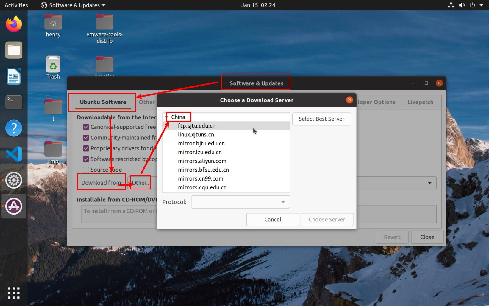
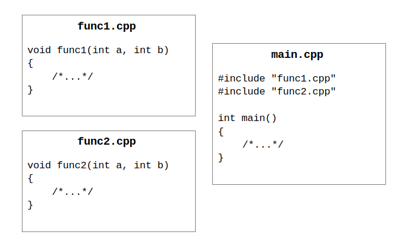
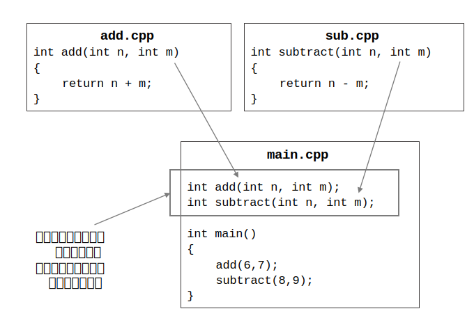
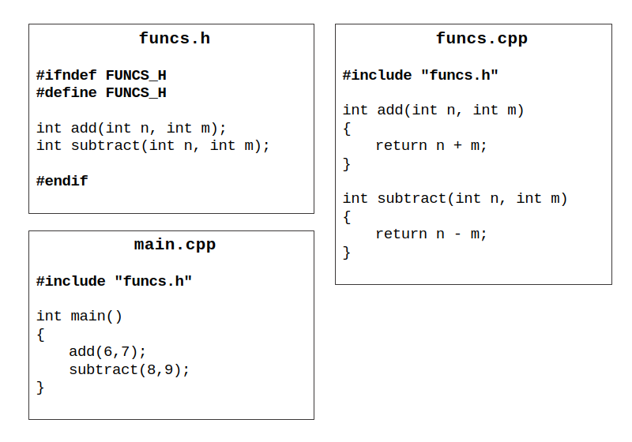

前言
很高兴认识看到这份指南的你！
当代生活，谁离得开计算机呢？关于如何使用计算机的教程和内容有很多，但奈何篇幅限制，大多只能浅谈一二，不能深究其中道理，或者要求读者有一定的背景知识。一些高阶的使用技巧，要想掌握需要不少的先决知识，然而一般用户可能并不了解其中涉及的术语和概念。此外，纵使身边有熟悉计算机使用的亲人朋友，由于知识背景不同，普通用户也很难与之沟通；这一情景也同样发生在国内诸多大学的新生群体中。
因此，本教程尝试以一个更易于初学者理解的方式介绍计算机相关的知识，希望能为初学者提供进一步前行所必要的知识，并建立起一个知识的框架。
也许你刚刚接触人生中第一台计算机；也许你对自己手中已有的计算机还知之甚少，遇到问题不懂如何解决。无论是哪种情况，希望这份教程能带你熟悉计算机的原理、日常使用，也能让你掌握计算机的高阶使用。
本教程目的是尽可能打造一个较完备的知识体系，对于许多内容只是尝试提供一个笔者认为易于初学者理解的打开方式，而不会事无巨细地详细阐释每一个知识点具体的细节。所以，本教程希望读者在阅读时，可以自行实验、思考和联想。同时，本教程不能代替专业书籍，因此也可能需要读者在使用时查阅其他资料。
同时，为了使文章不至赘余，一些前文提到的概念在之后可能不会重述，因此可能需要读者认真阅读。本教程尽量保证后文中出现的概念，会在之前的部分有相应的介绍。
以上，祝你学习愉快！
在线阅读：
- GitHub Pages：tsagaanbar.github.io/Newly-Programmer-ABC
如果你正在使用浏览器浏览该页面，点击左上角“菜单”图标，可以查看教程目录。点击右上角“打印机”图标，可以将本教程打印为 PDF，以便离线阅读。
读者也可以通过下面的链接，访问该项目的在线仓库，以随时查看更新或参与该项目。
项目地址：
准备篇
要开始接下来的内容，需要读者……
- 具有中学及以上或其等价学历（语文、英语、物理、化学等方面）
章节导览
准备篇：什么是计算机？
数据
在开始一切前，我们希望向读者介绍“数据”的概念。人类活动总会产生数据，人类也希望记录下这个过程中产生的有意义的数据，并对其进行处理和分析。
从原始社会开始即是如此。比如，人想记录“捕获了多少猎物”，或者“养了多少只动物”，从尝试描绘实物的“壁画”到抽象的“结绳记事”。再后来，人们发明了“文字”这一伟大创举，可以用有限的符号组合，表示出广泛的含义，人们也因此可以以更高效的方式记录下更多生活中的事件。曾经，5 只羊可能需要用五幅图画或者 5 个绳结来表示，而通过文字，我们可以用表示数量“5”的符号和表示物品“羊”的符号的组合来表示这个事物。人们也可以用诸如人称代词“你”“我”和表示行为的词“喜欢”的方式来表示对对方的爱慕。
以上，便是数据的产生、表示以及记录。其中，诸如以 5 个绳结表示 5 只羊的“抽象”的存在，是不可避免的。
一些概念的介绍
初中阶段的英语学习告诉我们，电脑的英文是“Computer”。我们知道，“-er”后缀表示经常从事某项动作者，因此可以说，“Computer”就是一种经常进行“Compute”的机器。那，什么是“Compute”呢？
字典告诉我们，“Compute”作及物动词时为“以数学的方式来确定某值”，作非及物动词时即为“计算”的意思，意思和“Calculate”接近。可以看出，计算机做的是严谨的数学运算。
是的，尽管现在计算机多以手机、电脑等形式出现，且通常被用于播放视频、进行聊天游戏等用途，但计算机们最早的前身确实是在从事一次又一次单调的计算操作（其实现在也是）。无论是计算两个数相加的结果，还是显示绚丽的图片和视频，它们背后都是简单的运算，只不过是几次和千万次运算的差别。
而归根结底，人们使用计算机就是在和数据打交道。不管是记录信息、读取信息、分享信息，还是从信息中获取更有价值的信息，都是对数据进行的存储、读取和处理。
而计算机需要通过人们编写程序来实现对数据的存储、访问、处理。所谓程序（program），也就是一系列有机组合在一起的指令（command）。
“一切皆数”
如我们前文所说，计算机的工作就是做大量的计算。因此，如果我们想用计算机帮我们存储或者处理信息——比如录入文本、存储照片、观看视频等——就必须把信息用数字表示出来。这个过程就是所谓的“编码”。
我们日常生活中接触到的数据，几乎都可以使用文字描述出来。那么，通过给我们使用的文字和符号编号，就能用若干数字表示一段文本了，进而表示数据了。
不过，我们常说“百闻不如一见”，视觉和听觉上的体验有时也是十分重要的。现代科学告诉我们，视觉是由光波刺激生物的感光细胞产生的电信号经由神经传输至大脑而产生；而声音的本质则是波在空气中的传播。如果有一种方法可以记录下色光和波形，那么也就可以记录下图像和声音了。
对此，我们依然可以采取“编号”的方式，比如，我们可以用 1 ~ 100 的 100 个数字，表示 100 种颜色，而将若干颜色点（也叫“像素”）排列在一起，就能拼出一幅图像了。而要记录波形，我们可以在波形上选取若干能够代表波形的点，用数值记录下波在此处的强度，以此便得以记录下一个波形，进而记录一段声音了。
关于文本编码的问题这里只简单的介绍一下，便于读者理解：最基础的编码有“美国标准信息交换码（ASCII）”，但是它大概只覆盖了基本的英文字母和阿拉伯数字，对于使用英语的用户来说可能够用了，但是对于其他国家的用户来说，要表示自己的文字很显然不够用了，于是各国便开始设计自己的编码方式，比如 GBK、Big5 等等，但是因为这些都是独立开发的，同一个数码在不同的编码下会表示不同的字符，不同编码间会有冲突，于是 Unicode 编码应运而生。
比特
我们平时会把计算机叫做“电脑”，因为其运作离不开电。上文我们说到要用数字来表示信息。对于人来说，常用的是十进制数。但是要是在计算机中原样存储十进制数，每一位需要有 10 个状态，这对于电路来说并不好实现，因为它并不是那么稳定：比如我们想规定 0 ~ 9V 之间的每一个整数电压分别表示数字 0 ~ 9，可电压并不会稳定在某一个数值附近。因此我们只能希望一个电压区间来表示一个数，比如 2.5 ~ 3.5V 之间的电压表示 3，5.5 ~ 6.5V 之间的电压表示 6 等等。但考虑到电压还是会有波动，因此这样的方式会很容易产生错误。
于是，为了减少错误发生的可能，计算机中一般采用二进制，计算机中的数也是二进制数。即使用高低电平来表示二进制数位，这使得电压只需达到固定的阈值即可，而不用关心具体的数值；比如我们可以规定大于某个数值的电压为高电平，表示 1；此外表示低电平，表示 0。
除此之外，如果要在计算机中表示 10 进制数，就需要 10 个状态，而我们需要至少 4 个二进制数位才能表示 10 个状态（根据乘法原理，n 个 2 进制数码能表示 \(2^n\) 种状态）。这无疑会造成存储的浪费，并且在进制转换时也需要额外的运算，因此不如直接在计算机内部使用 2 进制，只在需要输入输出才进行进制转换。
计算机中，我们把一位二进制数称为一个“比特（bit）”，把 8 个比特称为一个“字节（Byte）”。
历史上曾经有这样一段时间，对于一个字节有多少位，各种硬件并没有统一的标准。对于早期的编码系统里，人们多使用 6 位的二进制数码来表示一个字符（也就是能表示 64 种字符），而计算机多采用 6 位或 9 位作为一个字节。因此，这些系统常采用 12、18、24、30、36、48 或者 60 来作为字（word）的长度（即“字长”，通常为一台机器一次能处理的最长的二进制数的位数），分别对应 2、3、4、5、6、8 或 10 个“6 位长‘字节’”。
参考链接：Byte - Wikipedia
数的进制
数的进制可以是任意的。对于一个 \(n\) 进制数，其第 \(i\) 位上的数为 \(d\)，则该位表示的数为 \(d \times n^{i-1}\)。其中，\(i\) 为从数的最低有效位（least significant digit）开始数起，并从 1 开始计数。事实上，不同于现实生活，在计算机中，很多事物都是从 0 开始编号。
由于二进制数书写起来过于长，因此我们也常用 16 进制来表示计算机中的 2 进制数。
数据大小的度量单位
在计算机中，对于数据长度的度量，一般以字节为最小单位，使用 1024 作为进制。
| 单位 | 英文 | 含义 |
|---|---|---|
| 字节 | B (Byte) | 计算机中存储信息的计量单位，一般为 8 位二进制数 |
| 千字节 | KB | 1 KB = 1024 B |
| 兆字节 | MB | 1 MB = 1024 KB |
| 千兆字节 | GB | 1 GB = 1024 MB |
| 太字节 | TB | 1 TB = 1024 GB |
我们在形容数据存储设备、或者形容数据记录的大小时，通常采用上述单位。
如今，在计算机中存储的文本数据，通常以 KB 来计算；在计算机中存储的照片、音频等数据，一般是以 MB 作为单位进行计算的；一般拍摄的视频，在几十至数百 MB 以上；而电影、电视节目，一般以 GB 计量。
上述大写的 K、M、G、T，事实上是计算机领域中的度量单位，其中的以“千”为进制是以 1024 为进制，即 2 的 10 次幂（\(1024 = 2^{10}\)）。而我们平时常用的“千米（km）”和“千克（kg）”等单位，其中的“千”指的是 1000（10 的 3 次幂），对应为小写 k。
硬件厂商在生产存储设备时，常使用 1000 作为进制。这也就会造成，一个标称 32 GB 的 U 盘，可能实际只能存放约 29 GB 的数据。
在区分这两种进制时，有时会使用 K 和 Ki（以及 M 和 Mi 等）来作为区分。KiB（Kilo Binary Byte，kibibyte）为 \(2^{10}\) 个字节，KB（Kilo Byte，kilobyte）则为 \(10^3\) 个字节。
总的来说：
- 当 K 单独出现时，可能代表 1000 或 1024
- 当 K 与 Ki 一起出现时，K 代表 1000，Ki 代表 1024
- 当 K 与 k 一起出现时，K 代表 1024，k 代表 1000
在形容数据流或者数据传送的能力（带宽）时，我们通常以比特为最小的单位。这里的小写“b”指的是“bit”，与字节的“Byte”作为区分。
| 单位 | 英文 | 含义 |
|---|---|---|
| 比特 | bit | 1 bit，即 1 个二进制位 |
| 千比特 | Kb | 1 Kb = 1024 bit |
| 兆比特 | Mb | 1 Mb = 1024 Kb |
| 千兆比特 | Gb | 1 Gb = 1024 Mb |
我们在办理宽带业务时，或者形容视频的码率时，使用的一般是上述的单位。
由于 1 Byte = 8 bit，所以如“MB”和“Mb”之间单位的换算需要乘或除以 8。比如，平时所说“100 M（100 兆）”的宽带，所能提供的数据的传输速度大概是“12.5 MB/s”。
在用户端，宽带的带宽一般指的是下行速率，即用户将数据下载到本地的数据。为了确保用户的体验，一般宽带公司会提供略大于 100 Mb 的带宽。实际使用时，根据用户的多少，这个数据也会有所浮动。所谓的“100 Mb”，确切的说应该是“100 Mb/s”。
关于“宽带”“码率”，我们会在后续详细介绍。
生活中的计算机
计算机在我们的生活中无处不在。我们生活中常使用的，除了笔记本电脑、台式电脑，智能手机、智能手表，也是计算机。在我们平时看不见的地方，比如超级计算机，或者遥控器、微波炉内部的芯片，也同样是“计算机”。
像笔记本电脑、台式机这种大小不大、为个人应用而设计的，称为“微型计算机”或“个人计算机（Personal Computer，PC）”，简称“微机”。生活中经常说到的“计算机”，一般也指微机。而如同手机、手表甚至微波炉内部芯片这种，我们一般称之为“嵌入式（embedded）计算机”。嵌入式计算机通常相对简单、体积小，通常被用来控制其它设备——如无人机、机器人、相机等。也有非常庞大的计算机，一般用于特别的科学计算，或者大型的服务需求；这些大型计算机也被称作“超级计算机”。
关于电子计算机，维基百科 上这样给出定义：
计算机（亦称电脑）是指能够通过编程，根据一系列指令执行任意算术或逻辑操作的机器。
尽管计算机种类繁多，但根据图灵机理论，一部具有着基本功能的计算机，应当能够完成任何其它计算机能做的事情。因此，理论上从智能手机到超级计算机都应该可以完成同样的作业（不考虑时间和存储因素）。
To Be Continued...
挑选自己的爱机
要使用物品总是需要付出的。去网吧需要按使用时长付费，购置自己的设备则需要一笔可观的资金。购置设备后，也还会有其他的费用支出，比如接入互联网的费用、维修保养的费用。
如果你有幸有条件选购自己的计算机，那么这里有一些建议——虽然根据不同的价位，有不同配置的选择，也有诸如台式、便携、笔记本、二合一、Mini PC 等不同形式的选择，但无论如何，有一些方面总是要考虑的：
显示器
现在的家用电脑一般都会有显示器，这样用户才能看到精美的图形界面，拥有良好的网页浏览和视频观看体验等等。因此，挑选一个好用的显示器很重要。
首先要考虑的是显示器的色域。简单地说，色域的大小就是显示器能显示的色彩的多少；色域越高（广），显示的图像就会越生动、鲜艳。
早些年的显示器因为工艺的限制，无法达到较高的色域，因此比较起来显示的内容会显得苍白，随着生产力的发展，现如今已经基本不存在这样的问题了。但是仍有厂家会售卖低色域的显示器，购买时需要注意。
常见的用来度量显示器色域的色彩空间有 sRGB、NTSC、DCI-P3 等，一般来说，72% NTSC、100% sRGB、90% DCI-P3 是每个色彩空间度量下的标准配置；需要注意，虽然都是标准配置，但是它们并不完全等价。
用简单的话来讲，色彩空间即是在一般人眼可见的所有色彩中划分的一个区域。通过指定色彩空间中最绿、最红、最蓝的颜色，就确定了一个色彩空间。实际使用中，指定了一个色彩空间，我们就可以通过红、绿、蓝三种颜色的强度，来表示其中的一个色彩，假设我们用从 0 到 1 的小数来表示，那么 0 意味着信号强度为 0，1 则意味着色彩达到规定的最强的强度。也就是说，同样的三个指标，在不同色彩空间下对应不同的颜色。而同一个颜色，在不同的色彩空间下有着不同的指标。显示器能显示的色彩的集合即为显示器的色域。在图像的捕捉、记录到还原中，如果我们使用相同的色彩空间，那么就能保证色彩的还原。如果色彩空间不匹配，那么就会导致还原出来过于鲜艳，或者过于平淡。比如，在一个更大的色彩空间下的图像信息，在低色域中无法表示，只能通过相应的算法做转换，使得转换后的颜色的偏差尽可能小、观感尽可能好；如果不进行转换直接输出（也就是用低色域直接表示同样的色彩指标），那得到的颜色相差会更大，一般来讲图片会变得比真实观感暗淡。如果在一个低色域下的颜色指标，直接在广色域下表示出来，则得到的颜色也是有偏差的。因此，显示器的色域并不是说越高越好。
早些年的设备水平有限，不能涵盖很多的颜色，因此制定了 sRGB（standard RGB）色彩空间，以期同一幅图片能够在不同设备上达到尽可能一致的效果。不过现在的显示器大多能表现高于 sRGB 色彩空间中的色彩，因此如果不进行恰当的色彩管理，图片的显示就会出现问题。
另外，显示器的色深也是一个需要考虑的因素。常见的有“8 bit”“10 bit”的色深。这主要形容的是显示器表现色彩的过渡能力。一般来说，计算机使用的都是 8 位 3 通道（也称 24 位）的图像，也就意味着每种颜色从无到最亮，一共有 2 的 8 次幂种过渡状态；三种颜色联合起来，就能表示 \(2^8 \times 2^8 \times 2^8 = (2^8)^3 = 16,777,216\) 种色彩，这也就是平时所说的 1600 百万色。同理，10 bit 色深的显示器就支持约 10.7 亿色。
我们也会见到如“6 抖 8”和“8 抖 10”以及“原生 10 bit”等说法。所谓抖动，就是某一个像素点在两种颜色之间快速闪动，从而使人看起来像是介于两种颜色中间的颜色，进而实现超过显示器硬件能力的显示效果。
其次，显示器的刷新率也需要考虑。如果想要获得良好的 FPS 类游戏的体验，那么你应该需要购买高刷新率的屏幕，一般会被商家简称为“高刷屏”“电竞屏”。
现在常见的显示器的刷新率一般为 60 Hz，即每秒刷新 60 次，可以理解为每秒钟可以显示 60 帧画面。越高的刷新率，会带来越流畅的画面。但是同时也要注意响应时间和拖影的问题。
还有显示器的分辨率。数字图像由像素组成，我们可以把显示器简单的想像成一面由很多能显示不同色彩的小小灯珠排列形成的矩阵，这样，当众多灯珠按照图像的像素组成而显示不同的颜色时，从宏观角度来看，就是一幅栩栩如生的画面了。当我们看到如“1280 × 720”和“1920 × 1080”这样的描述时，往往说的就是像素的数量了。理论上来说，像素越多，越能将一幅图像描述的更加精确。
便携性
从装在机箱里的台式机，到笔记本电脑，再到轻薄型的笔记本电脑，到 Mini PC，再到平板电脑，这些计算机们的便携性逐步提升，但是往往性能会逐渐降低。
但是注意是“往往”，并不是绝对。比如随着技术的发展，轻薄的电脑也能比过之前的台式机；而且轻薄也不一定意味着性能的损失——它们可能只是相同性能的电脑，经过更加用心的设计和布局，减少了内部的空间。当然，消费者就需要为这些用心的设计和做工支付更高的价格了。
品牌
通常，自行购买零件组装个人电脑，会比购买某个品牌推出的现成的机器更为经济划算，用户也能有更多自定义的选择。但是品牌往往也为用户带来了完善的售后服务和技术支持。
性能
性能也是需要考虑的因素。通常，磁盘、内存，以及处理器，决定一台计算机的性能。
一般来说，磁盘、内存越大越好，处理器主频越快越好。当然，就算是同样大小的磁盘和内存，也有着很大的区别。
磁盘
现在，对于一般笔记本电脑来说，其磁盘已经大多为固态硬盘（SSD）了；也有部分笔记本会采用混合硬盘的方式，即采用固态硬盘（SSD）+ 机械硬盘（HDD）的方式。
机械硬盘内部是一块磁性圆盘，通过磁性记录信息。工作时，机械硬盘利用磁头在磁盘上通过磁性写入信息。固态硬盘则是利用固态电路记录信息。振荡很容易导致机械硬盘这种物理机械结构发生故障，而固态硬盘相对来说不容易受到震动的影响。
由于历史习惯，我们可能会将二者统一称作磁盘，但是固态硬盘从原理上说并不是磁盘。有时我们也会将计算机这种长久存储信息的设备称作硬盘（hard disk），这可能是一个与软盘相对的称呼：曾经，人们用一种软质的磁性碟片存储信息，该种介质通常用作在计算机之间传递文件。
关于固态硬盘和机械硬盘的特点，大约如下：
- 固态硬盘速度很快，抗震抗摔，但是单位容量价格偏贵，且使用寿命与机械硬盘相比较短，误删数据不易恢复；
- 机械硬盘速度较慢，不抗摔，但是价格便宜，误删数据相对容易恢复。
处于笔记本便携性的考虑，建议选购固态硬盘的机型。所谓的“使用寿命较短”其实并没有那么可怕，而且只要平时做好重要数据的备份，则完全不用担心。
如果有大文件存储需求，且预算紧张，可以考虑购买移动硬盘（HDD）；但如果资金充裕，还是建议购买移动固态硬盘。
对于机械硬盘来说，转速越快，意味着写入 / 读取速度越快。
对于固态硬盘，一般需要考虑颗粒类型、接口类型和协议等。现在一般很少会遇到搭配 SATA 接口的固态硬盘，因为该种搭配的速度会受到接口的限制。多见的是 M.2 NVMe 的固态硬盘。大多数情况下，厂商不会在产品介绍页说明自己产品使用的颗粒类型，消费者也不用过于纠结，只要不贪图低价，一般不会上当受骗。
至于容量的选择，如果从事的工作确实很轻量，可以考虑 128 G 或 256 G 的型号。一般还是建议选购 512 G 的磁盘容量。如果资金充足，可以购置 1 T 容量的机型，或者选择加购移动硬盘。
内存
如果把磁盘比作存储信息的仓库，那么内存就是使用信息的桌面、舞台。通常，计算机访问内存的速度远快于访问硬盘的速度。内存越大，计算机就能更快的同时运行多个程序。为什么呢？因为计算机可以一次将内容载入到内存，而不必频繁从硬盘读写，因此减少了很多访问时间。想象一下，假如你有一个很大的客厅，那么你就可以把自己想玩的游戏机、立体声音响、电视机等等全都放在里面，而不用在想使用它们时，还要费时间从储藏室把它们搬出来。
虽然内存读写速度很快，但是其不具备长期储存信息的能力。切断电源后，内存中的信息都会消失。
现在的硬盘读写速度越来越快，甚至比曾经计算机的内存还要快很多。而且，非易失性闪存也已经研发出来。也许有一天，计算机可能真的就不需要硬盘 / 内存了。
针对现如今的使用需求，建议购买内存在 16 G 或以上的机型。
处理器
处理器是计算机实现计算功能的核心。处理器，即“中央处理器（CPU）”。处理器需要关注的指标有主频、Cache 大小。
更高的主频，意味着处理器更快的处理指令的速度，也就是更快的计算速度。
一般消费者不太会关注处理器 Cache 的大小。Cache 的作用，可以类比内存之于磁盘的作用。处理器可以把经常需要用到的信息放在 Cache 里，这样便可进一步缩短处理时间。由于与处理器紧密相连，Cache 的访问速度极快，但成本也很高，是很宝贵的存储单元。
Cache 越大，一般意味着处理器运算越快。
图形处理器
To Be Continued...
认识计算机
使用电子产品
正确的使用习惯
首先，一定要阅读设备的使用说明书，并妥善保管说明书以备查阅。同理，在使用软件之前，不宜跳过软件自带的指引。跳过这些提示，就好比游戏时略过剧情或者指引，以致游戏时完全靠本能操作，继而带来很多问题。
现在的很多智能设备通常不再附赠使用说明书，其包装盒内可能只会附带一份简要的操作说明，详细的操作一般通过设备内置的软件，或者官方网站等在线方式获取。我们会在后边更加详细的介绍互联网相关的内容。
下面将介绍一些操作电子产品的基本注意事项。
开启与关闭
这大概是最简单的操作了，也是我们接触的最多的操作：按下手机电源键，点亮屏幕；再次点按，屏幕熄灭；打开笔记本电脑，屏幕点亮；合上电脑盖子，屏幕熄灭。这些情况下，设备并没有真正关闭，只是暂停了大多数正在进行的任务，只保留少数必要的任务，比如接收消息通知、闹钟定时等。
要想关闭设备，一般应该执行设备的“关机”操作。一般通过点选设备的电源菜单进行关机，关机后设备执行的各项任务将停止。
通电状态下，设备的各硬件都在运作；当涉及到一些精密器械的时候，比如台式电脑主机内部的机械硬盘，在运作的时候对震动或者运动十分敏感，如果在设备运作时移动或者晃动设备，则很可能造成不可逆的伤害。因此，一般先断电才能对设备进行移动或者更进一步的操作，比如维修、清理等。
一般情况下，关闭设备意味着断电。但是很多时候关机后设备内仍有电流流通以维持一些基础元件的运转，比如微机内部的时钟、对按键操作反应的能力（如果完全没有电流，那么按键一般也是不能将设备开启的）。这也是为什么拆卸手机时一定要强调先将主板上的电源线断掉的缘故。
有时我们会遇到手机、电脑死机的情况，这个时候可以尝试长按电源键强制断电（一般 5 ~ 10 秒）。该操作对于手机、电脑等大多数设备都适用。但是具体使用还是要阅读使用说明书。同时也要注意强制断电只应在万不得已的时候使用，不然可能会对设备造成不必要的伤害。
在现实生活中，我们可能会接触到很多设备，因此可能需要大家掌握判断设备能否直接断电的能力。
电源、供电、充电
大多数电子设备对于供给给它的电源的要求是很挑剔的，如果供给了不适配的电源，轻则设备不能开启或不能正常运行，重则导致设备损坏，所以在使用设备前一定要清楚它所需要的电源规格是怎样的。
现如今，大家手边的智能设备通常都能够在充电完成后自动断电，所以可以一直接着电源使用。但是一些老式的充电器或者电池则不能这样子操作（比如电动车电瓶的充电），需要使用者在电池充满后及时断电，否则可能会导致事故的发生。
很多智能设备在连接到充电器前，也会相互确认电流和功率大小等。因此虽然使用了不适配的电源适配器，可能也不会导致设备损坏。但是如果使用了劣质的充电器、线材等，则可能不具备这样的功能。
接下来的章节会介绍常见的线材、接口以及协议。
警告标志
需要了解常见的警告标识。
常见的接口、协议
观察身边的电子设备，包括读者手上的计算机，他们通常都有各种各样的接口。在接口之上，有着各种各样的协议。
什么是接口？
首先抽象的解释一下接口。
接口使得设备可以与外界交互，以及与其他设备相连接。
为什么要有接口的存在呢？事物之间需要有通信，但是又不能将自己整个暴露在外，所以就只留出一些接口出来，这样也方便对输入输出的信息进行掌控，而不至于使自身的结构遭到可能的破坏。
接口的概念可以更广泛、更抽象，一切可以提供输入输出功能的都可以视作“接口”，常见的有网页的接口、应用程序的接口（API）等。比如我们编程时也会提到如某个模块或者某个应用程序的接口。
具体到我们现实中能够看得到的接口来说的话，有这么几点需要注意：
有些接口外观很相似，但它们毕竟是不同的接口，强行插入可能会导致接口损坏。
有些接口外观一模一样，但它们的功用和能力可能千差万别，不能仅仅以接口形状来判断它的功能，一般通过接口旁边的标识，或者设备的技术说明文档判断。
什么是协议？
因为接口涉及到数据 / 信息的传输，所以需要规范其传输内容的格式和规范，这样才不会在传输过程出乱子。这便是“协议”。协议与接口相伴而生。
比如我们可以往邮筒中投入信件，但邮筒的送信口规定了能放进去的信件的尺寸和厚度。如果信件不满足要求，则不能被投入邮筒。
我们生活中最常见的手机充电，都需要有相应的协议。试想，如果电池和充电器之间如果没有通信、没有协商好的传输功率，我们还能保证设备的正常充电或者电池不被烧坏吗？
常见的接口、协议，以及对应的连接线
连接线
在接口之间，需要线缆的连接。但是，拥有同样接头的线缆，其承载能力却可能不一样。一般来说，同样接口的，越结实、越粗的线，其能力越强（比如承载数据带宽更大、承载功率更高）。
通常，人们把能插入插槽（slot）的接头称为“公（male）”，把插槽称作“母（female）”；把两头都是公头的连接线称作“公对公”，其他以此类推。
USB
VGA
HDMI
使用自己的计算机
如何使用自己的计算机呢？
基础的知识：
通过图形界面与计算机交互：
使用互联网：
文件、目录与文件系统
数据层级
之前我们说到，无论是记录信息、读取信息、分享信息，还是从信息中获取更有价值的信息，人们使用计算机就是在和数据打交道，都离不开对数据进行存储、读取和处理。
根据第一章中的介绍，我们在计算机中，以数码的形式记录下文本、图形或者是声音。这些是我们所关心的数据。但是数据也有层级之分。最小的是一个“比特”，其次是一个“字节”。通过若干个字节，我们便可以表示二进制数字，或者编码后的字符了。连续的字符组合起来是字符串。一段文本也是一个字符串。若干个数字、字符串在逻辑上关联起来，便可以用于形容出一个事物了。
数据的管理方式
很久以前，甚至在一些现代的嵌入式设备中，要么根本没有对目录的支持，要么仅有一层目录结构（也就是说，不能有子目录，而仅有一些各自存有文件的顶级目录）。
这就好比一个人拥有很多物品，但是只能将它们一股脑地放在一个大篮子里面，没有层级，不能分门别类。这会给寻找特定的物品带来很大的不便。
世界上第一个流行的、完全分等级的文件系统是 Multics 文件系统，这种文件系统是丹尼斯·里奇的早期研究成果。
所幸我们现在的计算机系统可以让我们自由的创建目录。
一个目录（文件夹）就是一个装有数字文件的虚拟“容器”，在它里面保存着一些文件和其它一些目录。在一个目录中的另一个目录被称作它的子目录（子文件夹）。
多个文件通过存储在一个目录中，可以达到有组织的存储文件的目的。这样，这些目录就构成了层次（hierarchy），或树形结构。
“文件夹”的比喻：“文件夹”这个名称将目录比作办公室里用的文件夹。这个名称自从一开始被 Apple Lisa 使用以来，在几乎所有现代操作系统的桌面环境中广泛使用。在图形用户界面中，文件夹通常会以一个看起来很像真实文件夹的图标展现给用户。
“图形用户界面（GUI，Graphical User Interface）”是一个相对于“命令行界面（CLI）”的概念。他们都是用户操作计算机的方式。我们会在之后介绍这两个概念。
一些概念性的称呼
通常，目录和文件夹是一个意思。目录中可以包括文件，还可以包括目录。
一个目录中包含的目录就称为子目录，子目录所在的目录是称为它的父目录，或者就上一级目录。
当前目录就是用户正在使用的目录，又称为“工作目录”。
路径
用户在磁盘上寻找文件或子目录时，所历经的文件夹线路叫路径。
为了表示路径，我们有一些约定的方法。
特殊目录的表示：
.表示当前目录..表示当前目录的上一级目录~表示当前用户的家目录（Home）
Unix 一般用正斜杠“/”（forward slash）分割路径，Windows 一般用反斜杠“\”（backslash）。
举几个例子：
- 以“
/usr/local/”为例，最开始的“/”表示根目录，即根目录下的“usr”目录下的“local”目录。也可以写作“/usr/local”。 - 以“
files/1.txt”为例，它表示（当前目录下）“files”目录中名为“1.txt”的这个文件。也可以写作“./files/1.txt”。 - 以“
1.png”为例，它表示（当前目录下）的名为“1.png”的文件。也可以写作“./1.png”。
路径分为绝对路径（Absolute Path）和相对路径（Relative Path）。
绝对路径：从盘符（表示硬盘分区的字符）开始的路径，以“\”作为开始。如“D:\视频\我的电影\”目录下，像这种直接指明了文件所在的盘符和所在具体位置的完整路径，即为绝对路径。上文中的“/usr/local/”也是一个绝对路径。
注：*nix 系统下的绝对路径一般从根目录“
/”开始表示，而 Windows 则采用盘符开始的表示方式。如果暂时不清楚什么是根目录或盘符，不用着急，我们会在后面讲到。
相对路径：相对于当前目录开始的路径。在制作网页、编写程序时使用的资源，往往使用的都是文件的相对路径。这样做的目的在于，当整个项目的存储路径变化时，而文件之间的相对层级关系不变时，仍能找到彼此。上文中的“files/1.txt”“1.png”都可以作为一个相对路径。在相对路径中，也可以使用“.”“..”。
什么是文件？
在计算机中谈到的文件，就是指长期存储在硬盘里的数据。
对于计算机来说，不管是文档（字符串）、图像、视频还是可执行程序，都是一串串长短不同的数据记录。为了形象的理解这些数据记录，我们借用现实世界中文件的概念来表示它们。
数据文件与可执行文件
一般来说，文件有文本文件、视频文件、音频文件、图像文件、可执行文件等多种类别，这是从文件的功能进行分类的。从数据存储的角度来说，所有的文件本质上都是一样的，归根到底都是二进制的、都是比特串。
与其他文件不同，可执行文件的重点在于“可执行（executable）”。可执行文件中存储的是一系列计算机能够理解的指令，也就是我们说的程序。执行程序，也就是执行这个文件里的指令，就可以使计算机完成相应的任务，因此我们将这样的文件称为“可执行文件”。
计算机要执行各种任务，离不开存储在其内部的可执行文件（也就是事先由开发者编写好的程序）。只有通过这些程序，计算机才具有意义（换句话说也就是能工作），因此这样程序也被称作“软件（software）”，即运行在计算机硬件之上的内容，这个内容是可变的、流动的。而区别于计算机自身运行所需的程序，我们把用户可以用的、拓展计算机基础功能的程序叫做“应用程序（application）”。相应的，计算机要使用连接到自己的硬件，从中读取信息或者向其写出信息，则需要“驱动程序（driver）”。
理论上，计算机的容量越大，就能存储越多的程序，其能实现的功能也就越多。
而文件之间的不同，还体现在它们对于的数据存储方式。这是文件的创建者和解释者（使用文件的软件）约定好的。我们把这称作文件的格式（File Format）。
关于“文件格式”，我们还会在后面的章节进行阐释。
纯文本文件与二进制文件
但我们很多时候会看到将文件分为“纯文本文件”和“二进制文件”的行为，这该怎么理解呢？
以常常说到的“纯文本（Plain-text）文件”为例，它仅仅是按照一定的编码方式（某种从文字到二进制数码的规则）将一串字符变成一串数码串，进而存储在计算机中，形成文件。当我们逐个解释文件中的编码时，就能得到一个个字符，这些字符直接就形成了人类可读的文本。此即“纯文本”中的“纯”所表示的意思——直白。
与“纯文本文件”相对的，一般称为“二进制文件”。尽管它们都是二进制存储的，可能因为二进制文件中存储的是不能被人类直接读取的二进制数码——是经过一定规则编排、甚至压缩的数码，不能直接解读成人类可读的（文本）——而得名。常见的“二进制文件”包括图像、视频、可执行文件。
如果我们尝试按照解释纯文本文件的方式解读上述的“二进制文件”，得到的就会是一片乱码。
请继续阅读后续有关“编码”“解码”“文件格式”的章节。
文件的大小
我们也常常会用“大小”“占用空间”来形容一个文件。不难理解，“大小”指的是文件所包含的数据流长度。
有些时候，我们可以通过文件的大小来判断文件的类型——所谓的“二进制文件”一般会比“纯文本文件”要大得多；视频文件一般比图像文件大。但是这些都不是绝对的，我们可以有一个非常长的文本文件和一个非常小的图像文件——这个时候，之前的规律就不成立了，文本文件会比图像文件大得多。
分区
我们可以在一块物理磁盘上，人为分出几个虚拟磁盘出来，这样在一定程度上有利于分门别类的存放文件。这个过程叫做“分区”。当“分区”做名词时，指的就是我们分割出来的区域。
比如，以 Windows 为例，我们可以将系统文件存放在“C盘”，将日常软件存放在“D盘”，将影音文件存放在“E盘”等等。
你是否会好奇，“A盘”“B盘”哪里了呢？
按使用功能，我们可以把分区分为“系统分区”、“恢复分区”、“Windows 分区”和“数据分区”。“Windows 分区”就是存放 Windows 操作系统文件的分区，一般在“C盘”，有时也会被称为“系统盘”。
对于一般用户来说，“系统分区”、“恢复分区”通常是不可见的。
文件系统
如同现实世界中的仓库需要仓库管理员一样，计算机需要文件系统来管理存储在硬件中的数据，它负责文件的增删查改、属性管理等等诸多事宜。
文件系统格式
文件系统格式又称文件系统类型，不同的分区可以采用不同的文件系统格式，不同的文件系统格式往往意味着不同的特性和功能。
- FAT32：历史悠久的文件系统，被各种系统广泛兼容，缺点是单个文件大小最大只能支持 4GB；容易产生文件碎片
- exFAT：微软所开发的文件系统，在最新的各种系统中被广泛兼容，适合作为小容量 U 盘和闪存的文件系统
- NTFS：微软所专有的文件系统，可以作为 Windows 系统的分区，在其他系统中写入的兼容性不佳；适合用作移动硬盘的文件系统
- APFS：苹果所专有的文件系统，High Sierra 10.13 之后被广泛用于苹果的各种系统中，一般无法被苹果以外的系统读取
权限问题
有些操作系统中，用户被限制只能访问他们自己的用户文件夹或工程目录，使用户间的活动相互隔离。
盘符
盘符又称为驱动器号，是当前操作系统指派的用于访问某个分区的符号，比如 Windows 习惯将当前运行的 Windows 分区指派为“C”，也就是“C盘”的来源。可以通过磁盘管理对盘符进行删除和分配。
盘符只在当前系统下具有意义，例如，将一可移动驱动器接入一台显示了 3 个分区（盘符分别为C、D、E）的系统，U 盘的盘符可能会分配为“F”；换另一台显示了 4 个分区（盘符分别为C、D、E、F）的系统，则该 U 盘的盘符可能分配为“G”。
如果同时接入多个可移动驱动器，则接入的先后顺序也可能影响盘符的分配。
这也提示我们，通过绝对路径访问可移动驱动器上的文件并不总是可靠的。
小结
文件是操作系统在存储数据时使用的一种抽象概念。文件是文件名和一系列数据的整体，可以分为文件数据和文件元数据（文件属性）。文件元数据包括文件数据的长度、修改时间、所有权等用于支撑文件功能的其他部分，而文件数据则是文件保存信息的载体。
文件名用于区分不同的文件，通常保存在目录中。目录记录了这个目录下所包含的文件和目录，将文件组织成结构。目录可以理解为一个记录了其下包含文件和目录信息的文件。
文件系统是操作系统中管理文件数据和文件元数据的组件。
参考链接：
文件的格式
开始这篇内容前，读者需要：
- 理解计算机中“文件”的概念
编码
在“什么是计算机”一章中，我们说到，要让计算机存储、处理数据，就需要按一定规则将现实中的事物抽象，并用数字表示下来。
比如，我们可以给字母、符号编号，这样我们就能用若干数字表示一段文本了；比如，我们可以用 1 ~ 100 的 100 个数字，表示 100 种颜色，而用很多个颜色点——更一般的叫法是“像素”——便能拼出一幅图像了；比如，我们可以在波形上选取若干点，便可以用数字记录一个波形，进而记录一段声音了……
对于文本编码，最初的是“美国标准信息交换码（ASCII）”，它只覆盖了一些控制字符、英文字母以及阿拉伯数字等。该编码仅使用一个字节就能表示字符集中所有的字符。
而对于其他国家的用户来说，要想表示自己所用的文字，ASCII 编码显然是不够用的。于是各国便开始设计自己的编码方式，比如 GBK、Big5 等等，但是因为这些都是独立开发的，同一个数码在不同的编码下会表示不同的字符，即不同编码间会有冲突，于是 Unicode 编码应运而生。
要涵盖地球上所有的文字，一个字节显然不够用，我们可能需要 2 个、3 个甚至更多字节，才能表示所有的字符。但对于一篇皆为英文字符的文章，对每个字母都使用 2、3 或 4 个字节编码显然不合适，会造成很多空间的浪费。于是，Unicode 推出了变长字符编码的方式，如 UTF-8，其对英文字母等字符采用 1 个字节，而对于其他字符采用更多字节，通过每个字节开始的一些位来区分接下来的字符由几个字节组成。关于 Unicode 更详细的说明在这里不过多展开。
而对于一般图像，我们采用将其转化为像素平面的方式，从而实现图像的数字化。这个过程叫做“栅格化”，即在原图像上划分出若干栅格，取最能代表每个栅格色彩的颜色，作为所得数字图像对应位置的色点。这个过程也成为“采样”。我们划分栅格的数量，即为数字图像的“分辨率”。这种方式产生的图像，叫做“位图”。出于人眼感知色彩的三原色理论，我们一般用红、绿、蓝三种色光的强度，来表示人能看到的色彩。
我们可以用纯文本方式记录图像。在下面的例子中，“6”“4”代表图像的大小——宽度为 6 像素、高度为 4 像素。接下来的“255”，意味着图像中每个色点的最大值为 255。接下来的每一个数字就代表对应点色彩的强度。这里，仅有一个表示色彩强度的指标（即“单通道（Channel）”），我们把这样的图像称作灰度图。如果要表示彩色图，那么每个点可能需要三个指标才行，也即“三通道”。
6 4
255
24 0 38 129 4 154
12 73 227 40 0 0
12 173 127 20 0 0
21 73 87 230 1 0
可见，这个过程中，我们只能表示 0 ~ 255 共 256 个状态。曾经连续的光强信号，现在只能用离散的指标来表示了。
能表示图像，自然也能表示视频了。只需要将表示一个动作过程的若干连续图像按照顺序组合起来，即可形成“视频”，或者说“动画”。由于我们不可能存储无限张图片，可见，这个过程也是离散化的。
实际上，用文本文件表示图像的方法是非常低效的，浪费了太多的空间。文件中大量的空格是一种浪费。另外，我们常常要用 2 个甚至 3 个字符来表示一个像素的指标，这也造成了大量浪费。举个例子，如果要用二进制表示 0 ~ 255 之间的任意一个数，只需要 8 个二进制比特位；而如果使用字符表示法，仅仅表示一个字符就需要 8 个二进制比特位了。因此，实际情况下通常使用二进制记录这些数。除此之外，还有可能会采取各种压缩算法，降低数据量，从而降低传输、存储过程中的成本。
但是压缩不可避免的会带来信息的丢失。一般，视频、图像是人们最希望能够压缩的对象，因为其往往会占用相当大的数据量。举个例子，一幅分辨率为 1920 × 1080 的三通道 8 位位图图像，再不压缩的情况下，其最少需要 1920 × 1080 × 3 = 6,220,880 字节来存储，也就是 6,075 千字节（KB），这是一个很大的数目了。而我们日常使用中，同分辨率的图像经过压缩后，一般只有 200 ~ 2000 千字节左右。
由此就出现了形容视频、图像的一个指标——质量。也有更为专业的衡量指标，叫做“码率”，可以理解为单位时间内描述内容所用的数码的多少的意思。可以想见，数码越多、信息量越大，往往越能还原真实的视频、图像。
为什么有些视频网站上的「高清」资源，画质能糊穿地心？ - 哔哩哔哩：https://www.bilibili.com/video/BV1S64y127Jc
解码（Decode）
将数字化后的数值，重现还原成人类可读（或者说编码前的状态）的形式的过程，叫做解码。
比如，将压缩后的图像，还原为一个个表示像素强度的数值，甚至以文本形式、画面形式（人类可读性逐渐增强）显示出来，即为图像的解码过程。
总而言之，只要文件的制作软件和解读软件（如图像查看软件，音频、视频播放软件）遵循相同的格式约定，用户就可以在文件解读软件中看到文件的内容。
文件的格式
之前我们提到，文件的格式就是，文件的创建者和解释者（使用文件的软件）约定好的、对于的数据编码以及存储方式。
许多文件格式都有公开的、不同程度规范或者建议的格式。这些规范或者建议描述了数据如何编码，如何排列。有时也规定了是否需要特定的计算机程序读取或处理。有两种情况下，文件格式没有公开。第一种情况是：开发者将文件格式视作商业秘密不愿公开；第二种情况是：开发者不愿或花去很少的时间用于规范文档。
如何区分文件的格式
那么怎么区分文件的格式呢？最容易的就是在文件名中体现这一点，即给文件的名称加上一个扩展名（extension）。比如，我们有一个关于狗狗的图像文件，它的名称为“my-dog”，假如这是一个 PNG 格式的文件，则它的文件名可以为“my-dog.png”。这样，当我们看到一个文件的“后缀名”——因为扩展名在文件名的最后，所以我们有时也这样称呼文件的扩展名——为“png”，则我们有理由相信，这是一个 PNG 格式的图像文件。
但是，使用文件名来确定文件格式有个问题，因为文件的名称很容易修改，我们完全可以通过修改文件名，就能让其被当作不同的文件被处理。这样就会出问题，由于解码方按照错误的方式解码编码者提供的信息，那么非常有可能得到错误的、完全不能理解的信息。可能对于能够理解文件内容并修改其信息的行家老手来说，这项技巧会显得很有用；但对于不那么专业的用户来说，可能会在不经意间错误的重命名某文件，结果使文件变得“不可用”了。
因此，一些操作系统默认对用户隐藏文件的扩展名，以防止用户无意中更改了文件类型。我们会在后续章节介绍如何更改这个选项。
但是这又带来一个问题，当文件夹下又若干同名文件时，就会产生混淆。
比如有一个关于狗狗的文本文档，名称为“my-dog”，这就会和我们上文关于狗狗的图像文件“my-dog”形成冲突。虽然计算机不会混淆两个文件，但是会给用户造成一定的困扰。好在操作系统一般会给选项的旁边为用户标明文件类型，而图形化界面的操作系统一般还会给用户配上对应的图标——比如图片文件会用一个“照片”形状的图标来代替，文本文件会用“纸张”形状的图标来代替。
这些可爱的图标会给一些恶意程序带来可乘之机。程序也是文件，其中包含的是一连串操作计算机的指令。在图形化界面操作系统中，可执行程序往往会有一个自己的图标，而这个图标是可以由程序的制造者自定义的。因此，一个看起来像是“图片”的文件，可能是有心者精心制作的恶意程序。当用户看似是正常的通过双击打开文件时，实际上是执行了这个恶意程序。因此，在打开文件前，最好事先认真观察文件的类型。
图形化操作系统一般还是通过文件的扩展名来确定该选择哪个程序来打开文件，这样的程序叫做关联程序：当用户安装一个应用程序时，程序会告诉计算机自己能打开哪些后缀名的文件。这样，当用户选择打开一个文件时，操作系统会找到相应的程序来打开它。当有多个程序可用时，操作系统会选择用户设定的默认打开应用，或者让用户在若干程序中选择一个。而当文件没有扩展名时，操作系统就会询问用户，让用户来选择要使用的程序。
为了使解码软件能够明白一个文件是否为自己能读取的格式、为哪种格式，文件更多的还是会在自身的数据里标识自己的格式类型。一般，这个位置位于文件数据流的前 2 个字节。这样，无论文件的扩展名为何，（支持多种格式的）解码软件都有可能正确打开这个文件。
事实上，恶意程序有很多种类型，有些是通过在正常的文件中嵌入可执行的代码，利用解码软件的漏洞，在用户打开该文件的时候，在用户的计算机上执行设计好的操作。
还有些系统会在自己的文件系统中记录文件的类型相关信息。但这样有个问题，当文件在不同的文件系统之间迁移时，可能会发生文件属性丢失或者不支持的情况。
常见文件格式
纯文本文件
如我们之前所说，纯文本文件中的数码，都可以被翻译成人类可读的字符（前提是以正确的编码方式解码）。比如存储十进制数“123”，以纯文本形式存储即为“1”“2”“3”三个文字字符。
二进制文件
一般来说，当我们以便于程序处理的形式（而不是人类易读的形式）存储数据、或者需要提高存储的效率时，所形成的文件通常为二进制文件。比如存储十进制数“123”，我们可以将其存储为二进制串“01111011”。如果以文本形式显示这个数据，我们得到的是“123”这个编码所对应的字符，而不是数字“1”“2”“3”。
“二进制文件”这一概念很广泛，可以说，几乎所有计算机中存储的文件都可以称之为二进制文件，而常见的文件如图像、视频等也都常以二进制进行存储。当数据信息以二进制存储进文件时，我们习惯使用“bin”作为后缀名。
图像文件
在计算机中，常见的图像为位图，即用色点形成的平面表示的图像。与位图相对的是矢量图，矢量图通过记录绘图指令来描述图像，可以借助数学中“根据函数在坐标系中画出图像”来理解。
常见的位图文件的扩展名有“jpg”“png”“bmp”等，矢量图文件的扩展名有“svg”等。
视频文件
我们将连续的、形成画面的一系列图像称作动画。以一定的形式将这些图像组合起来，进行编码，即形成视频文件。
动画时间持续时间短的一般称为动态图像文件，持续时间较长的一般称为视频文件。
常见的动态图像文件的扩展名有“gif”，视频文件的扩展名有“mp4”“avi”等。
音频文件
记录音频的文件称为音频文件。常见的音频文件的扩展名有“mp3”“wav”“m4a”“flac”等。
压缩文件
我们之前说到，如图像、视频等文件在存储时一般会采用一定的压缩算法。我们也可以对一个或多个文件采取“压缩”操作。
对于文件的压缩，我们不希望有数据的损失。因此“压缩”的核心思想即为减少重复部分，以更少的数据记录原始信息。比如，我们有若干文本文件，其中每个文件中都有一段相同的内容，则压缩时对于这段内容，只需一次完整的记录即可。
除了缩小文件大小外，我们使用压缩文件还有另外的目的，即方便传输。假如要传输 100 个文件，在传输时就要分别对这 100 个文件执行传输所必要的额外操作，接收方也需要分别检查和接收这 100 个文件。这会带来很多时间开销。而我们可以根据情况选择事先将这些文件打包，这样传输时只需要传输 1 个文件即可。对于文件的校验操作，可以交由解压缩软件进行。
由于一般压缩文件中包含若干文件，如同邮递时使用的包裹，于是我们也形象地将压缩文件称为“压缩包”。
常见的压缩文件的后缀名有“zip”“tar.gz”“rar”等。
办公文件
使用计算机办公，通常有文档、表单、幻灯片这几种文件。Microsoft 的办公套件——如“Word”“Excel”“PowerPoint”——所使用的文件扩展名分别为“doc”“xls”“ppt”以及“docx”“xlsx”“pptx”等。像 Word 这样的办公套件是排版用的软件，这些文件也就是记录文档排版信息的文件。为了方便用户，这些文档会把用户使用的图片、视频等媒体也一并存入文件当中，以便达到便携的目的。实际上，这些文件就是一个若干文件的压缩包。
读者可以尝试使用压缩文件程序查看这些文件。可以在压缩文件程序的选项菜单中选择打开这个文件，也可以尝试修改文件的后缀名，从而可以使用其他程序打开这个文件。
常见的还有 PDF 文件，这种文件格式由 Adobe 公司创立。PDF 文档中可以有文字、图片、图形等诸多元素。不同于排版软件所使用的文档，PDF 一般作为一种固定的、不易被修改的格式，其预览效果和格式在不同设备上一般无明显差异，通常作为排版软件导出成品所使用的格式。
可执行文件
记录计算机可执行指令的文件称为可执行文件。我们通常使用的应用程序即为可执行文件。当然，很多应用程序还具有相应的资源文件，如图片、音频、视频等。
从某种程度上说，包含了执行命令的脚本文件也可以称作可执行文件。这些文件一般是纯文本形式的，常用来实现一些自动化的操作，因此也属于编程。脚本文件运行时交由 Shell 执行。常见的脚本文件扩展名有“bat”“cmd”“sh”等。
Shell 指一类应用程序，其最为接近操作系统，处在用户和操作系统之间，形如一层壳（shell），因此得名。一般运行在命令行界面中，可以解析用户的命令，提供一些操作计算机的功能。关于 Shell 我们在后续内容中还有介绍。
参考链接：
端序（字节存储序）
比如有一个 32 位的二进制数，用 16 进制表示为 0x12345678，那么怎么将这个数存在计算机中呢？
一个 16 进制数代表 4 位 2 进制数。比如，十进制的 2，用 4 位 2 进制数表示为
0010，而用 1 位 16 进制数表示则为2；十进制数 12，用 4 位 2 进制数表示为1100，用 1 位 16 进制数表示则为C。0x表示其后的数字为十六进制数。
我们知道，数位越高，表示的数值越重要，即其带来的影响比低位数字大得多。比如一个十进制数“111”，我们将百位的“1”改为“2”，其带来的影响远大于将个位的“1”改为“2”。
一般来说，计算机中最小的数据单位为字节，而一个 32 位的数显然需要用多个字节来存放。我们可以将 0x12345678 这个数分割成 0x12、0x34、0x56 和 0x78 四个字节，那么按照如何的顺序存放这四个字节，就称为端序。
端序（字节存储序）主要分为大端序（Big Endian）和小端序（Little Endian）。我们将计算机的内存按照顺序编号，得到地址，编号小的叫低地址，编号大的叫高地址。
下面的表格，以 16 进制的形式，展示了使用不同的数据存储方式后，内存中的数据情况：
| 地址 | Little Endian | Big Endian |
|---|---|---|
| …… | …… | …… |
| 1001 | 0x78 | 0x12 |
| 1002 | 0x56 | 0x34 |
| 1003 | 0x34 | 0x56 |
| 1004 | 0x12 | 0x78 |
| …… | …… | …… |
总的来说，可以用下面的话来总结两种方法：
- Big Endian：高位字节存入低地址，低位字节存入高地址
- Little Endian：低位字节存入低地址，高位字节存入高地址
将自己的文件整理得井井有条
分区
如前所述，我们可以在一块物理磁盘上，人为分出几个虚拟磁盘出来，这样在一定程度上有利于分门别类的存放文件。我们可以这样做，但实际上并不是特别必要。
有一点需要注意，如果你的计算机是混合硬盘，那么可以考虑将常用软件放在快速的驱动器上，这样可以节省文件的打开时间。而一些庞大的、不常访问的影音文件，则可以放在速度较慢的驱动器上。
根目录
Windows 下，每个分区最开始的目录，就是分区的根目录，也称“某盘的根目录”。在资源管理器（桌面上的“此电脑”）中点击某个驱动器的图标，进入的就是这个驱动器的根目录。用路径表示的话，就是“盘符:/”，比如“C盘”根目录就是“C:/”。
用户文件夹
在多用户操作系统中，每个用户都有一个自己的文件夹，图形化界面一般在其中建立若干文件夹，通常包括“文档（Documents）”“下载（Downloads）”“音乐（Music）”“视频（Videos）”“桌面（Desktop）”等等。
用户文件夹的实际存放路径通常在系统安装目录所在的驱动器上，用户也可以选择其他自己需要的位置。
“桌面（Desktop）”文件夹存放用户放在图形化界面的“桌面”上的文件。由于用户一登入计算机看到的就是“桌面”，故用现实中的桌面来比喻这个层级。一般，用户可以将使用频率高的、以及近期经常使用的文件放在桌面上。
如果空间比较拘谨，我们可以选择将一些相对比较重要的文件，比如珍贵的文档、照片，存放在这些目录里。
一般情况下，建议用户将自己文件放在集中的地方。一个理想的选择就是所说的“用户文件夹”（有时候也叫做用户的“家目录”）。用户的配置信息常常也存放在这里。这样，只需要备份这一个文件夹的内容就够了。
及时清理不需要的文件
虽然将文件都放在一个地方便于备份、查找和管理。但是如果不经常整理的话，还是会有一些文件占用我们的空间，给备份造成麻烦。这些文件包括一些程序的缓存、下载后但不需要再次使用的文件、重复的文件等等。
用目录管理文件
现代的操作系统的树形目录为我们管理文件带来了很大的便利。我们可以将操作系统设计好的“文档”“下载”“音乐”“视频”等文件夹视作几个大类，再在这些文件夹里建立子目录存放各类文件。
当然，用户也可以根据需要建立自己的目录。
文件命名
最直接的想法，就是根据文件的内容来命名了。而根据文件的扩展名，我们也可以断定出文件的类型。比如“会议记录.txt”可能就是一次文本文件格式的会议记录。我们还可以加上限定词语，比如“2021年06月-会议记录.txt”。
同时建议同一系列的文件名和限定词语以一个同样的格式记录。比如“2021年06月-会议记录.txt”和“2021-07会议记录.txt”两个文件名，就属于不同格式的文件名。这样参差不齐的文件名，会导致用户在查找时的不便，并且计算机在显示时，也很有可能不能正常的按顺序这些文件。
有些时候，我们会需要保存一个文件的历史版本，这样，可以在多个副本后添加版次或时间信息，比如“2021年06月-会议记录-01.txt”或者“2021年06月-会议记录-20210601.txt”等等。
你可能会注意到，对于月份，我们没有采用“6”，而是采用“06”的方式，这是为什么呢？如果按照默认的字典序，字段“12”会排在“6”的前面，这不是我们想要的。为了让较小的数字显示在前面，我们可能需要手动将数字补齐到一定的位数。
当然，有的操作系统足够智能，会自动识别并区分出字段“6”和“12”，从而在显示时进行正确的排序。
针对不同版本的文件的管理，我们还可以使用“版本控制系统”，这会在后续章节介绍。
出于对不同系统、以及一些早期的软件的兼容的考虑，建议使用英文字母来对文件命名，并使用下划线“_”和连字符“-”作为字段之间的分隔（避免使用空格），从而减少可能发生的问题。
备份自己的文件
虽然计算机在大多数时候能够保存好我们的文件，但是也存在一定突然罢工的可能，也有可能发生遗失的风险。对用户来说，计算机中的数据可能和计算机同等重要，甚至比计算机本身的价值还要高。所以，定期做好备份便成为一件很重要的事情。
最原始的办法是采用额外的驱动器，在其中存储重要数据的拷贝（copy）。该操作对于备份大文件有着相当的优势，且用户能够较好的掌握自己数据的安全性。但是这样的备份需要定期执行，在时效上存在滞后的可能，对于高频修改的文件并不容易做到及时的备份。
于是，很多公司提供了“云”服务。所谓“云（Cloud）”，其实指的是远程的计算机。用户的数据通过网络传输到远程的计算机上，进行备份。这个过程往往由计算机上的程序控制，因此可以做到不用用户留心、备份频率高等等。而且，提供云备份服务的公司，往往可以以更低的成本事先数据的多份备份，丢失的可能性非常小。但是远程备份受到网络条件的限制，对于大型的文件并不是非常友好。因此，我们一般使用云备份管理较为小型的文件。由于数据涉及到远程传输，用户对于云备份的数据的掌控性也不高，容易造成数据的泄露，因此不建议使用云备份管理密级高的文件。
我们会在以后详细介绍有关备份、云备份的具体操作。
随着技术的发展，我们甚至不需要在本地计算机上存储工作时需要的文件，而是把文件全部放在云上，本地计算机只负责将用户的操作传递给远程计算机，并且从远程计算机取回计算的结果。
和计算机交互
对于最原始的计算机，我们可能需要通过拨动开关或者连接电线等方式，才能对计算机进行编程等操作。后来，人们发明出通过键盘操作计算机的方式，计算机则通过打字机向用户显示计算的结果；再后来，打字机变成了可以显示字符，甚至是矢量图形和位图的屏幕，也就是终端（Terminal）。
随着科技的发展，如今，我们和计算机交流的工具进化为了屏幕、键盘、鼠标等。而交流的方式，除了敲击键盘之外，也增加了点按、鼠标移动、触摸、体感等多种方式。
得益于计算机存储能力的提升和信息传递方式的改进，现在计算机不仅可以存储许多内容和资料，也可以存储多种多样的应用程序（Applications），有时也称为程序（Programs）。
所谓程序，即一系列操作计算机的指令，包括如何获取输入，进行何种运算，如何将结果展示给用户。这些应用程序由开发者（Developers）事先编写好，并以一种方式发布。编写应用程序的过程即为“编程”（Programming）。这些应用程序可以是直接被计算机执行的指令，也可以是需要通过其他程序解读才能执行的脚本。获取应用的平台一般称作“应用商店（Application Store）”或“应用市场（Application Market）”。
现在的计算机结构通常比较复杂，一般需要操作系统来作为用户和计算机之间的中介。操作系统负责调度计算机的硬件，与硬件沟通。可以将操作系统理解成最基础的程序，在操作系统上，我们可以运行其他的应用程序。这些应用程序通过操作系统提供的接口操作计算机。
用户可以通过计算机的硬件（输入设备）操作计算机，产生的信号会发送给操作系统处理，操作系统再将信息发送给应用程序，应用程序处理后，通过使用操作系统提供的接口，将结果输出在硬件上，最终为用户所知。
总的来说，操作系统负责调度计算机的资源，可以使用户更方便的使用计算机。
用户 <-> 应用程序 <-> 操作系统 <-> 硬件
其实操作系统和硬件之间又有 BIOS（Basic Input / Output System），这个系统又会提供接口给操作系统使用。当然，应用程序也可以有供给其他程序使用的接口。
常见的操作系统有 Windows、OS X、各个 Linux 发行版（如 Ubuntu、Debian、Arch Linux、Manjaro 等）。不同操作系统上程序文件（可执行文件）的格式不尽相同。
苹果（Apple）公司生产的计算机，一般称作 Mactonish，预装的系统称作 macOS，也叫 OS X，它和苹果的诸多其他设备所使用的系统，都是从 Darwin 系统开发出来的。而 Darwin 又是从 Unix 系统演变过来的。而其他厂商（OEM）出产的家用计算机一般会预装 Windows 系统。
少数会预装 Linux 内核（Kernel）的系统。Linux 是一个操作系统内核的名字。操作系统内核并不能满足用户实际日常使用的需要，需要安装一些工具才能做一些实际的事情。除此之外，还需要安装桌面环境，才能具有图形化的界面。常见的 Linux 内核的系统有 Debian、Ubuntu、CentOS 等，这些统称为 Linux 发行版，他们会包括一些必要的基础工具以及桌面环境。
由于 Unix 和 Linux 的操作很相近（至于他们的渊源暂时不解释），所以有时候用“*nix”来统称两种系统。
Why Is macOS Software Sometimes Labeled “Darwin”? - How-To Geek
输入输出设备
驱动程序
驱动程序（driver）也是一段程序，它通过翻译一个程序或者硬件的输出，使得该输出能够被另一个或另一些程序或硬件理解，从而使两者之间可以正常沟通。
我们的连接到计算机的外部设备，通常都需要驱动程序的存在，才能使硬件正常工作——即其能够被正确识别，且输出能够被正常读取（以及能够正确接收操作系统的控制）。
键盘
通常，按下键盘上的按键，其就会发送相应的信号。我们常用的键盘包含 0 - 9 阿拉伯数字、英文字母 A - Z、标点符号、控制按键等。键盘上有哪些按键、按键对应的字母或功能，称作键盘布局（Keyboard Layout）。
中国境内销售的计算机，一般和英美国家的键盘布局是相似的，有时也称作“QWERTY”键盘。而如法国、西班牙等国家，考虑到语言的使用习惯，其销售的计算机键盘按键所对应的字母可能并不是 A - Z 或是我们所熟悉的标点符号。
我们可以打开计算机上的记事本程序，然后按下键盘上的按键，观察屏幕上的输出。
鼠标
鼠标（mouse），因为其椭圆流线型的形状外加一条数据线，酷似生活中的小老鼠而得名。用户可以通过移动鼠标，从而移动电脑屏幕上的光标到想要的位置上，是一种输入设备。
鼠标一般至少具有三个按键：左键、中键和右键。其中中键有可能是滚轮，也有可能是集成了“中键”功能的滚轮（即，可点按）。三者通常并列在鼠标前端。
在桌面平台（desktop）里——笔记本、台式机等——中鼠标的常用操作：
当用户移动鼠标时，显示器上对应的鼠标指针也会移动。一般情况下，图形界面中能被触发的元素，会响应用户的鼠标移动，比如颜色、大小发生改变。当用户将鼠标停留（悬浮）在这些元素上时，一般还会有对应的说明信息显示出来。
- 左键单击：快速按下并松开左键，可以选定一个操作目标，或者点击按钮
- 左键双击：两次快速按下并松开左键，可以“打开 / 执行”操作目标如应用和文件夹等
- 右键单击：快速按下并松开右键，可以打开一个操作目标的选项菜单
- 左键单击并拖动：按下左键并保持不松开的同时移动鼠标，可以拉出选框框选多个操作目标（拖选）；也可以拖动窗口，也可以拖动选中的目标；拖动目标到其他位置可以实现移动或复制目标
- 拨动滚轮：可以上下翻动页面
有时，移动设备也能连接鼠标，这时的鼠标操作可能需要类比触摸输入。
根据习惯，用户也可以在系统中设置，选择交换鼠标右键和左键的功能。
触摸屏
触摸屏常见于移动设备和一些可穿戴设备上，如智能手机、智能手表等。
针对触摸屏的操作，一般很少用到双击。总体来说，触摸屏的操作有如下逻辑：
- 点击：选择一个目标，或者打开一个项目。
- 按下、停留一段时间后松开（长按）：打开操作目标的选项菜单
- 长按并拖动：移动选中目标
- 滑动：翻动页面
- 双指捏合：缩小内容
- 双指张开：放大内容
有些桌面式计算机也会配备触摸屏，其操作大致可以类比移动设备触摸屏的操作。
曾经的智能手机会在正面底部提供实体导航键。导航键一般包括三个按键，分别为“返回上一级页面”“回到主页面”“打开最近任务/打开当前页面的选项菜单”三种功能。这些按钮可能也会分为“长按”和“点击”两种操作，用来实现不同的功能。
现在的智能手机多为“全面屏”，其导航键也进化了为触摸手势。用户可以选择在屏幕底部显示导航栏的按键（虚拟导航栏），延续之前的操作习惯；也可以选择通过滑动屏幕底端对应区域，代替之前点按导航键的操作；也可以采用为全面屏设计的操作：
- 从屏幕底部快速向上滑动并松开：回到主页面
- 从屏幕底部向上滑动并停留：查看后台程序
- 在屏幕底部左右滑动：切换应用程序
- 从屏幕侧边向内滑动：返回上一级页面
所谓“主页面”，即用户进入图形界面所看到的最开始的页面，也称作“桌面”。桌面上一般会放置若干应用程序的图标，或者一些小工具；桌面式计算机桌面上可能还会放置有用户的文件。
触摸板
触摸板通常是为了代替鼠标操作，一般配备在笔记本电脑上，使其更加便携（不需要额外携带鼠标）。由于笔记本电脑属于桌面端，因此其操作不同于触摸屏。
- 单指轻触/点击：相当于鼠标左键单击。也可以按下整块触摸板（偏左部的区域）。有些旧式触摸板不支持触摸点击的操作，需要按下相应侧的按键。
- 单指滑动：移动鼠标指针的位置
- 点击一下并按住（轻触、抬起、再触摸）：相当于鼠标左键单击并拖动
- 双指轻触/点击：相当于鼠标右键单击。有时按压触摸板的右部（偏右下部分）也可以实现这个操作。有些旧式触摸板不支持触摸点击的操作，需要按下相应侧的按键。
- 双指滑动：相当于鼠标滚轮
- 三指轻触/点击：相当于鼠标中键点击。可能需要在系统中设置触摸板的手势。Windows 10 操作系统默认会打开“搜索”，需要用户手动修改。
- 双指捏合：缩小内容
- 双指张开：放大内容
Apple 生产的计算机的触摸板可能会采用两段式设计，其使用上又有不同，详情请参考相应产品的支持页面。
我们会在后面介绍网页和站点的概念。
图形界面
在命令行界面中，用户一般只能通过输入文字命令来与程序进行交互；在这种交互方式下，输入输出信息的过程往往是单一的，即用户同一时间只能进行一个操作，输入需要逐行获取，要修改之前的输入也不是件轻松的事。而图形界面为用户提供了同时操作多个程序、同时输入多项信息的可能。
图形界面虽然方便好用，但也有局限之处，比如占用资源高，对用户使用的设备有一定的要求。相对的，命令行界面虽然简陋，但是也能实现很多功能。此外，有些命令行程序也会提供一个由文本字符组成的“类图形界面”。
常见图标语义
在图形界面中，通常有下面这些语义：
-
按钮（Button）：可以点击，触发事件。按钮的图标一般具有文字说明或着图形，我们可以根据这些内容联想语义：如一个“放大镜”形状的图标，可能意味着对当前内容进行“查找”操作；如同三个点的省略号形状的图标，可能代表点击后会有更多内容或选项展开。当用户的鼠标指针移动过“按钮”时，按钮元素可能会发生变化——如颜色、大小的改变。
-
文本框（Text Box）：通常为一块区域，可以在其中输入内容；文本框分为可写入的和不可写入的：
-
对于可写入的文本框，选中文本框后，其中一般会出现闪烁的光标，表示接下来输入的内容将会插入在此处。用户可以通过鼠标指针或者键盘按键移动光标。
-
对于不可写入的文本框，一般可以用来向用户展示信息。根据开发者的设计，用户可能能够选中其中的信息，但不能修改。
-
-
文本标签（Label）：类似于文本框，文本标签通常用来在图形界面上显示一些文本，可以用来作为其他元素的说明，有时会出现在按钮或文本框旁边。不同于文本框，文本标签没有外部的框，一般也不能被选中。
-
窗口（Window）：一个窗口为出现在桌面上的框体。一个窗口中可能会有若干按钮和文本框。通常一个应用程序可以创建一个或多个窗口，用来和用户交互（获取输入或展示信息）。应用程序使用过程中弹出的窗口（pop-up）一般用来向用户提示信息、请求确认等。
桌面环境
桌面环境（Desktop Environment）不仅提供图形界面，也包括一些基本的图形应用程序，如文件管理器、计算器等实用工具。
如何确定计算机使用的是什么操作系统？
大部分情况下，市面上购买到的家用计算机会预装 Windows 操作系统。Apple 生产的计算机会预装 macOS 系统。部分计算机会预装某种 Linux 发行版。
Windows 10 桌面
桌面图标
如图所示的即为 Windows 10 系统的桌面。左上角有两个图标，上边的一个“桶”图标为“回收站（Recycle Bin）”，用户删除的文件会暂存在这里；下边的一个绿色流线型（海浪型）图标为系统自带的浏览器“Microsoft Edge”。

图片最下方的部分为“任务栏（Taskbar）”。任务栏主要有几个板块组成：
- 任务栏最左端的窗型图标为“‘开始’菜单（Startup Menu）”按钮，点击可以打开“‘开始’菜单”，以便查看和启动其他已安装的应用程序；也可以按下键盘上的“Windows 徽标键”，或者“Start”按钮，唤出开始菜单；
- “‘开始’菜单旁边的图标”为“Windows Search”搜索框，可以用来检索计算机上的内容；
- 随后为若干应用程序的图标，它们被固定在任务栏上，方便用户快速启动，也被称为“快速启动栏”；
- 任务栏的最右端包括一些状态图标，用来展示计算机当前的状态，或者正在后台（background）运行的程序；
- 此外还有日期时间、输入法等。
我们可以右键点击任务栏，对其进行一些设置，比如任务栏中显示的图标、任务栏在屏幕上的位置等。
新建文件
接下来，我们尝试在桌面的空白处右键点击，这会弹出一个菜单，称为“上下文菜单（context menu）”，也称“右键菜单”。

因为菜单的内容由右键点击的位置决定，因此被称为“上下文菜单”。
在右键菜单中选择“新建（New）”，这样便可以新建文件或目录。我们尝试新建一个文本文档。这会使得桌面上出现一个“文档”形状的图标，其代表着我们新建的文本文档。
刚创建一个新文件时，图标下方文件名称处是一个待输入的文本框，其中的文本（默认文件名）以高亮方式选中，这表明其期待我们键入一些字符来命名这个文档。我们可以选择从键盘键入一些文本作为文件名，也可以点击桌面的空白处，退出这个重命名的过程，这将使用默认文件名。

如果稍后想要修改文件名，可以右键点击“文本文档”图标，选择“重命名（Rename）”；或者先单击选中文件，稍作等待后再次点击目标，即可对目标进行“重命名”操作。
打开文件
之后，我们双击新创建文本文档的图标，操作系统便会用与“文本文档”格式相关联的程序打开这个文件，默认为“记事本（Notepad）”。我们会看到，双击后，桌面上弹出了一个新窗口，即“记事本”程序创建的窗口。
也可以通过 Windows 的“运行”对话框运行“记事本”程序。我们按下
Win+R这个组合键（同时按下两个按键），即可打开 Windows 的“运行”对话框。我们在其中输入“notepad”，点击“确定”，即可打开记事本程序。之后，我们将需要打开的文件拖入窗体，即可完成文件的打开。
我们可以点击窗口的空白处，确保闪烁的光标出现在窗口内部。之后，我们可以通过键盘键入文本了。我们可以通过鼠标点击或者键盘上的方向键，来控制光标的移动。光标所在的位置，意味着输入将要插入的位置。
如果我们不选择打开文件，记事本中默认也能接受并临时存储用户的输入，相当于打开了一个临时文件。在用户尝试关闭窗口时，或者尝试打开其他文件时，提示用户对更改进行保存。不过，如果程序意外退出，则这些未保存的更改可能会丢失。
键入文本、中文输入法
一般来讲，用户使用的操作系统会预装当前地区语言的输入法。对于英语来说，我们可以不需要输入法——假如要输入“apple”单词，我们只需依次按下键盘上的“A”“P”“P”“L”“E”键即可。对于中文，我们固然可以将所有可能用到的汉字悉数安排在键盘上，可这样会需要很大的空间，也不方便我们寻找对应的汉字。因此，我们需要一种输入方法，其能通过一些按键的组合，使我们能够得到需要的汉字字符。
最直白的方法是，直接键入汉字字符所对应的编码，然后我们就能让计算机理解我们想要的字符为何。但是这样显然不够高效：我们很难记住上千个汉字所对应的编码。于是，人们想到可以通过汉字的字形构造来输入文字，这就是“五笔”。不过五笔输入法仍然需要用户背字根表，并且熟练使用，才能高效地键入汉字。
根据汉语拼音方案，所用的标音字母基本都可以在英文的 26 个字母中找到对应的字母，且汉语拼音易于学习和掌握，这令我们非常适合通过英文键盘键入拼音。此外，使用拼音并不一定要求用户知晓汉字的具体写法，这也极大降低了输入的难度。
在输入中文前，我们需要确保已经启用了中文输入法，这一般会在任务栏中有所体现（语言栏）。我们可以观察下图任务栏的最右端，有一个汉字“中”的图标，表明我们处于中文输入模式。
我们依次按下键盘上表示“越过长城”汉字拼音的字母，屏幕上出现了对应的字母，以及悬浮的候选词菜单。输入法自动帮我们完成了拼音的分割操作；由于处在待确定状态，拼音字母下方有下划线表示。我们按下我们希望的候选词的序号对应的数字按键，即可完成中文的输入。如果候选词恰好在第一个，我们也可以直接按空格提交输入。

如果要输入英文，我们可以点击任务栏的“中”图标，便可切换到英文输入模式。也可以按一下键盘上的“Shift”按键，切换中英文输入。快捷按键的设置可以在输入法的设置中修改。
当用户在前台使用一些程序时，应用程序的图标通常会出现在任务栏上，并且其图标与其他图标有一定的区别（如下方会出现一条横线），如下图所示。
用户可以继续尝试输入下方图片中的文本：
越过长城，走向世界。
Across the Great Wall we can reach every corner in the world.
我们留意到，当我们键入内容后，窗口最顶端，也就是窗口的标题栏中，所打开的文件名“Text”前有一个星号“*”,这表明我们的文件发生了修改，但是没有保存。

我们可以点击标题栏下方选项栏里的“文件（File）”，在展开的菜单中选择“保存（Save）”，可以将内容保存。也可以同时按下键盘上的“Ctrl”键和“S”键。
完成后，我们可以点击窗口右上角的“×”按钮，这将关闭这个窗口，也就是关闭“记事本”程序。由于我们尚未保存键入的内容，“记事本”程序会弹出一个窗口，来询问我们是否要保存所做的修改。我们根据需要选择即可。如果保存，则键入的数据将写入磁盘。如果不保存，则数据会被丢弃。
打开资源管理器
用户可以通过资源管理器查看计算机上存储的文件。同时按下键盘上的“Windows 徽标”键（或“Start”按键）和“E”键，或者点击任务栏中的黄色文件夹形图标，即可打开 Windows 的资源管理器（Explorer）。
快速访问、此电脑、磁盘分区

我们看到，窗口居中部分的几个文件夹，就是我们上一节提到的用户文件夹中的若干子目录——“文档（Documents）”“下载（Downloads）”“音乐（Music）”“视频（Videos）”“桌面（Desktop）”等。这个界面即 Windows 资源管理器的“快速访问（Quick Access）”页面，其为用户文件目录以及常用文件提供了一个快速访问的入口。用户尽可能将个人文件存储在用户文件夹中，这样方便管理和备份。
我们可以点击左侧的“此电脑（This PC）”，这样便能看到这台电脑上的若干“驱动器”，也就是我们之前所说的“分区”。
我们可以在设置中更改打开资源管理器时默认显示的页面为“快速访问”或者“此电脑”。
假设用户名为“Henry”，在 Linux 发行版中，用户文件夹一般为“
/home/Henry/”目录；macOS 上一般为“/Users/Henry/”；在 Windows 上一般为“X:/Users/Henry/”，其中“X”为操作系统所在分区的盘符，一般为“C”。
我们可以双击驱动器（分区）的图标，即可浏览其中的内容（需要当前用户具有相应的权限）。我们可以尝试进入“C:/Users/Henry/Desktop/”目录，查看我们保存在桌面上的“Text”文件是否在其中。
显示文件扩展名
要显示文件扩展名，我们点击选项栏中的“查看（View）”选项卡，在“显示/隐藏”栏中即可看到相关选项。
至于 Windows 11 中，可以在资源管理器选项栏中的“布局和视图选项”中的“显示（show）”中更改此设置。
具体操作如下所示：
| Windows 版本 | 显示文件扩展名操作示意图 |
|---|---|
| Windows 10 | |
| Windows 11 |  |
在窗口侧边栏中，我们还看到有“网络（Network）”的选项。在这里我们可以看到该计算机通过网络连接到的其他设备，并访问其上的文件。
我们会在后边的内容中介绍网络相关的内容。
通过以上的例子，相信读者已经基本熟悉桌面环境的基本使用了。其他系统的桌面环境也与此类似，其中不同的地方读者可以自行去摸索。
标记语言和富文本
本篇内容除了介绍标记语言和富文本，也会介绍超链接的概念，他们是网页的基础。
从纯文本到富文本
我们在之前介绍过“纯文本（Plain Text）”的概念。顾名思义，纯文本就是单纯的字符。不过，我们平时也可能会用“纯文本”来代指“无格式文本”。
像下面这文本，其没有提供字符本身之外的含义，就是纯文本。也就是说，我们用单纯的字符，就能记录并完整还原这段文本。
越过长城，走向世界。
Across the Great Wall we can reach every corner in the world.
但更多时候，我们要记录的文本并不只有单纯的字符上的信息。常见的，我们会希望强调一段话中的某些部分。同样，我们也可以用单纯的字符来体现这些含义：
你了解过“××大学”吗？
I will definitely NOT go there.
中文中，我们可以用引号来强调部分内容。英文中，我们可以将某个单词的字母全部大写来突出强调这个单词。从某种意义上来说，我们已经在对这段文本进行“标记”了。
不过，有时我们还希望对文本进行如加粗显示、使用斜体强调、添加下划线等操作，比如像下面这样：
小熊猫并不是幼年的大熊猫。
Have you watched Modern Times by Charlie Chaplin?
像上面，我们的文本拥有了复杂的格式。这样的文本叫做富文本。富文本不仅包括粗体、斜体等，也可以包括颜色、字号等。而如同表格、列表这样的信息，也属于富文本。
要记录（标记）这些格式信息，我们就需要一种标记语言了。但是这种标记，最好又能通过纯文本字符来实现，以方便我们直接使用纯文本编辑器编辑和查看。比如，我们可以规定一种语法，需要加粗显示的文本用圆括号括起来，需要斜体强调的文本用方括号括起来等等。那么上边的文本就会以下面这样的字符被记录。
(小熊猫)并不是幼年的大熊猫。
Have you watched [Modern Times] by Charlie Chaplin?
如上，我们就用“格式标签”完成了对文本的标记。当我们按我们制定好的规则去解读上边这段文本，就能还原我们记录的格式信息了。
而我们标记文本所使用的语法中遇到的字符或者语法，如果在普通文本中使用到了，为了避免歧义，就需要对齐进行转义。转义的英文叫做“escape”，意为“逃脱；避开”，是不是很形象？所以，我们还需要规定一种用来转义字符的语法。比如，我们可以规定“反斜线 \（back slash）”之后的符号不参与到标记语法中。
We need to avoid using \(or escape\) those
characters we used to mark up our text in
normal situations.
翻译出来就是下面这样的文本：
We need to avoid using (or escape) those characters we used to mark up our text in normal situations.
当然，我们文本中也可能使用到转义符号，所以转义符号也需要被转义。比如，我们可以用反斜线之后的反斜线 \\ 来表示反斜线。
文档 = 内容 + 样式
在上面的内容中，我们介绍了标记语言。总的来说，标记语言标记出了一段文本中具有额外属性（或者说不同于普通文本、需要额外解释）的文本。但是具体这段属性怎么展示给读者，比如文字的字体、字重，下划线与文本的距离等等，并没有具体规定。
关于这些属性，我们可以在每处标记处注明。但这样很显然会有很多重复。比如，对于一段内容中若干处需要着重强调的文本，一般情况下，他们的语义是相同的，即“需要着重强调”，因此只需要以一种相同的方式来展示即可。这样我们只需要统一规定标记为“着重强调”格式的文本，以某字重、某颜色显示，即可达到我们想要的效果。
比如，我们看到的大多数网页，都是以 HTML（超文本标记语言）语言记录文本所带的格式（以及层次关系），辅以 CSS（层叠样式表），来展现出来的。
之所以说“层叠”，是因为层叠样式表所规定的样式是叠加的、可以继承的。比如，我们可以规定整篇文本的基准样式，再规定下面各个项的具体属性。如果有不同，只需在继承的样式中再次声明属性，覆盖掉之前的属性即可（类似于树形结构）。
我们人类记录信息也常常采用树形结构，这样能够很清楚的表明内容的层次信息（hierarchy）。你可能会了解过思维导图，其实就是一种树形结构。
内容和样式分离的结构，使得我们可以在编写内容时关注内容，在设计样式时关注样式。用户可以根据心情和喜好为内容应用不同的样式，也能将自己设计的样式分享给他人使用。同时，为诸多内容应用同样的样式也是一件非常轻松的事，既能减少了工作量，又能达到观感上的一致和协调。
常见标记语言
下面我们介绍几种常见的标记语言。
HTML
HTML，即“超文本标记语言(Hyper Text Markup Language)”。HTML 使用成对出现的，以尖括号包裹的关键词，作为标记标签。
比如，要标记一段文本为加粗显示，语法如下：
| 代码 | 效果 |
|---|---|
<b>你好</b> | 你好 |
事实上，实际情况中我们更应该使用
<strong>来标记要着重显示的文本，用<em>来标记需要强调（emphasis）的文本。使用<b>标记仅为加粗（bold）显示，而<i>表示以斜体（italic）来显示。<b>和<i>表示的是“样式（style）”，而<strong>和<em>表示的是一种语义，即该段标记的内容该以何种形式被理解。当然，常见的情况是用增加字重（加粗显示）来表示<strong>语义，用斜体来表示<em>语义。不过，对于不能看到文本的用户来说，增加字重是没有意义的；而在移动设备上，由于屏幕分辨率较低，增加字体的字重往往会使得字体之间的笔画难以分辨。
我们通常说的网页（之后会在“网络”中介绍），就是一个 HTML 文档。当然，网页常常还包含样式信息。而浏览器的作用之一，就是根据 HTML 的标记（以及对应的样式信息），将网页展示在用户使用的设备（计算机）的屏幕上。
我们也能通过路径在 HTML 中引用外部的图片，或者链接到其他的 HTML 文件（网页）。引用时，一般会使用相对路径，这样，当网页及其相关文件整体发生移动（相对位置不变）时，链接关系不会受到影响。
我们将这种联系到其他文件或网页的链接称作“超链接（Hyper Link）”，也简称作“链接（Link）”。链接一般会以不同于一般文本的颜色（有时是下划线，或者两者都有）展现出来，比如 这段文本 就是一个链接。通过链接，用户可以方便的在内容之间跳转。
事实上，通过设置在 HTML 文档中设置若干标记（锚点），我们也可以实现在同一个文本的内部跳转。
当用户浏览网页时，将鼠标指针悬浮在链接上，一般就可以看到链接指向的地址（在移动端，用户可以尝试长按链接触发这个操作）；点击链接就可以跳转到对应的地址。比如，下面这个链接指向微软的搜索引擎—— 必应 Bing。
上面链接显示出来的文本“必应 Bing”叫做链接文本，点击链接后的跳转到的地址“https://bing.com”称为链接地址。
上面的链接地址中的“
https://”称为协议头，表示了协议头后面地址所对应的内容的传输方式。HTTP（超文本传输协议，Hyper Text Transfer Protocol）就是一种传递超文本的协议，我们平时访问网页使用的一般就是这种协议。“
bing.com”称为域名（domain）。域名代表了一个网站，是一个网站实际地址的代称，我们需要通过“域名解析”获取到网页提供方在互联网上实际的地址。域名中的“com”段称为顶级域名，“com”表明这是一个商业网站。每个国家有其相应的顶级域名，中国的顶级域名为“cn”。网站下一般有若干网页和内容。如果我们要指定某一个网站下某个具体的内容，可以将内容的路径表示出来，比如：“
http://www.gov.cn/xinwen/2021-07/09/content_5623856.htm”。这就像我们之前介绍的在本地索引文件那样，相对路径和绝对路径的概念也是相通的。用户通过在浏览器中输入这段文本，就可以直接访问到对应的页面或内容。这种唯一确定了内容的文本称作“URL（统一资源定位器）”；更确切的说，在 HTTP 语境下，我们将 URL 称之为“链接”“网址”。也就是说，URL 的概念同样可以存在于本地计算机或者其他任何地方。在链接后添加加
#和一个标签名，可以跳转到一个页面内部对应的标记点处。URL 可以指向 HTML 文件、文本文件、图像、文本文档、视频和音频文件以及可以在网络上保存的任何其他内容。如果浏览器不知道如何显示或处理文件，它会询问您是否要打开文件（需要选择合适的本地应用来打开或处理文件）或下载文件（并在以后处理它）。
我们会在下一节继续介绍网址、域名、域名解析等概念。
参考资料：What is a URL? - Learn web development - MDN (mozilla.org)
网页在本地也是可以使用的。由于 HTML 文档本身只记录链接，所以，如果用户想要将一个包含图像以及其他网页的内容发送给其他用户，则可能需要将内容一并打包。用户也可以将网页发布在网上（也就是将信息从本地计算机迁移到互联网上），这样，其他用户只需要具有网络连接，并且拥有定位到该内容的链接，就可以访问对应的内容。
考虑到网页可能被印刷在纸张上（点击印刷在在纸张上的文字肯定不会出现跳转），或者复制粘贴时文本格式的丢失，有些时候，链接文本即为链接的地址。比如：bing.com。或者，我们也可以同时给出文本和链接，并将超链接设置在文本或链接上。但事实上，使用屏幕阅读器（Screen Reader）的读者通常是遍历页面上的每个超链接；此外，用户速览页面时，也会被特殊显示出的超链接而吸引。因此，链接文本应当恰当地说明链接的目的。
由于编写 HTML 文档的过程中涉及到大量标签的键入，尽管使用纯文本编辑器完全可以完成撰写，但用户一般会使用专业的程序来更高效率地编写 HTML 文档。
HTML 文档的文件后缀名一般为 .html 或 .htm。
Markdown
HTML 语法比较复杂，不易编写，并且纯文本格式阅读起来不太方便，于是出现了 Markdown 这种简化的 HTML 语法。
Markdown 只选择了一部分 HTML 的功能，设计了语法，比如“标题”“引用”“代码块”“加粗”“斜体”“表格”“链接”等。因此，Markdown 这种标记语言很容易学习和掌握，适合日常一些简单的标记场景。
读者现在看到的文档就是用 Markdown 语法编写的，并使用一些工具构建为了方便阅读的网页。
Markdown 也兼容直接在其中使用的 HTML 代码。
不过，由于 Markdown 的语法过于简单，因此只能实现对格式简单的控制。比如，其不支持对表格中的单元格进行合并。这也是 Markdown 兼容在其中使用的 HTML 代码的一个原因。
Markdown 没有一个统一的规范，可以说，只规定了最基础的一些语法。于是，一些平台在 Markdown 的基础上加入了扩展，比如“数学公式”。
这些扩展后的 Markdown 语法，可以称作 Markdown 的“方言（dialect）”。这些“方言”并不一定被广泛支持。因此，某用户使用某工具编写的 Markdown 文件，可能在另一个工具中会有一些功能不能正确显示。
比如，下面这样的代码尝试使用 LaTeX 标记数学公式的语法标记一段行内公式，而这段代码可能并不能在读者的阅读器中显示：
| 代码 | 预览 |
|---|---|
$f(x) = x^2 + 2x + 1$ | \(f(x) = x^2 + 2x + 1\) |
关于 Markdown 语法的教程，读者可以访问下面的网页：
- Markdown 的基本语法及注意事项：markdownguide.org/basic-syntax
- Markdown 语法速查表：markdownguide.org/cheat-sheet
Markdown 文档的文件后缀名一般为 .md 或 .markdown。
reStructuredText
（待补充）
AsciiDoc
（待补充）
富文本编辑器
Windows 系统曾经附带有“写字板”应用，其支持对内容的排版。
另外，针对 Markdown 语言，有一款好用的应用 Typora。
我们会在后边介绍如何从互联网获取应用程序，以及如何在计算机上安装软件。
在富文本编辑器中，我们可以轻松的使用组合键或者鼠标的点击轻松地为内容应用样式。
比如，选中一段文本，按下 Ctrl + B（Bold），即能完成对语言的标记。而在“所见即所得”的编辑器中，按下上述按键的时候，用户看到的，就是文本变成了粗体。
所见即所得：What You See Is What You Get。维基百科：WYSISWYG
图床
前面我们说到，HTML 文档中不能嵌入图片。那么为了其他用户能够方便的查看我们的图片，我们除了将文件一并打包，或者将文档转换为支持嵌入文件的其他格式，也可以将图片上传到一个许多用户都能访问的地方。
普通用户一般没有时间和精力搭建自己的服务器，但是我们可以使用一类叫做“图床”的网站。用户可以将图片上传到图床，这会获得到一个指向这个图像的链接。用户可以使用这个链接代替自己本地的图片路径，就能方便的与其他用户分享自己编写的网页或文档（只分享文档而不用分享图片）。
标记语言有什么用
显而易见，标记语言使得我们可以在任何可以键入文本的地方表示富文本，这使得计算机的使用者可以方便的用富文本进行交流——很多网站支持用户使用标记语言进行沟通（当然，也有的网站会直接提供富文本编辑器）。
同时，用户可以使用标记语言方便的在计算机中录入文档，而不一定需要专用的编辑器。熟练使用标记语言的用户，可能能够对内容和样式进行更精细的调整。此外，有诸多现成的工具能够根据我们的标记语言生成美观的文档或者网页，同时允许用户应用任意喜欢的样式。
参考链接：
互联网
局域网、广域网、IP 地址
我们可以把计算机连接起来，这就形成了计算机网络。我们可以通过 IP 地址来标记网络上的计算机。
请读者点击下面的链接观看视频：
IP 地址是什么东西？IPV6 和 IPV4 有什么区别？公网 IP 和私有 IP 又是什么？ - 硬件茶谈 - 哔哩哔哩
每个在网络上的设备都有自己的 IP 地址。在同一个网络下的设备可以通过 IP 地址互相访问，并使用不同的协议传输不同的内容（比如，传输网页使用 HTTP 协议，传输文件使用 FTP 协议）。
一般来说，计算机上运行的用来支持不同协议的不同程序会侦听不同的端口，有一些端口有固定的用途，比如 80 端口等。用来负责提供服务的（远程）计算机称作“服务器（server）”，用户使用的一般叫“客户机（client）”。客户机从服务机获得数据的过程称作“下载（download）”，也称“下行”；相反，向服务器发送数据称为“上载”。而在服务器端，这些概念是相对的，即“上载”意味着向客户端发送数据，“下载”意味着从客户端发送数据。
由于用户在浏览网络的过程中，下载的数据远大于上行的数据，因此网络服务提供商分配给用户的下行带宽往往远大于上行带宽，并不是对等的。当然，对于服务器来说也是如此。
互联网的物质基础
要将计算机连接起来，必然需要线缆，或能实现同样效果的传输方式。对于家庭使用来说，可能 Wi-Fi 就足以将家庭中的各设备连接起来。而连接两块大陆上的计算机，一般情况则需要通过在海底铺设光缆来实现。
互联网是怎样工作的
客户端和服务器
|--------| requests |--------|
| | <-------------- | |
| Server | | Client |
| | --------------> | |
|--------| responses |--------|
-
服务器（server）是存储网页，站点和应用的计算机。当一个客户端设备想要获取一个网页时，一份网页的拷贝将从服务器上下载到客户端机器上来在用户浏览器上显示。
-
客户端是典型的Web用户入网设备（比如连接了Wi-Fi的电脑，或接入移动网络的手机）和设备上可联网的软件（比如像 Firefox 和 Chrome 一样的浏览器）。
其他部分
下面的例子来自 MDN Web Docs 的一篇中译文 万维网是如何工作的 - 学习 Web 开发 - MDN - developer.mozilla.org：
现在，让我们假设 Web 就是一条路。路的一端是客户端，就像你的家。另一端则是服务器，就像你想去的商店。
- 网络连接：允许你在互联网上发送和接受数据。基本上和你家到商店的街道差不多。
- TCP/IP：传输控制协议和因特网互连协议是定义数据如何传输的通信协议。这就像你去商店购物所使用的交通方式，比如汽车或自行车（或是你能想到的其他可能）。
- DNS：域名系统服务器像是一本网站通讯录。当你在浏览器内输入一个网址时，浏览器获取网页之前将会查看域名系统。浏览器需要找到存放你想要的网页的服务器，才能发送 HTTP 请求到正确的地方。就像你要知道商店的地址才能到达那。
- HTTP：超文本传输协议是一个定义客户端和服务器间交流的语言的协议（protocol ）。就像你下订单时所说的话一样。
- 组成文件：一个网页由许多文件组成，就像商店里不同的商品一样。这些文件有两种类型：
- 代码：网页大体由 HTML、CSS、JavaScript 组成，不过你会在后面看到不同的技术。
- 资源：这是其他组成网页的东西的集合，比如图像、音乐、视频、Word 文档、PDF 文件。
下面是文章的译者给出的另一个例子：
假如你生活在一个封闭的村子叫做“盘溪新村”，村子盛产苹果。
- 互联网：好比地球上众横交错的道路。
- 网络连接：道路通到了村子路口。从此，村子里的苹果就可以运出去卖了。
- TCP/IP：为了将村里的苹果能规范有效的运卖出去而不出问题，村长作出如下规定：“用规格刚好 20 cm * 20 cm * 20 cm 的泡沫箱来装，之后外面又用相应规格的纸箱包裹上，最后打上透明胶”。并且要求，对方收到时，一定要外包装完好，不然就会补发。而且还给对方发了一张发货单，明确说明了，苹果有多少，是用什么方法包装的，只有货和发货单对上了，对方才会确认收货。
- DNS：突然一天，郭德纲想吃苹果，就跟于谦说，“我听说盘溪新村（域名）的苹果好，要他们那个套餐一选项啊！”，于谦一听，得，也不知道盘溪新村在哪，打开地图查（DNS）吧，一查，好嘛，江苏省苏州市（IP 地址），于是于谦去了苏州，找了村子，告诉村长，要套餐一，要用顺丰快递，并且留下了北京德云社的地址。
- HTTP：过了几天，德云社的人一看，有快递来了，来了这么一句，“只收‘顺丰’，拒收其他快递”。司机忙说，“是顺丰，是顺丰”，这才对上暗号，德云社的人收下了货。
- 组成文件：送来的货可不止一车，而且也不止一种苹果，这车是红富士，那车黄富士的。
- 代码：有点像，村长事先安排的说明书，让司机到了地方，如何卸车，货放到什么位置，而德云社的看说明书，知道什么样的苹果放到什么位置上，什么样苹果如何食用最佳，等等。
- 资源：不同种类的苹果。
域名
不过这一长串的 IP 地址不便于记忆，因此，人们想到用有意义的文本来代替这串 IP 地址。
对于一个网站，它可以注册一个域名，这样，其 IP 地址就和这个域名关联了起来。我们在浏览器中输入域名，计算机访问“域名解析服务器（DNS）”，获得到域名对应的 IP 地址，进而使我们能够访问网络上对应的计算机。
DNS 污染
详解DNS服务，DNS解析，DNS劫持和污染 - 硬件茶谈 - 哔哩哔哩
连接到网络
（待补充）
浏览器
浏览器——访问互联网上内容的工具
之前我们说到，我们的计算机之间，通过一定的协议，在网上传输数据。而浏览器可以解析获取到的 HTML 文档（网页），根据 HTML 的标记（以及对应的样式信息），将网页展示在用户使用的设备（计算机）的屏幕上。浏览器也需要能够解码获得到的媒体，这样我们才能看到各种图片。
总的来说，浏览器是一款非常复杂的应用程序。
一般来说，用户使用的操作系统，都会自带浏览器。通常，浏览器会有一个小写英文字母“e”的图标（explore，探索），或者“地球”形状的图标，或者是一个流线型的球状图标，以表示浏览器可以用来访问世界范围的内容，或者“网上冲浪”的含义。
得益于互联网，信息得以飞速的传播，信息的量和广度都远超之前的媒体。因此，（曾经）人们常用“冲浪”来形容浏览互联网的体验。
常见浏览器
Firefox
Firefox 火狐浏览器 是 Mozilla 领导下的开源浏览器，其以“隐私保护”“快速”等特性而闻名。
本书会在后边介绍隐私保护相关的知识。
Firefox 源于著名公司网景（Netscape）的浏览器网景导航者（Netscape Navigator）。网景导航者曾是市占率最高的浏览器，后被 IE（Internet Explorer）借助与 Windows 系统捆绑而击败。Firefox 项目现混合使用 Gecko 和 Servo 两个渲染引擎的组件。
Chrome
Chrome 是 Google 公司旗下的浏览器，是目前市占率最高的浏览器。Chrome 基于谷歌领导的开源项目 Chromium，该项目的渲染引擎 Blink 是 WebKit 引擎的一个分支，JavaScript 引擎 V8 则是目前性能最好的 JS 引擎。
Safari
苹果（Apple）旗下的浏览器，使用 WebKit 渲染引擎，该引擎是 KDE Community 开发的 KHTML 引擎的一个分支。苹果在其移动端要求所有上架的浏览器必须使用 Safari 内核。
Microsoft Edge
微软（Microsoft）开发的浏览器。其有新旧两个版本之分。现在的桌面版 Windows 操作系统预装的为新版 Microsoft Edge 浏览器，其使用 Chromium 内核。
Microsoft Edge 最初的版本使用 EdgeHTML 渲染引擎，该引擎是 IE 使用的 Trident 引擎的一个分支，被微软重写以满足现代浏览器的需求。该版本 Edge 最令人称道的是其 PDF 阅读器，也成为许多人对其念念不忘的理由。
Internet Explorer
Internet Explorer，简称 IE 浏览器，与 Windows 系统绑定发行的浏览器，支持 ActiveX，因为某些网站依赖其特性而被保留做兼容用途。
使用浏览器
访问网站
我们在浏览器的地址栏中输入地址，按下键盘上的“Enter”键即可访问对应的网站（网页）。
标签页
浏览器一般可以打开许多个标签页，其中每个标签页中可以显示一个网页。
收藏夹（书签）
如果你在网络上遇到了喜欢的页面，可以将其添加到“收藏夹（Favorites）”，其实就是浏览器将这个网页的链接记录了下来。收藏功能一般在地址栏附近（的菜单中），其图标通常为一个“星星”的形状，可以理解为“信息汪洋大海中珍贵的东西”。此外，有些浏览器也会将收藏夹称为“书签（bookmarks）”。
Safari 浏览器中同时有“收藏夹”和“书签”的概念。其书签即为普通的链接收藏，而将链接加入到收藏夹中，则会出现在“新建标签页”中，方便用户快速打开。其他浏览器也提供有类似的功能，有时候称为“快速访问”。
阅读列表
有些时候用户可能在网上遇到很多有意思的网页，但是短时间内不能全部阅读，这时可以将其加入阅读列表。相当于一个临时的“书签”功能。
剪藏
互联网很大，网络不一定每天都畅通无阻。用户也可以使用“复制”功能，将网站的内容粘贴到富文本编辑器中，存在本地计算机上。
不过，浏览器也会提供保存网页的选项。右键页面空白处，或者按下 Ctrl + S 组合键，即可将网页存储在本地。一般，会出现一个网页和与其同名的文件夹，文件夹一般为网页所包含的媒体文件。
有些浏览器也会提供剪辑部分网页的功能。大多数现代浏览器也支持安装插件，提供类似的功能（以及其他各种各样的功能）。
搜索引擎
通过浏览器，我们可以访问网站，访问网站下的网页。但是，这需要我们记忆每个网站的链接。对于一些常用的网站，我们可以将其地址记录下来。但是，对于未知的网站，我们便几乎无从得知。
可以说，虽然网络上有数不尽的资源，但是由于实在太过浩瀚，每个个体之间仍像一座座孤岛。有没有什么办法能够将他们联系起来，或者能够快速找到我想要的信息？
当然，网站发布者可以将自己网站（所在服务器）的地址发布在传统媒介上；网站也可以加入“友情链接”，相互扩大自己的影响力和知名度；也有一些网站（书籍）专门收录一些网站供用户查阅——可以类比现实生活中的“黄页（Yellow Pages）”。
不过，这些方法都还是有其局限之处。于是就有了搜索引擎。搜索引擎通过一种计算机程序，不知疲倦地访问互联网上的各个网站，并记录下这些网站（网页）的地址，并提取其中的关键词，建立索引。这样，当用户输入某个关键词后，搜索引擎就得以给出相关的网站的链接，称为搜索结果。
常用的搜索引擎
Baidu
Bing
（待补充）
获取应用程序
应用程序大概可以分为应用类和游戏类。其中应用类有单纯的实用工具，也有网站为了方便用户使用其服务而开发的应用。
在开始之前，我们希望读者带着下面的问题进行阅读。
我们之前说过，应用程序基本是编译后的可执行程序（可直接执行的机器码）、或是需要其他程序解释的程序脚本。除了程序本身外，应用程序可能还需要支持其运行的其他程序或程序库，以及运行所需资源文件，如图片和音频。
那么，应用程序本身的文件在哪里，其使用的文件在哪里，用户使用应用程序的产生的数据又存放在哪里？
下面我们结合若干实例，讲解若干获取、安装、使用应用程序的方式。
从应用商店获取程序
如今的不少操作系统都具有“应用商店”或“应用市场”这一概念。应用商店是一款预先安装在操作系统内部的程序，用户可以在应用商店中搜索需要的应用程序，并以轻松的步骤完成安装。因为涉及到安装程序，应用商店其往往有较高的权限。
应用商店主要面向的是一般用户，因此其中的应用一般需要经过审核和测试，才能提供给用户进行下载，以免恶意程序对用户的数据和设备造成损坏。应用商店一般也支持应用程序的更新，以便用户及时使用到应用的最新版。
开发者可以将其开发的应用程序上传到应用商店中，但是一般需要应用商店的审核。某些应用商店可能还会要求开发者经过认证，这可能需要支付一定的费用。
读者可以看到，应用商店对于应用的控制是相对比较绝对的，应用商店的管理着可以决定应用的上架或下架。
有些操作系统（或某些地区设置下的操作系统）的“商店”，其支持的内容往往更为广泛，比如音视频、书籍等内容。
开发者可能会通过自己开发的应用进行获利。有些系统中通过应用商店来提供付费内容，付费内容包括买断式的应用程序、订阅式的应用程序内部服务（定时扣费）、应用程序内部的付费内容。这种商店往往要求开发者通过其提供的渠道完成应用内购买（In-App Purchase），应用商店往往会从这些支付中收取一定的提成。也有些系统的应用商店不提供这些方式，用户则需要通过开发者自己设定的渠道来完成购买操作，这一步往往会用到现有的在线支付网站。
有些开发者采取用户自愿的付费模式，即“捐赠（donate）”。一个更为接地气的说法为“打赏”。用户可以向开发者支付（捐赠）一定数量的金额（通常由用户决定），来表示对开发者的支持。捐赠可能会帮助开发者继续生产出更优质的内容。
移动设备
许多移动设备如智能手机、平板电脑使用的 Andriod 操作系统由 Google 开发，其本身只是一个基础操作系统，各手机厂商可以在其上进行修改，比如加入自定义的功能、修改用户界面（UI，User Interface）等。往往，厂商会开发并在系统中预装自己的应用市场。Google 也有自己的应用市场，即 Google Store，其在 Google 套件中提供。
Apple 公司生产的移动设备中一般预装其开发的 iOS 操作系统，其中预装的应用商店为 App Store。
Windows
如今的 Windows 系统中也有 Microsoft Store。用户一般可以在开始菜单中找到该程序。
操作系统一般会自带有文本编辑器。用户也可以安装其他的文本编辑器。下面我们尝试在应用商店中搜索一款记事本应用程序：
- 打开 Microsoft Store；
- 在搜索框中输入“Notepads”；
- 点击搜索结果中的“Notepads App”，进入详情页；
- 点击安装。
读者也可以尝试通过关键字搜索自己需要的工具，并进行挑选和安装。
获取应用程序的其他渠道
有些时候，应用并未在应用商店中提供，而是通过网络分发给用户，开发者可以选择通过第三方的应用商店、个人网站、网络硬盘等各种方式分享自己开发的程序。通过这样的渠道分发的应用程序主要有下面几种形式。
安装器形式
应用分发商可能会分发可执行文件格式的“安装程序”，也称“安装器（Installer）”。安装器是一个可执行程序，其可能在自身中存储有安装程序所需的文件，也可能在线获取其所需的文件。后者通常是因为，软件的数据量较为庞大，不便直接通过 HTTPS 下载，因此软件开发方可能会提供软件下载器，其内部可能包含代理，支持断点续传等功能，可以使用户获得更好的下载体验。
在 Windows 操作系统，我们常见以 exe 或 msi 为扩展名的“安装包”。这些文件为可执行文件，严格来说属于“安装器”。
安装包形式
安装包常见于移动设备所使用的操作系统。安装包一般需要用户手动下载，也可以从一些第三方的应用商店或网站获得。用户需要使用系统相关的应用程序打开安装包，以便将其中的内容复制到计算机中，并进行相应的配置，完成安装操作。
应用程序安装包，即为包含了应用程序的可执行文件、相应资源文件以及安装信息的一个文件。
安装介质形式
某些时候，我们得到的软件是实体的光盘，或者是计算机中的“光盘映像文件”。这种情况通常是由于软件本身庞大，但又不得不考虑离线安装（用户无法连接互联网）的情况。安装介质中通常包含若干用于安装程序的可执行文件（也可以称之为安装器），以及应用程序相关的其他文件。
便携式应用
即应用程序及其运行所需文件通过压缩文件的形式发布（方便传输），这种程序只需解压即可运行。
通过安装器安装的应用一般需要通过应用程序提供的卸载器来卸载；通过安装包安装的程序可以通过系统提供的功能来卸载。至于便携式应用，用户不需要该应用程序时，直接删除即可。
风险
我们之前说到，安装器属于可执行应用，且一般需要较高的权限，这就给流氓程序了可乘之机。开发者可以选择在用户运行安装程序时，强行为用户安装不需要的应用程序，甚至可以对用户的电脑造成破坏。因此，请读者在可信的来源获取应用程序。
应用程序签名
（待补充）
应用程序的版本
有些时候，用户可以获得到应用程序的不同版本。
版本号
应用程序的版本可能会以类似“[主版本号].[次版本号].[补丁号]”的方式命名。补丁号的迭代通常是由于解决了程序中的小问题；次版本号的迭代一般是加入了新的功能，但不影响旧功能的使用；主版本号的迭代通常意味着大的改动。
稳定版与测试版
一般来说，提供给用户的应用程序应该是稳定的、不容易出问题的。但是，有些时候应用程序开发的新的功能，需要较多的用户来测试，以便更快地发现问题；也有些用户倾向于测试新功能，帮助软件的开发，或者单纯希望“尝鲜”。
同时提供应用程序稳定和测试版本的厂商通常会对其加以标识，如“稳定（stable）”。普通用户接触到的测试版，一般为“公测版”，一般以“beta”表示；相对的，在“公测版”推出之前的称为“内测版”，也称作“alpha”版。“内测版”一般比“公测版”更不稳定，因此使用内测版并进行测试的，往往是开发者组织内部用户，也可能包括筛选后的一批用户。
平台
很多应用程序往往会为多个平台提供相对应的版本。这些版本往往会称为不同的“build”。在这里，“build”作动词将是构建的意思，即从源代码等素材变成具体可用的软件。
通过源代码构建程序
有些应用开发者会选择公开应用程序的源代码。一般（但并不意味着全部），公开程序源代码的作者会许可用户对程序进行修改，以便适合用户个人的需要。源代码一般需要用户手动构建应用程序，这需要用户具有相应的构建环境——通常是编译工具以及相应的依赖（其他程序或程序库）。专业用户可能会选择通过源代码构建程序，因为这样可能能够得到更适合自己设备运行的程序。
总结
总的来说，应用程序需要被放置在正确的位置、经过正确的配置，才能使用，这一般会通过安装器来实现，或者需要用户手动配置。
一般，需要使用安装器的应用的安装较为复杂，比如涉及较多的文件、或者需要修改许多系统设置。对于提供安装器的应用，一般首选使用安装器安装，并使用卸载器卸载。使用便携式应用，用户需要自行管理软件的安装与卸载。
动手尝试
下面，读者可以尝试自行获取并安装一些软件（应用程序）。
Firefox 浏览器
读者可以尝试访问 Firefox 火狐浏览器 下载火狐浏览器。
Visual Studio Code
Visual Studio Code 是一款代码编辑器，简称 Code，其支持多种多样的插件，可以扩展出丰富的功能。开发者可以使用它来编写代码，普通用户也可以将其当作一款纯文本编辑器来使用它。读者可以尝试从 code.visualstudio.com 在线获取 Visual Studio Code。
打开 Code 后，用户可以直接将单个或多个文件拖入其中进行编辑，也可以打开一个或多个文件。更常见的情况是新建一个目录或者打开一个现有的目录，也就是“工作目录”，目录中的文件会在界面旁展示出来，方便用户处理多个文档。
7-Zip
读者可以尝试在搜索引擎中搜索 7-Zip 并完成程序的下载和安装。
掌握一门外语——学习英语
开始这篇内容前，读者需要：
- 了解互联网、网站、搜索引擎的概念；
- 能够在手机上安装自己需要的应用；
为什么要学习外语？
为什么要学习一门外语呢？学习外语可以打开我们的视野，了解到不同的文化。同时，也能在和别人交流时，在一定程度上降低门槛。
对于现在的世界，英语是一门使用广泛的语言，因此掌握了英语，就能更加方便地和世界上很多的人沟通。因此，有相当一部分的资料是以英语写作的，而且在计算机专业中尤为如此。
你可能会说，有专门从事翻译的人员，一些外文书籍也有中文的译本，为什么我们还要亲自学习外语呢？
这是因为，有些时候，译者并不在其所翻译的著作的领域从事工作，因此可能会存在错译、漏译的现象。而且，有些新的词语没有统一的、或者“信达雅”的翻译。
一个广为人知的例子就是“梵婀玲”，它是对英文词语“violin”的音译。后来，这个英文词语有了更好的翻译——“小提琴”。倘若我们不知道“violin”，恐怕第一次看到音译“梵婀玲”时会感到一头雾水。
此外，在编程领域有一个词“robustness”，它会被用来形容一个程序的稳定性。从“信达雅”的角度来考虑，它更应该翻译为“健壮性”，但是也有人使用该词的音译“鲁棒”，如果不知其原文，则多半会造成误解甚至完全不能理解的现象。
这里还有一段其他作者的话：
对于国人自国外翻译过来的书或者文章，不要咬文嚼字，在力争把握整本书、整章节或整篇文章整体框架思路基础上再咬文嚼字，实在不行，直接干原著！所以，英语学习好还是很重要！可以不被人家轻易忽悠！
来源：推荐尽可能看Paul Deitel的英文原著《C how to Program, Sixth Edition》_YunShuiShanFeng-CSDN博客
学习外语的平台
这里推荐几个学习平台：西梅APP、可可英语等
西梅这个平台爬取的是国外的文章，所以笔法文风会比较native，挺好的；内容一般都是生活、科技资讯之类。
可可英语上面有各种音频资料可以学习聆听
还可以了解一下《Studio Classroom》这个期刊。
推荐词典：微软必应词典、韦氏高阶词典
微软必应词典没有广告，用法解释齐全，支持很多平台。作为一个词典 APP，“生词本”“背单词”之类的功能都是有的。
传统词典的话，笔者经常使用韦氏高阶词典，用法很全，例句通俗易懂，英英解释赏心悦目，同时也易于提高英语水平。为了方便，笔者倾向于使用电子版的词典。
至于电子版词典，有个建议，因为很容易找到适用于 Kindle 的词典，这种电子书格式易于检索，如果有 Kindle 阅读器的话，可以在其上阅读使用；没有 Kindle 阅读器，可以在移动设备上使用 Kindle App 上阅读。这种方式支持高亮批注笔记，就像真实的词典一样（而且更便携，也更方便查看曾经的批注）。
常见的著名的词典可能也会有自己的网站或者 APP，使用起来也可能会不太方便，也有可能会收费。
学习外语有啥好处
比如，有些内容，通过某种语言的关键字搜不到，可以换种语言再尝试。
多掌握一种外语，就能多理解一个国家 / 地区里面居民的生活、思维方式。
因此，除英语之外的，甚至还可以再学几门外语……
推荐工具：多邻国（APP / 网站）……
开始编程
章节说明
行内的代码会用等宽字体表明，它通常像下面这样：inline code。
像下面这样的段落叫做“代码块”，它通常包含多行代码，一般用来向读者展示终端中执行的命令，或者若干代码语句：
可能是在终端中的输入的命令：
cat 1.txt 2.txt > 3.txt
一些代码语句：
int i = 1, j = 2;
double a = 3.14159;
像下面这个代码块展示了一个完整的代码文件的内容，这通常会通过在代码块首行以注释的方式标出文件名来表示：
// hello-world.cpp
#include <iostream>
int main() {
std::cout << "Hello!";
}
什么是编程？
我们为什么要编程呢？计算机的计算速度很快，而我们想让计算机帮我们做事情，就需要编写程序。最初，计算机从事的主要是科学计算工作。后来，人们也编写其他的程序，使得计算机能够处理文本、字符等，这使得人们可以使用更为简单直观的命令操纵计算机做一些简单的事；人类还发明了计算机语言，并编写能够根据这种结构化的语言生成程序的程序，甚至，使用一种语言来开发另一种语言。总之，人们能够调用编写好的程序，极大的简化工作的流程，也能使用这些程序更快的开发新的程序，来满足生产生活的需要。
归根结底，人们使用计算机就是在和数据打交道——不管是记录信息、读取信息、分享信息，还是从信息中分析出有用的数据。而要实现这些，就需要程序。而程序需要由人们来编写，编写的过程就是编程（programming），也就是以计算机能够理解的方式设计程序的步骤。
机器指令
那么什么是计算机能理解的语言呢？我们说，计算机的核心是计算，而实现计算的，是计算机的“中央处理器”，也就是我们说的 CPU。而计算机能理解的语言，就是 CPU 能理解的语言。
我们把 CPU 的语言叫做“机器指令”或者“机器码”。由于我们现如今的计算机几乎都是二进制的，“机器码”也就是以二进制形式表示的数码。
CPU 内部是复杂的电路，根据事先约定好的方式精心设计而成，它能够理解我们输入的数码、进行计算，并输出结果。一条指令，会让 CPU 做一次运算；编程，就是很多指令的形成的序列。
假如我们要计算表达式“12 + 34”的值，我们可以按照约定好的方式告诉 CPU 要做的事情——“计算加法，加数和被加数分别为 12 和 34”。而实际上输入 CPU 的，是一条二进制数构成的指令。假如“00001”代表“做加法”，而“12”“34”的二进制分别为“1100”“100010”，那么 CPU 接收到的的指令可能是下面这个样子：
00001 0000 0000 0000 1100 0000 0000 0010 0010
你可能会注意到，这次加法运算中的两个数据被补齐到了 16 位，以固定长度编码数据方便我们设计 CPU 内部的电路以及编写指令。此外，我们可以认为这台 CPU 能够处理（最长）16 位的数据，因此是一个 16 位的 CPU，也称机器的“字长”为 16 位。
同理，假如“00002”代表减法，那么计算“12 - 34”的指令可能是：
00002 0000 0000 0000 1100 0000 0000 0010 0010
上面只是一个简化的举例，实际情况中，CPU 指令的设计是一个比较复杂的事情。一台 CPU 能够支持的各种指令叫做“指令集”，通常有“复杂指令集”和“简单指令集”之分。
编程让 CPU 实现复杂一点的运算
刚才我们尝试进行了加减法的计算，这只需要进行一次运算就可以得到结果。但是很多计算过程都需要不止一次运算来实现——比如求数的阶乘、求数列的和等。
以计算 10 的阶乘为例，我们可能需要这样编写指令：
计算 1 * 2
结果（2） * 3
结果（6） * 4
结果（24） * 5
...
结果（362880） * 10
我们发现，这样编写指令效率很低，因为我们需要不断地得到结果，并根据结果编写新的指令。我们想，如果 CPU 能够记录下中间的结果就好了。现代 CPU 中确实有这样的设计，即“寄存器（register）”。如果我们用 $1 表示寄存器 1 号，则刚刚的程序可以这样改写：
$1 = 1
$1 = $1 * 2
$1 = $1 * 3
$1 = $1 * 4
...
$1 = $1 * 10
这样子，我们虽然还是要写 10 行命令，但是可以一次性地将这个指令序列编写好，依次输入 CPU 即可。
不过我们现在又发现，这些指令之间大部分都是相似的，只有一个变数，并且还是有规律的变化（每次递增 1）。于是，我们可以考虑将这个变化的值也放入寄存器中。
然后我们可以这样写程序
$1 = 1
$2 = 2
$1 = $1 * $2
$2 增加 1
重复前 2 条指令 9 次
这样，我们就构造了一个“循环”，可以看到，使用循环之后的，程序的代码量大大降低。
不过，CPU 通常没有智能到能够明白我们所谓的“重复之前指令”。我们一般只能让 CPU 跳转到某个位置，如“2 条指令之前”。为此，我们还需要将代码改写一下：
$1 = 1
$2 = 2
若 $2 大于 10，则跳转到 3 条指令后
$1 = $1 * $2
$2 增加 1
跳转到 3 条指令前
我们通过在一段指令的结束处跳转到之前的位置来实现循环，并在循环体的入口做判断，来决定是否跳出循环。
编程让 CPU 调用一段过程
此外，我们有时要在程序里多次调用一段相同的过程（也称作子过程、函数），其中只是一些寄存器的值不同（我们把这些每次调用时不同的值称作函数的参数），这也需要通过跳转来实现：
// 一个乘 3 加 1 的函数的代码，函数叫做 foo
// 代码暂时略
// 若干其他代码……
// 下面开始调用函数 foo
$参数1 = $1
跳转到函数 foo 的位置，即 xxx 条指令之前（之后）
我们将函数要用到的参数放在参数寄存器 $参数1 里面，这样，我们跳转到函数的指令位置时，就只需要读取 $参数1 中的值，就能获得我们带给函数的信息了。
函数运算完成后，可能会返回计算结果，这个也是通过类似上述将值存在寄存器中的方法，将计算结果存在返回值寄存器中，来实现代码区段之间的沟通。
另外，当函数的代码执行完后，我们需要返回调用处，这是通过将当前调用处的位置存在“返回地址寄存器”中实现的。
了解了上述，我们来尝试编写代码：
// 一个乘 3 加 1 的函数的代码，函数叫做 foo
$临时1 = $参数1
$临时1 = $临时1 × 3
$临时1 = $临时1 + 1
$返回值1 = $临时1
跳转到 $返回地址 中的地址
// 若干其他代码……
// 准备开始调用函数 foo
// 即，将参数存在寄存器中，然后跳转到函数的代码段
$参数1 = $1
跳转到函数 foo 的位置，即 xxx 条指令之前（之后）
// 函数运算完成，会跳转到上一条指令之后的位置
// 也就是调用处的下一条指令
$2 = $返回值1 // 将函数的返回值存储在 $2 中以备后用
有时候，因为考虑到函数中可能还会调用其他函数，所以，我们需要将当前函数调用的状态——也称作“栈帧（stack frame）”——保存起来，放入一种叫做“栈”的容器中。当前函数的状态包括使用了的寄存器，以及“返回地址寄存器”中的值等。这样，当一个函数调用完成时、即将返回调用处之前，我们再从栈中将保存的值弹出，这样，在返回到调用处时，调用处用到的寄存器就是调用之前的值了。
于是，我们的代码改为如下：
// 一个乘 3 加 1 的函数的代码，函数叫做 foo
入栈 $返回地址 的值
入栈 $参数1 的值
$临时1 = $参数1
$临时1 = $临时1 × 3
$临时1 = $临时1 + 1
$返回值1 = $临时1
出栈 $参数1 的值，放入 $参数1
出栈 $返回地址 的值，放入 $返回地址
跳转到 $返回地址 中的地址
// 若干其他代码……
// 准备开始调用函数 foo
// 即，将参数存在寄存器中，然后跳转到函数的代码段
$参数1 = $1
跳转到函数 foo 的位置，即 xxx 条指令之前（之后）
// 函数运算完成，会跳转到上一条指令之后的位置
// 也就是调用处的下一条指令
$2 = $返回值1 // 将函数的返回值存储在 $2 中以备后用
在我们这个例子中，保存寄存器的值是没必要的，因为 foo 过程中没有调用其他过程，也就不会修改到 $返回地址 等寄存器中的值。但如果过程中调用了其他的过程，返回地址寄存器中的值就会被改变，因此，就有必要在每次函数调用的开始，将这次函数调用的“返回地址”记录下来（放入栈中），并且在这次调用结束时，取回属于这次调用的返回地址等值。试想，在不考虑栈的容量的情况下，如果每次调用都遵循这样的方式，那么每次函数调用都能回到正确的地方。
我们会把没有调用的其他过程的过程称为叶子过程。想象一下，过程的调用是不是像一个树？树最末端的元素被我们称作“叶子”。
main
/ | \
foo1 foo2 foo3
/ \
foo4 foo5
foo2、foo3、foo4 和 foo5 不会再调用其他过程了，因此也就不需要额外执行的保存 $返回地址 的操作。
以上便是 CPU 所能理解的语言，即机器语言。上述讲解过程中，我们避开了二进制数码的形式，而是用人类使用的语言描述了指令所实现的操作。
汇编语言
可以看到，要操作计算机，需要二进制码，而要记忆二进制数码对人类来说并不是件容易的事，于是人类发明了助记符，也就是用字母或单词代替机器指令中的二进制数码来编写程序，这便成了汇编语言。
为此，人们需要先编写好翻译“汇编语言”的汇编器，简单地说，就是一段将字符转化成二进制码的程序。汇编语言经过汇编器变成机器码。
高级语言
在前文中我们看到，汇编语言的编写难度依旧很高——命令是逐行执行的，不太能体现出层次和模块的概念。比如，要实现循环操作，或者重复使用之前写好的代码，需要使用指令的跳转来实现。这在编程过程中容易犯错，并且不容易被发现。此外，不同 CPU 的指令集不同，这意味着，同样的程序，需要针对不同的 CPU 编写不同机器指令，才能使 CPU 理解。
于是，人类又发明了诸多高级语言，用来描述算法。高级语言往往有着更清晰的语法，且与平台无关，再一次降低了编程的难度。高级语言通过词法分析、编译等步骤，最终变成 CPU 能够理解的机器指令。使用高级语言，程序员可能只需编写像 do {...} for 5 times 这样的语句，就能表示循环 5 次的操作。
同样，人们需要编写将高级语言变成机器码的程序，一般称作“编译器”。编译器也是（具体平台上的）一串机器码。
一般来说，一门新的高级语言的编译器最开始也需要由汇编语言写就，或者由现有的高级语言编写并编译而成。但可以想象，最开始的高级语言的编译器，是不得不用汇编语言来编写的。
要用汇编语言实现如词法分析等如此复杂的功能，听起来好像是个很困难的事。不过事实上，我们可以通过编写一个能够分析处理一些基础的语法的简单编译器，然后再用这些基础的语法实现更高级的功能，进而用这个简单编译器编译得到更高级的编译器。这个过程就叫做“自举（bootstrap）”。
除此之外，为了提高开发效率，我们常采用将多种高级语言翻译成一种中间语言（中间码）、再将中间码翻译成针对不同平台的机器码的方式。这种方式使得开发人员不必掌握从高级语言到具体平台机器码的全部知识——只需要专注高级语言翻译到中间码的过程和中间码到机器码的过程，降低了开发成本，同时也使协同开发更加方便，提升了开发效率。此外，我们也可以只专注于中间码的优化，这会更加方便，比如我们可以很容易的提取出某些特定形式的指令序列，并用等价的、更高效的指令进行替换。
大名鼎鼎的 C 语言就可以说是“最开始的高级语言”的存在。其语法比较贴近计算机运作的本质，换句话说，可以较为轻松的翻译成汇编语言或者说机器指令。
在 C 语言之前和之后，人们也开发了许许多多种语言，这些语言一般都有自己的风格和模式，但大多可以归入若干类“编程范式”中。编程范式之间的差异，主要在于其对问题的建模方式，以及对程序中数据流的处理理念。
大多数情况下，编译器在将我们写就的高级语言翻译成机器指令时，会尽可能地利用平台的特性以及做出必要的优化。（当然，不同编译器的优化能力也不尽相同。）
尽管如此，程序员仍需对硬件有一定的了解，这样才能写出效率更高的程序。
解释执行
当然，并不是所有的高级语言都需要编译执行。规定一门编程语言相应的语法后，我们可以编写对应的解释器，来解释这些语法，最终将其转化为对应 CPU 平台上代码并执行。这个过程就叫做解释执行。而我们可以使用高级语言来编写解释器，这样就能生成不同平台上可用的解释器。而通过解释性语言编写的程序，可以直接分发，不用担心平台的差异——用户只要获得到对应平台上的解释器就可以运行程序。
解释执行的程序，通常为文本文件写成的代码，人类可读性强。
与此类似的，我们也可以设计一套指令，或者说机器码，并且编写一种可以执行这种机器码的程序，也就是“虚拟机”。Java 就是一种这样的语言。开发人员使用 Java 语言的语法编写程序，经过编译生成“字节码”，这种字节码需要通过 Java 的虚拟机来执行（即 JVM）。
如何理解高级语言的“高级”
之所以称为高级语言，是因为这些语言将机器底层的细节为我们封装起来了。我们只需要考虑语言的语法，或者说，语言想让程序员注意的层次即可。
越底层的语言，程序员越要考虑机器层面的情况，比如数据类型的长度、内存资源的获取与释放。而越高级的语言，其语法越抽象，往往程序员只用关心怎么解决问题，而更具体的细节由这门语言的编译器或者解释器来实现。但越高级也意味着，编译或执行时，速度可能会越缓慢。
像 C++ 提供了抽象的语法，使得程序员在编写时可以更加方便，但同时又要追求运行时的效率，所以有些处理就放在了编译阶段，用来节省运行时的时间。
总的来说，运行效率和抽象程度是相对的。
小结
- 体会“层级”的概念，如新的程序在旧的程序上开发，多种语言翻译成中间语言、再进一步翻译成机器码等；
- 体会编译器开发中“自举”的概念。
命令行与 Shell
编程使计算机得以工作
要使用计算机，也就是使用计算机做有意义的事情，就需要编程。
计算机程序的本质就是一串 CPU 能够理解的二进制数码。最初，我们可能需要通过连线、齿轮转盘或者拨动开关等方式，才能对计算机进行编程，以实现我们想要的计算操作。后来，人们在纸带上打孔，通过光电手段（遮挡相应位置的光，进而在光电传感器产生高低电平的信号）或其他手段，将打孔转化为二进制数码，进而输送给 CPU。
但是每次使用都需要编写程序是非常麻烦的。于是我们可以将常用的程序存储下来，根据需要反复调用。
通过命令行操作计算机、Shell 程序
再后来，人们发明出通过键盘操作计算机的方式；相比于接线，从键盘输入需要编写额外的程序来获得用户的按键以及解析用户输入的词组。
这个程序就是 Shell。用户输入的、由字符构成命令叫 Shell 命令。Shell 使用户得以操作计算机，比如读写文件。Shell 简化了操作电脑的方式，处理数据效率提升了不少。
这种通过命令操作计算机的界面就叫做“命令行（command line）”。
当然，在 Shell 之下，还有一些更基础的程序，这些程序负责和计算机的硬件通信，以及硬件的正常工作等。读者可以观察下面这副图像，大致了解 Shell 处在整个计算机使用层面的哪一个层级。
可以看到，Shell 程序像一个壳（shell），将系统调用层面的内容封装了起来。
用户也可以通过 Shell 启动计算机上的其他程序，也可以通过 Shell 对操作系统进行设置。用户也可以使用 Shell 进行编程，即将一些 Shell 命令有机的组合起来，实现批量化的操作；通过 Shell 也能实现对数据的一些处理，比如将存储在文本文件中的数字相加，等等。
用户可以将一些 Shell 命令组合，进而方便使用的一些常用的过程，这就属于编程。但是 Shell 的应用场景毕竟有限，随着时代的发展，我们需要更多种类的程序来完成多种多样操作。
高级语言就为我们开发程序提供了极大的便利。
之前我们说到，使用计算机的目的无外乎处理数据。而数据，也就是存储在磁盘上的记录。对于纯文本文件来说，其中的信息一目了然。而对于更复杂的文件格式，可能就需要编写或者使用已经编写好的更高级的程序来对其中的信息进行读取、处理等操作。
Shell 程序为用户提供一些基础的命令以及一个交互式的环境，使得用户可以访问、查看、（调用程序）处理磁盘上的数据。有些编程语言也提供一个交互式的环境，用户可以通过在这个交互环境中，键入该编程语言规定的语句，来创建、处理、操作程序中的数据，甚至也可以将磁盘上的数据载入进这个环境中进行处理。而我们平时说的编程，编写的基本上就是数据的处理方式，这就包括如何读入数据、从哪里读入数据、数据在程序中如何存储、如何输出数据。
CLI 程序
CLI（Command-Line Interface），即“命令行界面”。我们上面所说的 Shell 程序，以及我们刚开始编程时设计的很多“程序”，都属于 CLI 程序。这些程序通过文本字符和用户交流，完成输入输出。
CLI 程序获取用户在终端上的输入，并以文本形式将自己的信息输出在终端上。而我们目前计算机上见到的，大多数都是图形界面（GUI，Graphics User Interface）程序，这些程序通过图形化的界面与用户交流——获取用户的输入，以及输出信息给用户。虚拟终端就是一种图形化程序，它模拟传统的终端，与 CLI 程序交流。
由于只和字符打交道，一般情况下，CLI 应用程序的开发成本和难度比较低。
终端
最初，计算机向人们回显字符使用的是打字机。后来，打字机变成了可以显示字符的屏幕。再后来，的一些终端不但可以显示文字，而且可以显示矢量图形和位图。
而这种可以接受用户输入、并且显示计算机输出的设备等就称作“终端（Terminal）”，用户可以通过终端向计算机输入数据，终端也可以向用户显示计算结果。简单地说，终端也就是用户与计算机交互的设备。
随着计算机的发展，我们和计算机交流的方式变成了液晶屏幕、键盘、鼠标等，用户也很少通过键入命令使用计算机，而大多使用图形化的方式和计算机交互了。如今，专门的计算机终端已经很少见了。现代的操作系统中的“终端”一般为虚拟终端（也称作“终端模拟器”）。
打开终端后，其中一般自动运行着 Shell 程序。在终端键入命令后，会交给 Shell 进行解析和执行。
为什么要学习命令行？
上文说到 CLI 程序，就只能通过命令行界面执行（常称作“命令行”程序）；也有些工作，通过命令行操作计算机的效率可能会更高；而作为程序员，则可能经常会使用命令行操作计算机。
但是我们也不必盲目崇拜命令行操作。对于很多任务，很可能有除命令行之外更高效的操作方式。
常见 Shell 程序
Windows 常用的 Shell 有 cmd 和 PowerShell，*nix 系统上常用的有 bash 和 zsh。
一般，关于命令行的资料多为针对于 *nix 系统的，其次是针对 Windows 下 cmd 的。专门针对 PowerShell 的教程可能不是很多。另外，很多在 Unix 上的命令，在 PowerShell 上是不通用的。
如果想要在 Windows 上运行类 *nix 环境，可以安装虚拟机软件以使用真正的 Unix / Linux 系统，也可以安装 MSYS2。
接下来，本教程尽量使用 Win32 / *nix 平台下通用的命令，但为了避免一部分问题，我们建议读者在类 *nix 环境下学习本教程。但这不意味着我们建议推崇 *nix 环境。
链接：【转】不要盲目崇拜 *nix 下的开发环境：https://www.cnblogs.com/feichengwulai/articles/3628014.html
什么是命令？
如图为一条命令：由若干以空格相间的字符串组成。这些字段统称命令行参数。注意：每一字段间至少需要有一个空格。
下图中的“gcc”“hello.c”“-o”“hello”即为四个命令行参数。

如果你不明白这个命令，别着急，我们会在“命令行工具”中讲到它。
如果一个参数中含有空格，我们需要用引号将其包裹起来，比如：
process_name Tom Lucy "Jane Doe"
⚡ 补充：目录和文件
目录和文件的表示
文件、目录都有一个名字，比如“apple”可以是一个文件夹的名字，也可以是一个目录的名字；
一个目录下可以有多个文件或目录；
通常，用“.”表示当前目录，“..”表示上一级目录
Unix 一般用正斜杠“/”（forward slash）分割路径，Windows 一般用反斜杠“\”（backslash）。
举几个例子：
- 以“
/usr/local/”为例，最开始的“/”表示根目录，即根目录下的“usr”目录下的“local”目录。 - 以“
files/1.txt”为例，它表示（当前目录下）files目录中的名为“1.txt”的这个文件。也可以写作“./files/1.txt”。 - 以“
1.png”为例，它表示（当前目录下）的名为“1.png”的文件。
文件的分类
我们将文件分为可执行文件和普通文件。则可执行文件的名称（路径）可以作为 Shell 命令的第一项，也就是告诉 Shell 我们要调用的程序。
打开计算机上的终端（虚拟终端）
Windows 下打开终端（虚拟终端）
（其中一种方法）按下“Windows 徽标键 + R”打开“运行”，输入“powershell”，然后按下“Enter”键或者点击“确定”。

观察到窗口标题栏上有“Windows PowerShell”字样。接下来，观察窗口中的内容：
“C:\Users\Henry”表示当前所在的工作路径：“C盘”下的“Users”目录下的“Henry”目录
通常，打开终端后所在的目录为用户（User）的“家目录（Home）”，可以理解成用户存放个人文件的大本营。
因此，也不难理解“C:/Users/Henry”表示的就是“Henry”这个用户的文件夹。
需要注意的地方：
你可能会注意到，我们在“运行”窗口中输入的“powershell”其实是一个程序名。但实际上我们看到的是，出现了一个窗口，里面运行着 PowerShell。
这是因为当启动一个文本界面程序时，Windows 会自动将其依附到一个 Win32 控制台上。
Windows 默认的终端为“Win32 控制台（Win32 Console）” 。
在过去，一般用户操作的叫做“终端”，而管理员操作的叫做“控制台”。至于现在，控制台和终端基本没什么区别了。
Ubuntu 下打开终端（虚拟终端）
在程序列表中寻找“终端”应用；或者尝试按下“Ctrl + Alt + T”。

接下来，观察“nan@Nan-Machine:~$”这个字符串中不同的字段：
| 字段 | 解释 |
|---|---|
nan@Nan-Machine | “nan”是当前终端登入的用户名， “Nan-Machine”为所登入计算机的名称。 |
~ | 表示当前所处的路径。Unix 下用“~”表示用户的家目录 |
$ | 表示当前的权限为普通用户权限，这时不能访问一些系统文件和目录，当为“#”时表示处于“超级用户（Super User）”模式。关于如何执行需要提权的命令，将在稍后解释。 |
macOS
（等待补充）
✏️ 练习 1——初识命令
尝试解释下面这行命令的含义：
echo "hello!"
然后在终端中输入这条命令，按 Enter 键提交输入，观察终端的反应。注意，命令中的引号“"”为英文引号，且字段间有空格，输入时需要注意。
标准输入输出
对于一个文本界面（CLI）程序，其输入，除了命令行参数，还有标准输入，默认会从终端读取，也就是用户输入的字符。
而程序的标准输出，默认显示/打印（print）在终端/控制台上。
输入输出重定向
通过输入输出重定向，可以将程序的标准输入重定向为“从文件读取”，或者将程序的标准输出重定向为“写入到文件”。
Shell 提供输入输出重定向的功能，一般可以使用“<”和“>”符号。详情参见下面的练习。
✏️ 练习 2——输出重定向
在终端依次输入如下命令：
echo "hello!" > hello.txt
cat hello.txt
观察执行命令后的输出。
管道
通过管道，可以将一个命令执行后的标准输出，作为另一个程序的标准输入。
在 Unix 系统上常用的 Shell 中，使用“|”符号表示管道。
如：FirstProgram | AnotherProgam
⚡ 补充：正则表达式
正则表达式用来匹配（match）符合一定规则的字符串。
参考资料：第 6 章 正则表达式 – 现代 C++ 教程：https://changkun.de/modern-cpp/zh-cn/06-regex/index.html
✏️ 练习 3——管道
观察执行每条命令后的输出：
echo "Hello Cello" > text.txt
cat text.txt
grep "ello" text.txt
cat text.txt | grep "ello"
注：对于 PowerShell，需要使用下面的命令：
echo "Hello Cello" > text.txt
cat text.txt
Select-String -Path text.txt -Pattern "ello"
cat text.txt | Select-String -Pattern "ello"
命令替换符
将另一个命令的输出，替换到另一个命令的某个位置。
通常使用 $() 符号来实现命令替换；这种方法比较通用，并且比较明显；
在 *nix 系统上，也有用反引号（backticks）“`”进行命令替换的，但是反引号不容易与一般引号区分，因此建议使用 $()。
常见的命令比如：
g++ test.cpp -o test $(pkg-config --libs --cflags opencv4)
续行符
在一行的结尾输入“\”，表示该命令尚未完结，需要另起一行继续输入。
控制序列、脱字符表示法、转义字符
在 ASCII 字符中，有一些字符，并不会 / 无法被终端打印出来。但他们通常可以让终端做一些事情，比如更改字体颜色、发出响声等。
脱字符表示法（Caret notation）是对 ASCII 码不可打印的控制字符的一种表示法。用一个脱字符（^）后跟一个大写字符来表示一个控制字符的ASCII码值。当终端遇到这些控制字符时，一般会以脱字符的形式显示给用户。
举个例子，键盘上的 ESC 键，在 ASCII 码中为第 27 个，其脱字符表示法为“^[”。要在终端中输入脱字符，通常是按住 Ctrl，并键入对应字符。
而在文本内容中，我们通常会用“转义字符（escaped characters）”的方式表示一些控制字符。顾名思义，转义字符，其表示的便不再是其本身的意思。转义字符通常以反斜线开始。比如：\a 表示响铃，\n表示换行等等。
更详细的关于转义字符的介绍，请阅读后续章节。
🧪 实验：控制终端输出文本的颜色
CLI 程序只能以文本形式将信息显示给我们，当信息量比较大时，我们就不容易阅读信息了。后来出现了彩色终端，程序可以通过向终端输出一些特定的字符，控制终端输出内容的格式。现在的（虚拟）终端一般能支持针对字体的颜色（color）、强度（intensity，可以理解成颜色的暗淡或高亮）、斜体、下划线等属性（attributes）的调节。
在终端中输入如下命令，观察终端的输出：
echo "^[[31m hello ^[[0m"
echo "^[[32m hello ^[[0m"
注意：“^[”为一个整体，是终端对 ESC 这个字符的表示，需要通过上一张幻灯片介绍的方式键入。
输出结果：
如果无法键入 ESC 字符，在 Windows 上可以尝试升级或更换所使用的终端。
而在 *nix 中，可以给“echo”命令加一个参数“-e”，使其解析字符串中的转义字符，然后使用“转义字符”表示 ESC 字符。
ehco -e "\033[31m hello \033[0m"
如果实在无法输入字符，可以只观察一下图片中的示例即可。在之后的内容中会指引读者通过编程的方式输出“转义序列”。
有关彩色输出控制序列在此不过多介绍了，感兴趣的同学可以自行查找相关资料。
🧪 实验：编写自己的可执行程序
任务：在命令行中运行自己编写的程序，同时体验程序如何接收命令行参数。
这里我们采用 C++ 编写这个程序。代码会在下面给出。
如果尚未掌握基础的 C++ 知识（如何编译、运行），可以跳过实际操作过程，观察给出的程序的表现即可。
源代码：
// cmd-line-test.cpp
#include <iostream>
int main(int argc, char* argv[]) {
std::cout << "Received " << argc << " command-line argument(s).\n";
for (int i = 0; i < argc; i++) {
std::cout << i << ". " << argv[i] << "\n";
}
std::cout << std::endl;
}
输出结果：
图片的 test 是一个可执行程序，但 test 不是一个全局可用的命令，它只在当前目录下可用，因此我们采用如 ./test 这样通过路径的方式来访问/执行它。有些时候，我们也会通过绝对路径的方式访问某个可执行程序，如：
C:/Users/Henry/test 123 abc hello
有时候，文件名中可能包含空格，这需要转义。或者，我们可以使用引号将整个路径括起来，像下面这样：
"/path/to/an/executable" 123 abc hello
至于如何让一个应用在全局可用，我们会在之后讲解“环境变量”。
如何执行需要提权的命令？
Windows：运行提权的 Shell
如果看不到“🔎”按钮，可能是因为没有在任务栏中启用搜索按钮。
也有可能是因为关闭了 Windows 的“Windows Search”功能。
*nix：执行提权命令
在命令前加上 sudo 字样，然后执行，之后会要求输入密码。
注意，密码不会回显，输入完成后直接按“Enter”键提交即可。
使用其他的终端或者 Shell
当然，使用什么终端或者 Shell 是我们可以选择的。
不同的 Shell 可能会有不同的“行为（Behavior）”或者功能，但是他们的根本目的是一样的——执行命令操作计算机。
结语
现在，你只了解了基础的概念，如果要熟练掌握命令行，还需要了解一些常用的命令。
众多命令行工具的大门已经向您打开，如……
不一定需要记忆各种命令。可以准备一份速查表 / 备忘单（Cheatsheet），在需要时查阅。
参考资料
作业
1. 我们刚刚只是在命令行中逐语句键入命令，但我们也可以将若干条命令存储在一个文本文件中。这个该过程称为编写 Shell 脚本。尝试通过编写 Shell 脚本新建名为 folder01 ~ folder10 的 10 个目录。
2. 了解正则表达式；
3. 阅读参考资料。
常用命令
开始这篇内容之前，读者需要：
- 了解终端、Shell、CLI 等；
- 理解文件和目录的概念；
控制程序运行的命令行参数的一个惯例
观察下面这两条命令：
gcc test1.c -o test1
apt list --upgradable
这里的“list”“--upgradable”都是传递给“apt”程序的参数；更进一步讲，带有横线的“--upgradable”是用来修饰“list”命令的。
另外，第一条命令中的“-o”和下一条命令的“--upgradable”，前者前边有一根短横线（连字符），后边只跟了一个字母（通常可能为某单词的首字母）；后者前边有两根短横线，其后的则是一个完整的单词。这是命令行参数的一个惯例。
再如下面这个命令里，“-Syu”中的“S”“y”“u”各有含义，且小写的“y”“u”为修饰“S”命令的参数。
pacman -Syu
下面这个命令里的“cvf”也是类似的道理，三个字母分别指明了操作的三个属性。
jar cvf app1.jar app1
实用技巧
1. 自动补全
在敲出 文件／目录／命令 的前几个字母之后，按下 Tab 键，如果输入的没有歧义，系统会自动补全。
如果还存在其他 文件／目录／命令，再按一下 Tab 键，系统会提示可能存在的命令
2. 曾经使用过的命令
按键盘上的 上／下 方向键，可以在曾经使用过的命令之间切换。
Linux 基本命令
这里只介绍简单的几个命令，更详细的需要读者自行查找资料。
- 查看目录内容
ls - 切换目录
cd - 创建和删除操作
touch、rm、mkdir - 拷贝和移动文件
cp、mv
ls：列出目录的内容
ls 是英文单词 list 的简写，其功能为列出目录的内容，是用户最常用的命令之一，类似于 DOS 下的 dir 命令
| 参数 | 含义 |
|---|---|
| -a | 显示指定目录下所有子目录与文件，包括隐藏文件 |
| -l | 以列表方式显示文件的详细信息 |
| -h | 配合 -l 以人性化的方式显示文件大小 |
Linux / Unix 操作系统下，以“.”开头的文件为隐藏文件，需要用 -a 参数才能显示
$ ls -a # 显示目录下的所有文件/目录
$ ls -a -l # 以列表方式显示目录下的所有文件/目录的详细信息
cd：切换目录
cd 是英文单词 change directory 的简写，其功能为更改当前的工作目录，也是用户最常用的命令之一。
.代表当前目录，..代表上一级目录，~代表用户的家目录
注意：Linux 所有的 目录 和 文件名 都是大小写敏感的
$ cd .. # 切换到上级目录
| 命令 | 含义 |
|---|---|
cd ~ | 切换到当前用户的主目录（家目录，亦即/home/用户名） |
cd . | 保持在当前目录不变 |
cd .. | 切换到上级目录 |
cd - | 可以在最近两次工作目录之间来回切换 |
相对路径和绝对路径
相对路径：在输入路径时，最前面不是 / 或者 ~，表示相对 当前目录 所在的目录位置
绝对路径：在输入路径时，最前面是 / 或者 ~，表示从 根目录 / 家目录 开始的具体目录位置
pwd：查看当前目录
直接在终端中执行 pwd，即可获得当前目录的路径。
pwd
使用输出重定向创建文件
我们可以用输出重定向的方式新建一个文件。
echo "" > hello.txt
上述的命令将会输出空内容到“hello.txt”文件，如果文件不存在，则将会创建一个新文件；如果文件已存在，则将覆盖掉文件原有的内容。
mkdir：创建一个新的目录
新建目录的名称不能与当前目录中已有的目录或文件同名
$ mkdir workspace
$ cd workspace
$ cd ..
rm：删除文件或目录
使用 rm 命令要小心，因为文件删除后不能恢复
| 选项 | 含义 |
|---|---|
-f | 强制删除，忽略不存在的文件，无需提示 |
-r | 递归地删除目录下的内容，删除目录 时必须加此参数 |
-v | 可以显示出该命令具体执行了哪些操作 |
拷贝和移动文件
| 命令 | 对应英文 | 作用 |
|---|---|---|
cp 源文件 目标文件 | copy | 复制文件或者目录 |
mv 源文件 目标文件 | move | 移动文件或者目录／文件或者目录重命名 |
参考链接：文件和目录常用命令 - davidabdy - 博客园 (cnblogs.com)
PowerShell
上述提到的命令，在 PowerShell 中也是基本适用的。
相关内容
-
《Advanced Bash-Scripting Guide (高级Bash脚本编程指南)》中文版：链接中有原文地址，也有项目的Github地址
-
https://www.landiannews.com/archives/tag/VMWare
数据结构与算法入门
粥可以用碗装，也可以用袋子装；馒头可以用袋子装，也可以用盒子装。用碗装粥和用袋子装粥，在不同的使用场景下，有各自的优劣之处。我们也可以用纸包包子、包馒头，但是，用纸包粥，显然就是不适合的。
对于计算机中的数据，也是如此。对于不同的数据，我们需要考虑数据的大小、形式，以及其使用场景，来决定适合的存储方式。
数据结构是在计算机中存储、组织数据的方式。程序运行离不开数据结构，不同的数据结构又各有优劣，能够处理的问题各不相同，而根据具体问题选取合适的数据结构，可以大大提升程序的效率。所以，学习各种各样的数据结构是很有必要的。
存储一个变量
之前我们说到，计算机中存储的信息都是数字。那么要存储这些数字，就需要有相应的格式。比如有“16”“23”“185”三个数，它们写作二进制分别是“10000”“10111”“101111001”。如果我们分别存储这几个二进制数，那么分别用 2 个 5 位二进制数的空间和 1 个 8 位二进制数的空间即可。这样，我们需要分别记住，前两个数的长度是 5 位、后一个数的长度是 8 位，这样才能在需要时不多不少刚好得到我们存储的信息。
不过，这样子很显然不够方便，需要不少额外的信息来记录每一个变量的长度。所以我们统一用 8 位二进制数来存储这几个数。这样，就算我们把他们放在一起，也不用额外的信息就能清楚，这串数据里面，每 8 位即为一个数。实际上，一般计算机在存储和索引数据时，最小的单位即为 8 位，也就是一个字节（Byte）。
对齐存放虽然浪费了一些空间，但是对于存储、处理数据来说就方便多了。一般有几个常用的格式，其长度可能为 8 位、16 位、32 位、64 位等，我们需要根据实际的使用情况选择合适大小的容器。
在存储数据时，也有一定的规范。对于自然数来说，我们可以将其转换为二进制，直接就可以放进我们之前所谓的容器中。而对于负整数，事情就变得复杂一些了。我们可以选择用一个“符号位”来标记该数为负。但实际上，计算机中采用的是一种叫做“补码”的方式，这种方式在进行计算时更为高效，这里暂时不展开讨论。而对于小数，则更为复杂。任何人都可以想出一种方式来将小数以二进制方式存储。而为了方便交流，我们需要统一各数位所代表的含义，比如 IEEE 754 规范。
当数据超出了其格式所能容纳的范围，就是所谓的“溢出（overflow）”现象。举个例子，32 位二进制数所能表示的最大的自然数为 $2^32$。而当我们对这个数进行“加 1”操作后，其第 1 至 32 位均变为了 0，而第 33 位变成了 1。但由于我们只有 32 位的空间，这次加法所产生的第 33 位的数据不能被存储，因此数据变成了 0。
顺序存储与链式存储
想象排成一排的若干房间，它们之间是相互毗邻的，123 号的下一个房间就是 124 号；每个房间的大小也是一致的，假如每个房间的宽度是 1 米、最开始处是 0 号房间，那么第 0 米处就是第 0 个房间，第 50 米处就应该是第 50 个房间。
这和计算机内存中数据的存储是很相像的。每一个内存单元都被编号，我们可以通过编号轻易的计算出地址，寻找到准确的位置。因此，顺序存储和数据实际的存储方式很是相仿。
顺序存储依赖元素在实际存储环境下的相对位置（或者说物理上的相对位置）以确定元素之间的先后关系。因此，我们能通过简单的计算，轻松寻找到第 n 个内容的所在位置。我们把这种访问方式称之为“随机访问”。但是，这就要求我们，存储的数据字段必须是相同的长度。而且当我们想要修改元素之间的先后关系时，就需要对涉及到的元素进行移动，以维持物理上的先后关系；比如交换两个元素的位置，就需要对两个位置进行擦写操作（甚至需要一个额外的位置来作为中转场地）。而当涉及到插入、删除时，情况就更严重了：假如要在 123 和 124 号之间插入一块内容，那么所有 123 号之后的内容都要向后移动；当内容数量庞大时，这项移动无疑是一项巨大的工程。当要删除一个内容时，也是同理，需要将大量的元素往前移动。
于是就有了链式存储。这种方式通过在数据段之外额外加上位置信息来记录元素之间的位置信息。比如，班级里的同学排成一串，其中“小刚”记得自己的前面是“小明”，“小明”记得自己的前面是“小王”……如此，每个同学都记得自己的前一位同学是谁。这样，我们只需要找到队伍的最后一名同学，就能还原整个队伍。
这个例子建立在我们能够通过名字直接找到对应的同学的基础上。在计算机的内存中，我们只能通过地址直接找到对应的信息，否则需要逐个比对，才能确认某个位置的信息是我们需要寻找的。
这个场景放在计算机里，就是每个元素除了记录本身的数据外，还要记录与其相邻下一个元素在内存中的位置（在内存中的地址）。这种存储方式依赖地址关系，将元素链接成串，故称为链式存储。
链式存储在元素的插入和删除方面有着优势。比如，我们想在“小明”和“小王”之间插入“小张”，那么“小明”只需要将自己记忆中前面的同学改为“小张”，再令“小张”记忆自己前面的同学是“小王”即可。即，我们只需要更改元素记录的位置信息，即可修改元素之间的相对位置关系。
而链式存储的不足在于，假如我们想知道“小明”在队伍中的第几个，并不能直接通过其实际位置得到这个问题的结果，而必须从最后的同学开始逐个访问，直到访问到“小明”为止。
并且，我们上述提到的，只是记录了每个元素前者的位置，这种结构一般称之为“单链”。这样的话，当我们已知某个位置是“小明”后，只能得知其下一位同学的所在，并不能直接得知其之前为哪位同学。为了解决这个问题，我们可以增加一个字段，以便同时记录某一元素“前后”两者的位置，这样的结构称之为“双链”。
顺序表与链表
在计算机中，我们会把连续的数据称作“表”。当我们实际用顺序存储与链式存储两种思想分别存储数据时，所得的即为“顺序表”和“链表”。由于这些数据只在一个方向上有联系，所以我们也合称两者为“线性表”。
之所以采用“思想”来形容两种方式，是因为链表也可以通过顺序存储的方式来实现，这种链表通常称之为“静态链表”。与之相对的“动态链表”往往需要根据使用情况进行“动态内存分配”来获得新的空间或者释放不再需要的空间。而“静态链表”使用的是预先分配好的固定大小的一块空间，可以视作一个简化版的计算机内存，在这种情况下，内存的获取与归还则需要通过编程者的操作来实现，而不是操作系统的“动态内存分配”。一般来说，“静态”意味着使用的是事先分配好的空间，因此可能更容易发生越界的情况。
数据结构与容器
在基础的数据存储上，人们设计出了多种多样的数据结构，这些数据结构通常是规定了一些添加与删除的限制，以满足实际使用中的各种需求。
在编程中，我们将能够存放数据、并且提供好操作接口的类型称作“容器（Container）”。其中，有“顺序容器（Sequential Container）”和“关联容器（associative container）”。
顺序容器
在顺序容器中，元素之间的顺序是必要的。或者说，当我们对数据的顺序有要求时，则需要采用顺序方式存储。比如，一场赛跑中依次到达终点线的选手，或者某一年中从 3 月到 8 月的月均温度。
栈
栈（Stack），其修改遵循“后进先出”的原则，因此又称 LIFO 表，即“last in first out”的缩写。
如何理解这句话呢？专业一点的话说，就是我们只能在“栈顶”进行“压入（push）”和“弹出（pop）”操作。用具体的例子来理解就是，比如有若干有编号的饼干和一个杯口刚好能放进饼干的圆柱形杯子，这样，我们只能从杯口放入或取出饼干，每次放入的饼干只能在杯底或者已有饼干的最上方，而只能取出最上端的饼干。比如我们依次放入编号“23”“8”“15”的饼干，再依次取出，则取出饼干的编号的顺序为“15”“8”“23”。
当我们讨论“后进先出”“先进先出”的时候，针对的是容器内的当前状态。比如，向一个栈中压入“5”，紧接着再弹出，得到“5”；然后压入“3”，紧接着再弹出，得到“3”。从整体上看，“5”是最先弹出的，而“3”是最后进入的，显然，这样理解是错误的。
关于具体的栈的实现，我们可以使用顺序存储结构，也可以使用链式存储结构。同前文的静态链表，顺序存储结构往往意味着相对更加有限的空间，需要注意处理越界的情况。
队列
队列（queue），其修改遵循“先进先出”的原则，也称 FIFO 表，即“first in first out”的缩写。
关于队列，我们可以考虑现实生活中排队的场景。假设没有人插队。那么先来排队的人，一定先完成任务并出队。用专业一点的语言来归纳，即队列只能在队尾添加/压入元素，在队首删除/弹出元素。顾名思义，队列这种结构通常用来存储待处理的一些数据或任务。
也有一些特殊的队列。比如双端队列（double-ended queue），该种队列允许分别在队首和队尾进行添加和删除操作。再比如优先队列，这种队列的出队、入队操作和元素的优先级有关。
无序容器
当我们不关心数据的顺序时，则可以采取无序容器来存储。常见的场景即为“集合”——集合中的元素具有无序性。比如，某校 1 班中报名参加信息学竞赛的学生。
尽管数据是无序的，但是在计算机中，它们依旧会以某种特定的顺序来存储。
关联容器
对于顺序容器而言，其内部元素的存储是有一定顺序的。我们在使用时，关注的往往是元素的顺序，比如字符串（一连串字符），或者事物的排名。而有些时候，我们关注的是数据之间的对应关系，而不是它们的顺序。也就是说，我们需要根据具体的数据来存储和访问数据。满足这样需求的容器就叫做关联容器。
比如，我们想记录若干水果蔬菜的颜色——“苹果”是“红色”，“青菜”是“绿色”，“西兰花”是“绿色”，“梨”是“黄色”，“樱桃”是“红色”……也就是说，我们不再关注“红色”“绿色”等颜色的顺序，而是“苹果”“青菜”等的颜色。即，我们能够通过“苹果”这个“键（Key）”得到“红色”这个“值（Value）”。同时，我们也明白，“值”可以重复，但是“键”的值必须是唯一的。
哈希法
事实上，这些“键值对”在存储时，往往还是按照顺序存储的方式来存储。但为了效率，我们不希望通过逐个比较每个键值对的键，来得到我们想要的值。为此，我们通常使用一种特定的“哈希函数”，其值域往往是自然数集的一个子集。于是，我们可以将数据处理为一定区间内的一个数值，这个过程也叫做“哈希散列”。然后我们就可以把键所对应的值的内容存在相对应的位置上。为了不出现问题，我们需要保证相同的数据拥有一致的哈希值。
我们自然希望，哈希散列能帮助我们将若干键值对均匀的分布在一定的区间上。但事情往往没有这么简单。通常，若干不同的参数经过哈希函数可能会得到相同的值。这就导致了“哈希冲突”。事实上，哈希散列就好像将诸多数据粗略分成了若干堆，在用哈希函数处理键过后，我们只能找到匹配的若干键值对，而在这些键值里面，我们还需要再查找和待匹配数据相同的项。只不过，当数据量比较少，或者比较凑巧时，拥有相同哈希值的项只有 0 个和 1 个，看起来就是理想的“散列”情况。
我们要根据具体情况设计合适的哈希函数。哈希函数应当易于计算，并且尽量使计算出来的索引均匀分布。在现实生活中，“手机尾号”的例子就是一种哈希散列的应用。通常，我们会取手机号的末 4 位，因为手机号的末 4 位不算太长，容易计算而得（相对于取模而言），并且在一定范围的人群内不易重复，足以区分开不同用户。
二分法
为了键的减少比较次数，除了哈希散列，我们还可以采用其他方法。常用的有二分法。给定一个数，先和已有数值（按递增排序）位居中间的那一个比较：若等于，则直接命中；若大于，则说明待查找的值可能在右侧区间；若小于，则说明待查找的值可能在左侧区间。重复上述过程，直到查找到目标数据的位置，或者确定已有数值中不存在待查找的值。
参考资料：
- 数据结构 - OI Wiki：https://oi-wiki.org/ds/
快速上手阅读 C++ 代码
在开始这个章节前，读者需要：
- 了解信息在计算机中的存储形式
- 有一定的数据结构基础
- 了解文件、目录等概念
- 有一定的命令行基础，理解 CLI 应用。
C/C++ 是很基础的编程语言。因为其编程过程较为贴近计算机运行的实质（相对其他编程语言抽象程度较低），一般执行效率很高，常被用来编写一些提供基础功能的程序。
要想读懂一般的 C/C++ 代码其实不难，我们只需要熟悉若干基本概念以及一些符号的语义即可。我们接下来主要介绍 C++ 的代码。
编译
C/C++ 是一种需要经过编译器编译（compile）、生成可执行文件才能执行的语言。C/C++ 的源代码是人类可读的、由文本字符组成的，而编译，就是将源代码变成 CPU 能理解并执行的指令的过程。作为普通用户，我们一般不需要了解编译器是如何分析理解源代码，并将其最终变成机器指令的过程。
需要了解，不同的 CPU 平台，由于指令集不尽相同（实现相同的效果所需的指令不同、指令的格式不同），因此针对一个平台生成的可执行的文件，如果不借助其他工具，在另一个平台上可能就是完全不能理解的文件；不同操作系统也是如此——每个系统有自己的可执行文件的格式，不同操作系统格式不同，则无法通用。
幸运的是，大多数情况下，像 C/C++ 这样的高级语言的源代码，只需要经过一些修改，或者甚至不需要修改，就可以通过相应平台上的编译器，生成针对具体平台的可执行文件。也就是说，我们编写的程序针对各个平台的翻译工作，都是在编译器来完成的了。这给我们的开发带来了很大的方便。
由于编译器只和文本文件打交道，所以编译器一般都是 CLI 应用，一般需要用户通过命令行来操作（关于命令行和 CLI 应用，读者可以阅读下一章节）。因此，理论上我们只需要一个文本文件编辑器和编译器，就能完成 C/C++ 程序的编写。不过为了方便开发，常用带有图形界面的 IDE（集成开发环境），通常只需要一些简单的配置，IDE 就能帮我们调用编译器、完成编译等操作。通常，IDE 也具有调试、协同开发等其他很多功能。恰当的使用工具能够大幅提升我们的效率。
链接
我们可以将一些常用的代码事先编译成机器指令，这样在需要的时候便可以省却编译的时间，直接使用即可。这些预先编译好的代码文件一般称作“库（library）文件”。库也可以泛指所有事先写好、可以复用/供人调用的代码，并不一定是经过编译的。
根据我们编写程序的调用，寻找对应的代码的过程叫做链接（linking）。链接有动态（dynamic）链接和静态（static）链接之分。静态链接可以想象成直接把编译好的代码复制到编译出来的可执行文件中，而动态链接则是先标记好需要调用的代码在对应的库文件中的位置，在程序执行时才去加载对应的库。
用于动态链接的库文件称为动态链接库（文件），用于静态链接的称为静态链接库（文件）。
由于两种链接方式存在不同，有些代码的许可证可能会限制开发者可以使用的链接方式。
C/C++ 编译器会带有具备一些基础功能的库，称为“标准库”。C++ 编译器在生成可执行文件时，会默认链接到标准库。但是，如果要使用其他的第三方库，就要手动的告诉编译器需要链接哪些库，以及它们所在的位置。
C、C++ 的版本
C/C++ 语言有着不同的版本，每个版本可能会规定一些新的规范、提出一些新的功能。但是这些规范和功能的实现情况，需要看具体的编译器厂商的进度。
常见的编译器有 GNU GCC、Clang、MSVC 等等。
截至目前，最新的 C++ 标准为 C++ 20，之前的标准还有 C++ 11、C++ 14、C++ 17 等。
C、C++ 的区别
如果要细说两者，其实还是挺复杂的，尽管两者的代码风格上还是有一些共同之处，但是不能简单的把 C++ 认为成 C 的升级版。从另外一方面来说，相对于之前的 C++，C++ 11 可以算是一门全新的语言了。
另外，C++ 也兼容 C 语言的语法。我们尽可以在 C++ 中使用 C 风格的语句，但是也应该尽量遵守 C++ 的编程规范，以写出更加清晰和安全的代码。
如果你之前有 Java、C# 等其他编程语言的基础，请注意，尽管 C++ 和它们在表面上很相似，但他们之间有着概念上的不同之处。
看懂 C++ 代码
首先来看一段 C++ 程序的源代码：
// hello-world.cpp
#include <iostream>
int main() {
std::cout << "Hello!";
}
下面的内容会介绍 C++ 代码中的符号和基本语法，希望藉此向读者介绍 C++ 代码的语义。
C++ 代码中常见的符号
注意：下面的这些符号都是 ASCII 码表中对应的符号，也是我们常说的“英文符号”或“半角符号”。
# 井号
通常，我们会在代码中看到以 # 符号起始的行：
#include <algorithm>
#include "MyClass.h"
也有这样的：
#ifdef WIN32
/* some code here */
#endif
之前我们说到，C/C++ 是一个需要编译的语言，在编译前，需要对代码做一些预处理（preprocess）。而跟在 # 符号后面的，叫做预处理指令，用来告诉预处理器对代码执行哪些预先的处理。
预处理过程发生在编译之前。如 include 指令，就是将其后所指明的文件复制到对应的位置。比如 #include <algorithm> 就是将 algorithm 文件中的内容复制到对应的地方；同理，#include "MyClass.h" 就是将 MyClass.h 文件的内容复制进来。
这些复制进来的文件也叫做头文件（headers），我们会在后续“多文件编程”的章节展开介绍。至于
include指令中<>和""的区别，以及其他指令的含义，我们会在 C/C++ 预处理命令的章节具体介绍。
; 分号
英文分号通常用作语句（statement）之间的分割。一个语句通常完成会赋值、声明或调用等操作，我们将在下面讲解这些操作。
下面的代码就是三条语句。我们可以将语句分在几行写，但由于有分号作为语句之间的间隔，将其写在一行也是没有问题的。
a = 1; b = 2; c = 3;
在 C/C++ 中，语句之间可以有任意多的分号。一条语句也可以在中间的地方断开，分在多行完成。
a = 1; b = 2; c = 3;
d =
a + b + c;
{} 花括号
一对花括号（braces）中可以包含若干语句，我们习惯将花括号及其包裹的若干语句称为一个代码块（code block）。
{
a = 1;
b = 2.34;
}
花括号也可以在变量初始化时使用，其中包括的是一个或者一些值。（我们会在下面介绍“变量”的概念）
int a[] = {1,2,3};
"" 引号
在引号中的文本叫做“字符串（string）”，也就是一连串字符。
我们也将这些写在代码中的这些字符串的文本形式称为“字符串字面量（string literal）”。在字符串字面量中要表示控制字符，则需要使用转义字符，如 \b、\n 等。
<> 尖括号
尖括号通常和 C++ 中的模板相关。模板是“泛型（generic）编程”中的一个概念。所谓“泛型”，即“通用类型”。有些程序的逻辑是和具体数据类型无关的，我们便可以使用泛型思想编写程序，这样的程序代码就叫做模板。在使用时，针对不同的数据类型，我们向模板中填入具体的参数，由此实例化出对应的代码。这提高了代码复用性，使得程序员可以编写更少的代码。
尖括号中通常填写数据类型的名称。比如，some_function 是一个函数模板。当我们书写 some_function<int> 时，编译器则会为我们生成针对 int 类型的代码，用英文描述就是“of int type”。
关于什么是“函数”，我们会在下面进行介绍。
注释
有时候，我们可能会希望能够在代码中记录一些说明语句作用的文本。这些文本叫做注释（comment）。注释会被编译器忽略掉，对于编译器来说，它们相当于不存在。
也有时候，我们在调试代码的过程中，会希望一些语句不被执行，也可以将代码“注释掉（comment out）”。
注释分为单行注释和多行注释。在每一行中，//（连续的两个“斜线”）之后的文本，直到这一行结束，皆为注释（字符串中出现的“//”除外），这称为单行注释。多行注释以 /*（斜线和一个星号）开始，以 */（星号和一个斜线）为结束，并且不支持嵌套。也就是说，/* 会和最近的 */ 配对，将其中的内容形成注释，这就会导致嵌套的注释出现错误。
// This is a single-line comment.
// int a = 1; // commented out; won't be executed
/* This is a
multi-line
comment. */
续行符
单独出现在行末的反斜线（back slash）“\”会将下一行的内容接续到这一行来，也就是两行并作一行。也就是说，如果在一个单行注释行末添加续行符，则该单行注释的下一行也会变为注释。
// this is a single-line comment\
but acctuall takes two lines
= 和 ==
我们常见的等号 =，在 C/C++ 中为赋值运算符，用来将等号右边事物或者表达式的值，赋给左边的事物。
而我们使用连续的两个等号，也就是 == 运算符，来判断两个元素是否相等。至于 >、<、>=、<= 等运算符也很常见，他们的语义和数学上类似，也是用来比较左右两边元素的值的大小。
使用这些运算符，我们可以写出如 a > b、c == d 这些式子。使用时会根据元素具体的值得到式子的结果，称为“真值”，其值为 true（真） 或 false（假）两种类型。
:: 作用域范围解析符
我们可能会在 C++ 代码中见到两个连在一起的冒号，它叫做作用域范围解析符。不过它的名字不重要，我们只需要理解它的含义表示符号的所属即可。比如 A::B，表示 A 中的 B。
我们可能经常见到如同 using namespace std; 这样的语句，这个顾名思义，表示“使用 std 这个命名空间”。std 是 C++ 标准库的命名空间。使用了 using 语句后，我们就可以直接使用命名空间中的内容了，否则，则需要指明使用的符号来自于何命名空间，如 std::cin、std::cout 等等。
.、-> 成员关系运算符
成员关系运算符，一般用来访问一个“结构”的成员或者属性。如 a.b 可以表示“a”的“b”，apple.color 就表示苹果的颜色。成员关系运算符“.（单独的一个句点）”左边应该是一个具体的结构的名称，而相对的，“->（一个横线和一个右尖括号）”的左边则是对一个结构的引用，比如结构所在的“地址”“位置”。成员关系运算符的右侧则是成员的名称。
[] 方括号
一般情况下，方括号内部填入数据，用来索引元素。对于一个数组，我们可以用如 a[5] 的方式，访问数组“a”的第 6 个元素；对于关联容器，我们可以在方括号中填入键，以访问其对应的值，如 color["apple"]。
cin、cout、<<、>>
C++ 有为我们提供的标准输入输出流，也就是 cin、cout。
>> 为连续的两个向右的尖括号，在 C 语言中为“位移运算符”，但是在 C++ 中它被赋予了新的含义，叫做“流提取运算符”。顾名思义，其语义为“从某事物中读取”。我们也可以从其形状——指向右方的箭头——中观察出这层语义来。
我们可以从输入流中提取需要的内容。比如我们想在程序中从标准输入读入信息，存入“a”中，就可以使用如 cin >> a（注意箭头的方向）的语句。
同理，<< 运算符为连续的两个向左的尖括号，叫做“流插入运算符”，语义为“向某事物中写入”。在程序中，我们可以把内容插入到标准输出流中，如 cout << a（注意体会箭头的方向）。
如果读者不清楚标准输入输出，可以阅读“命令行入门”章节。简单地说，标准输入默认就是从终端读入，标准输出默认输出到终端。
+、-、*、/
C/C++ 中的 +、-、*、/ 符号，分别对应着“加”“减”“乘”“除”四种操作。这些操作可以用于 C/C++ 的各种内建类型（built-in types）上。对于普通的数字类型的数据，这些符号对应的就是“加”“减”“乘”“除”操作。而得益于 C++ 中的“运算符重载”，我们可以赋予这些运算符新的含义。比如，若“a”“b”表示两个集合，则 a - b 就可以表示两个集合的求差的结果。
C++ 代码中常见的语法
声明
在 C++ 中，当我们需要使用一些事物时，需要进行声明（declare），来表明我们的程序中需要有该事物，以便能够使用它们。
变量的声明
int a;
float b = 12.3;
char c = 'a';
double d = 45.6;
代码中，如 int、float 这样的单词后，跟了一个单词，这叫做声明一个变量（variable）；如同 int a; 这样的语句，就是声明了一个 int 类型的、名称为 a 的变量。顾名思义，变量的值可以变化。当然，我们也可以把变量的声明，理解成“声明用来存储信息的空间”，而具体存储什么类型的信息（以及以何种格式来读取信息），则由变量的类型决定。
一般编程语言中，
int都代表 32 位带符号整型数，float代表 32 位浮点数，char用来存储字符，在 C/C++ 中长度为 8 位。关于这些基础变量类型（primitive types）具体的说明，这里暂时不展开介绍。也有的编程语言不要求指明变量的类型，直接书写如同
a = 1.1这样的语句，即可完成变量的声明以及赋值。
当我们想要声明多个元素的空间时，除了声明多个变量，我们也可以声明一个变量的数组。
// 声明多个变量
int a1, a2, a3;
// 声明一个数组
int a[3]; // 数组 a 具有 3 个 int 的空间
// 声明一个数组并且赋初始值：
int b[3] = {1,2,3};
数组可以通过下标访问：a[0] 为数组的 0 号元素，也是数组的第 1 个元素（我们也将这称为“C/C++ 中的数组从 0 开始索引”）。在内存中，数组是一块连续的空间。我们会在之后介绍数组的相较于单独声明变量的好处。
同样，我们也可以声明出存储字符串的空间。我们知道，字符串就是一串字符，因此我们可以用字符的数组来存储一个字符串。
char str[6] = {'H','e','l','l','o','\0'};
上面的代码中，我们用 6 个 char 存储了一个单词“Hello”，以及一个用于标记字符串结束的“0 字符”——\0。“0 字符”的 ASCII 码为 0，所以我们也可以用数字 0 来表示“0 字符”。
C 语言中使用 0 字符来表示一个字符串的结束。当然，我们也可以在字符串的最开始，用一个数字来标记字符串的长度，这样便不需要特别的字符来标记字符串的终止了。
像下面这样的写法也是可以的，因为编译器可以帮我们自动推断存储字符串需要的空间。
char str[] = "Hello";
像上面两种，声明一个字符数组，并赋初值的方式在程序中存储的字符串，其内容是可以修改的。但是，我们需要注意，在修改时，所使用的空间，不能超过字符数组本身的大小。为此，一般我们会根据情况，选择声明一个较大的字符数组。
char str[100] = "Hello";
以上的方式，称为 C（语言）风格的字符数组。
C/C++ 也允许我们声明其他类型的变量，通常这些变量由其他库提供，或者由用户自行设计定义。
比如，C++ 中存储字符串，一般使用 string 类型。这种类型内部采用了动态内存分配等设计方式，我们尽可以放心的进行字符串的操作，而不用担心超出预先分配的空间。
string interj = "Hello";
string name = "Tom";
string sentence = interj + ", " + name + "!";
cout << sentence; // 输出 Hello, Tom!
函数的声明
编程中的函数（function）一般是若干语句的集合。我们也可以将其称作“子过程（subroutine）”。在编程中，如果有一些重复的过程，我们可以将其提取出来，形成一个函数。函数可以接收若干值，这叫做函数的参数。函数也可以返回某个值，这叫做函数的返回值。
声明一个函数，我们需要返回值类型、函数的名称，以及参数列表。
// 返回值类型 int
// 函数的名称 some_function
// 参数列表 int, int
int some_function(int, int);
如上图，我们声明了一个名为 some_function 的函数，它需要接收两个 int 类型的参数，返回值类型也为 int。可以认为，这个函数将会对传入的两个整数进行一些操作，并且返回一个同样类型的结果。
函数的定义
只有函数的声明（declaration）还不够，他只能让我们在调用时能够得知函数的接口类型（即接收什么数据、返回什么数据），但其缺乏具体的内部实现，也就是函数的定义（definition）。我们可以在声明之后的其他地方编写代码实现（implement）这个函数（也可以在另外的文件中实现，但是需要将分别编译后的文件在链接时一并给出）。
如果函数有返回值，则通过 return 语句，将值返回给调用方。函数一旦执行到 return 语句，则直接结束当前函数，不再执行后续的语句。
int some_function(int, int); // 声明
/* some other code here... */
int some_function(int x, int y) { // 定义
int result = 2 * x + y;
return result;
// result = 3; // won't be executed
}
在定义时，我们给函数的参数列表的变量起了名字。这样，我们便可以在函数定义中使用这些变量了。
如果是同一个文件中，我们也可以直接将声明和定义合并在一起，换句话说，也就是在声明时就完成定义。
int some_function(int x, int y) {
return 2 * x + y;
}
/* some other code... */
如果函数不需要有返回值，则将函数的返回值类型标为 void；如果函数不需要参数，则可以将参数列表置空。没有返回值的函数，同样可以用 return 语句结束函数的执行。
void say_hello() {
cout << "hello!\n";
cout << "hello!\n";
cout << "hello!\n";
return;
// cout << "hello!\n"; // won't be executed
}
函数的调用
注意，和变量一样，函数需要先被声明，才能使用。使用函数的行为，叫做“调用（call）”。我们可以在任何函数内部调用其他函数，包括这个函数自身。函数调用自身的行为，称为递归（recursion）。
在大多数语言中，调用函数的写法，是函数名称加上一对括号 ()，如 foo()。如果函数需要参数，则我们将其需要的参数按顺序填写在括号中，以逗号间隔，如 foo(1, 2)。函数的调用也是一个表达式，函数的返回值就是表达式的值。
函数声明时候写出的参数，可以理解为在函数当前次调用的内部可以使用的变量，这些变量的值由调用处传入的值初始化。看下面这个例子。
int foo(int, int);
/* ... */
void foo(int x, int y) { x = x * 2; y = y + 3; }
/* ... */
a = 1; b = 1;
// 调用前：a = 1, b = 1
foo(a, b); // 调用 foo
// 调用后：a = 1, b = 1
在上面的例子中，foo(a, b) 是一次对 foo 的调用。调用时，foo 中的 x 和 y 变量，分别由调用处 a 和 b 的值初始化。因此，在 foo 中对变量 x 和 y 的修改，并不会影响到调用处的变量的值。
如果我们需要在函数（子过程）中修改变量的值，则需要采用“传引用”的方式。
void foo(int & x, int & y) { x = x * 2; y = y + 3; }
/* ... */
a = 1; b = 1;
// 调用前：a = 1, b = 1
foo(a, b); // 调用 foo
// 调用后：a = 2, b = 4
上述代码中，我们看到函数参数列表中的“int”后面添加了一个“&（and 符号）”，这表示对于 int 类型的引用（reference）。在调用 foo 时，调用处 a 和 b 变量分别初始化了 foo 中两个对 int 类型的引用 x 和 y。在 foo 中的 x 和 y，可以理解为调用处 a 和 b 变量的“别名”，即 foo 中对 x 和 y 的操作，就是对调用处 a 和 b 的操作。
我们会在之后介绍有关“引用”等的内容。
main 函数
特别的，每个 C/C++ 程序都需要有一个名为 main 的函数。任何程序都将从 main 函数开始运行。
下面是一段 C++ 程序的代码，默认状态下，其会输出内容“Hello!”到终端上。
// hello.cpp
#include <iostream>
int main() {
std::cout << "Hello!\n";
}
关于代码详细的解释，可以参考这个网页：https://hackingcpp.com/cpp/hello_world.html
main函数也可以有参数，通过main函数的参数，我们可以获得外界传给这个程序的指令（也就是“命令行参数”），以便做出不同的反应。
下面是一段调用了函数（子过程）的代码：
// hello-subroutine.cpp
#include <iostream>
void say_hello() {
std::cout << "hello!\n";
std::cout << "hello!\n";
std::cout << "hello!\n";
}
int main() {
say_hello();
say_hello();
}
符号
以上，我们所声明的变量名、函数名，都可以统称为符号（symbol）。
命名规则
最基础的规则就是，变量名或者函数名等要有意义，并且能够让读者快速明白变量或者函数的含义。
更加详细的命名规则我们会在之后的代码规范中讲解。
复杂数据类型（自定义数据类型）
结构体
假如我们要存储 3 名同学的语文、数学、外语成绩，该怎么做呢？
要表明三个数据是相关的，我们可以将数据存放在一个数组里。然后，我们可以定义 3 个数组，每个数组有 3 个元素，分别是语文、数学、外语成绩。
int susan[3] = {89, 90, 91};
int jason[3] = {95, 89, 90};
int kevin[3] = {92, 93, 94};
但是，假如我们要存储 20 个学生的成绩，很显然不能这样定义了。这时，我们有两种思路：
一是定义 3 个大小为 20 的数组，分别存储 20 个学生的每门成绩：
int chinese[20];
int math[20];
int english[20];
或者，我们可以定义一个数组的数组，也称“二维数组”：
int student_scores[3][20];
假如我们要再加入一个项目，比如以 char 类型存储的学生的成绩等级，由于类型不同，我们不能将同一个学生数据放在一个数组里了，因为 C/C++ 要求数组中必须是相同的数据。因此，“定义数组的数组”的方法不再可行。不过我们仍然可以通过定义多个数组的方式来满足使用需求：
int chinese[20];
int math[20];
int english[20];
char grade[20];
不过我们也可以看到，定义多个数组的方式，在语义上是割裂的——同一个学生的数据实际上存储在不同数组中，只能通过下标联系起来——比如，Lucy 是 3 号学生，则她的成绩分别存储在 chineses[3]、math[3] 和 english[3] 中。
在 C/C++ 中，用户可以将若干数据组合在一起，定义自己的数据类型，称为“结构体（struct）”。下面，是在 C++ 中定义一个结构体的语句：
struct StudentScore {
int chn;
int math;
int eng;
char grade;
};
如此，我们便定义了 StudentScore 这种数据类型。我们可以像使用 int、char 那样，声明结构体的数组。
StudentScore scores[20];
一个
int占用 32 位空间，char占用 8 位，因此我们的StudentScore会占用至少 $3 \times 32 + 8 = 104 $ 位的空间。之所以说“至少”，是因为，编译器可能将数据对齐（align）到整字节处。这样虽然多占用了一些空间，但是读写的效率会提高很多。
我们可以通过 . 运算符（成员关系运算符），来访问结构中的成员（member）：
scores[0].chn = 89; // Susan's Chinese score
scores[0].math = 90; // Susan's Math score
scores[0].eng = 91; // Susan's English score
scores[0].grade = 'A'; // Susan's grade
对于计算机来说，一个结构体，不过只是一个长度比较长的数据段（data segment），而我们人为规定了其中各部分将以何种方式来使用。这也正是我们之前说的，“变量的类型，决定了声明出的空间种具体存储什么类型的信息，以及以何种格式来读取信息”。
类
当我们想要在数据之上规定一些操作方法时，我们可以定义一个“类（class）”，当然，C++ 也允许我们在结构体中定义方法。两者从表面上看只有些微的不同（如成员默认对外的的可见性），但是类和结构体还是有概念上的区别。一般来说，单纯的“数据”或者“数据 + 方法”，我们就用“结构体”来实现；而当一个结构比较复杂，其中的数据之间有较为复杂的作用关系，相对于单纯的数据条目来说更像是一个小系统或者黑箱时，我们则会采用“类”来实现。
语言比较难以解释清楚两者的不同，我们来看具体例子。比如我们刚刚定义的 StudentScore 类型，可以看出，它只是单纯的把数据组合在一起。现在假如我们需要加入计算总分的功能：
struct StudentScore {
int chn;
int math;
int eng;
int calc_tot() { return chn + math + eng; }
};
于是，我们可以通过调用成员函数 calc_tot 来计算结构体中三个成员的和。
StudentScore s{90, 90, 90};
int tot = s.calc_tot(); // tot: 270
理论上，我们可以用这个结构来计算任意三个 int 型数的和。于是，我们甚至可以将这个结构体改名为 ThreeInteger：
struct ThreeInteger {
int int_1;
int int_2;
int int_3;
int calc_tot() { return int_1 + int_2 + int_3; }
};
int main() {
ThreeInteger a{12, 34, 56};
int sum = a.calc_tot();
}
而类则更加封闭，通常只提供一些接口来和外界交互。比如 std::string 类就是一个例子。我们完全不用关心它是怎么实现的动态内存分配，也不用关心它是怎么实现字符串的相加等等。我们只需要知道其具有的成员的含义和用法即可。
#include <string>
int main() {
std::string str = "Hello!";
int size = str.size(); // size: 6
str = str + str; // str: "Hello!Hello!"
}
条件控制与循环
我们编程时，经常会需要根据不同的情况做出不同的选择，这就是“分支”。我们知道，CPU 是逐一执行指令的，若干指令是连续排列的，如果要实现根据不同情况执行不同的指令，或者重复执行一些命令，则需要使用命令告诉 CPU，使其跳转到之前或者之后的命令。这不得不说是很麻烦的。而高级语言为此设计了一些方便的语法，使得编程人员可以以更明了的方式描述这种流程。
if、else
顾名思义，if 意为“如果”，即满足一定条件才能执行相应的代码。else 可以和 if 配套使用，当不满足条件时，执行 else 块中的代码；else 块不是必要的，如果不需要可以忽略。
// party-entrance.cpp
#include <iostream>
int main() {
int age = 0;
std::cout << "What's your age?\n";
std::cin >> age;
if (age < 16) {
std::cout << "Sorry, you're too young.\n";
}
else {
std::cout << "Welcome to the party!\n";
}
}
for 循环
常用的循环（loop）有for 循环和 while 循环。虽然使用 for 循环和 while 循环可以实现同样的效果，但 for 循环通常用于确定数量或确定区间的循环，比如执行确定次数目的语句，或者遍历（逐个访问）若干项。因此，for 循环需要明确指定循环的起止，如果不指定，则需要在循环内部判断退出条件，否则会陷入“死循环”（程序一直在循环中执行，不能退出）。
for 语句后面跟着一对括号 ()，括号内部需要有两个分号，分割出共 3 条语句。第 1 条语句用来给循环变量赋初值；每次执行循环前都会执行第 2 条语句，用来判断循环是否继续进行——如果语句的真值为真，则继续，否则则终止循环；每次循环执行后会执行第 3 条语句，一般用来更新循环变量的值。
当然，我们可以在循环体外对循环变量赋初值，也可以在循环体内部更新循环变量的值。如果没有必要，可以将括号中的相应语句留空，但是不能省略分割语句用的分号。如果留空第 2 条语句，则相当于该语句的真值永真，这意味着，如果循环内部没有其他的退出方式，则程序一旦进入循环体，便无法退出，形成“死循环”。
我们可以使用 break; 语句强行退出当前层次的循环；使用 continue; 语句强行结束当前次循环（进入下一次循环前，依旧要进行条件的判断）。
下面的例子使用 for 循环完成常见的两类操作：
// for-loop.cpp
#include <iostream>
int main() {
for (int i = 0; i < 10; i = i + 1) {
std::cout << "I love C++! \n";
}
const int ARRAY_LENGTH = 5;
int a[ARRAY_LENGTH] = {1, 2, 3, 4, 5};
for (int i = 0; i < ARRAY_LENGTH; i = i + 1) {
std::cout << a[i] << " ";
}
}
这里也体现了使用数组的好处——我们可以通过循环来访问数组中的每个元素。
区间 for 循环
C++ 11 带来了区间 for 循环（ranged for-loop）。这使我们可以更方便的遍历数据。
// ranged-for-loop.cpp
#include <iostream>
int main() {
int a[5] = {1, 2, 3, 4, 5};
for (int val : a) {
std::cout << val << " ";
}
}
语句 for (int val : a) 可以解释成：对于 a 中的每一个元素，我们将其称为 val。每次循环，我们都可以通过 val 这个名字访问容器中的一个元素。
C++ STL（Standard Template Library，标准模板库）中提供有各种“容器”，模拟了常用的一些数据结构，可以用来存放数据。
之前我们说到，像 int a[5]; 这样的语句声明的是一块固定大小的空间，而 std::string 这种类型采用动态内存分配，我们在使用时大可不必担心空间的问题。同样，STL 中有一种名为 vector 的容器，我们可以将其理解为“动态数组”，其内部有一定的机制，可以实现随着用户的使用而自动扩充空间，不必担心超出空间的问题。
// for-loop-demo-with-vector.cpp
#include <vector>
#include <iostream>
int main() {
std::vector<int> a;
// 'a' is a 'vector' of 'int's
a.push_back(1); // a: 1
a.push_back(2); // a: 1, 2
a.push_back(3); // a: 1, 2, 3
for (auto val : a) {
std::cout << val << " ";
}
std::cout << "\n";
a.pop_back(); // a: 1, 2
a.pop_back(); // a: 1
a.pop_back(); // a: <empty>
std::cout << a.size();
}
注：for (auto val : a) 中的 auto 为“自动类型推断关键字”，也就是将推断类型的工作交给了编译器。合理的使用 auto 可以简化我们的代码编写，提高代码的复用性——同样的代码无需改动，也能用于遍历存放 float 的 vector 甚至其他形式的容器。
while 循环
while 循环通常用于不定范围的循环——只要满足循环的条件就一直执行循环体内部的语句。
// while-loop-demo-with-stack.cpp
#include <vector>
#include <stack>
#include <iostream>
int main() {
std::vector<int> a = {1, 2, 3, 4, 5};
std::stack<int> s;
for (auto val : a) { s.push(val); }
// s: [] -> [1] -> [1, 2] -> ... -> [1, 2, 3, 4, 5]
while (s.empty() == false) {
auto val = s.top(); // 栈顶元素
std::cout << val << " ";
s.pop(); // pop: 弹出（栈顶元素）
}
std::cout << "\n";
// s: [1, 2, 3, 4, 5] -> [1, 2, 3, 4] -> [1, 2, 3] -> ... -> []
}
! 运算符表示对真值求反。语句 s.empty() == false 和 !s.empty() 的真值是相同的，二者含义相同，都表示“s 不为空（empty）”的含义。
do while 循环
有些时候，我们希望无论如何都执行（或者说，至少执行一次） while 循环中的语句，可以使用 do while 循环。
假如我们编写一个程序，不断获取用户输入，直到用户输入不满足条件后程序才会退出。
使用普通的 while 循环编写，我们可以采用不满足条件即跳出的方式：
#include <iostream>
int main() {
std::cout << "Input a integer less than 10 to quit.\n";
int val;
while (true) {
std::cin >> val;
std::cout << "You inputed " << val << "." << std::endl; // endl: end of line
if (val > 10) {
std::cout << val << " is less than 10. Bye! \n";
break; // break 用于直接终止当前层的循环
}
}
}
由于我们至少需要获得一次用户的输入，于是我们可以采用 do while 循环：
#include <iostream>
int main() {
std::cout << "Input a integer less than 10 to quit.\n";
int val;
do {
std::cin >> val;
std::cout << "You inputed " << val << "." << std::endl;
} while (val > 10);
std::cout << val << " is less than 10. Bye! \n";
}
可以看到，采用了 do while 循环的代码更加简洁。
一些其他的小细节
在 {} 包裹的代码块后，一般不需要加分号；但是，定义类和结构体的语句末则需要添加分号。另外，do while 语句后因为不是 } 结尾，所以也需要加分号。
因为 C++ 对语句之间分号的数量没有要求，如果不考虑美观要求，其实可以在任何不确定的地方加上分号 ;。
结语
这一篇内容介绍了如下内容：
- C++ 是一种需要编译执行的语言
- C++ 常见符号的语义
- C++ 中常见的语法：变量的声明、自定义数据类型、条件控制与循环
现在，你可以开始自己的学习之旅了。相信以上的内容能给你带来足够的知识！
推荐资料：
- C++ Beginner's Guide for Python/Java/... Programmers - hacking C++ - hackingcpp.com
- 《现代 C++ 教程》：高速上手 C++ 11/14/17/20
- 语言基础简介 - OI Wiki
编译运行第一个 C/C++ 程序
C/C++ 代码如何变成程序？
在之前的章节中我们说到，可执行程序的本质就是一连串二进制机器码。C/C++ 代码写成的程序要想执行，一般是需要通过编译器，直接翻译为机器指令来执行的。
不同于 C/C++，其他的语言可能会采取解释执行的方式，即编译器不会将程序的源代码编译成机器码来执行，而是编译到一种介于源代码和机器码之间的形态。
在“编译”过程中，一般又可以分为一下若干步骤。
-
预处理器对代码进行预处理，如条件编译、
include指令、宏展开等等操作都是在这一步执行的。 -
预处理的代码经过分析、处理，变为机器能理解的指令，最后生成“目标文件（Object File）”。
“目标文件”还不能直接执行，因为代码可能会调用外部的代码，因此接下来还需要根据这些调用，寻找相应外部代码的所在，比如外部的变量、函数等，统称为寻找外部符号。这一步叫做“链接（Link）”。假如要链接到的是库文件中的代码，则会分为分为静态链接和动态链接。
当然，在比较大的工程里面，我们的代码通常会分在不同的源代码文件里面。在编译过程中，每个源代码文件都是一个独立的编译单元，都会生成一个目标文件。在这个文件中（通过声明）使用到的符号，如果未在这个单元中找到，那么就是“外部符号”。链接器需要根据“外部符号表”去寻找这些符号的所在。
将工程分为多个文件编译，不仅方便阅读和修改，更能节省编译的时间——每次重新编译时，未修改的文件就不用重新编译了，只需要编译修改过的部分，再重新执行链接操作即可。
如果在其他目标文件中以及库文件中都没有找到对应符号的定义，那么这个被使用到的符号就是“未定义引用（undefined reference）”。
如果没有未找到的符号，那么链接器就可以整合这些代码，着手生成最终的可执行文件了。不同目标文件中的指令以及静态链接的指令会复制进来，动态链接的库文件会在可执行文件执行时被加载到内存中。
如果执行时，找不到或者缺失动态链接库的文件，那么程序将无法执行。
Windows
Visual Studio
针对 Windows 用户，我们先介绍安装 Visual Studio 的方法。Visual Studio 是一个完备的 IDE，也就是，提供编辑代码和编译、构建代码等一系列功能。
笔者个人一开始并不喜欢 Visual Studio，觉得它过于庞大和复杂，配置启动项也比较麻烦，不易学习和掌握。但是随着学习的深入和观念的转变，发现 Visual Studio 还是最适合新手的，因为安装过程十分简单，而选择 CMake 作为项目构建管理工具会使得项目的配置过程轻松很多：
-
打开浏览器，访问 visualstudio.microsoft.com，选择 Visual Studio -> Community 社区版（社区版是免费的），下载完成后直接运行即可。
【2021/7/9】由于最近国际形势紧张，链接访问多有不畅，笔者将需要下载的文件的一份拷贝放在了微云上，链接：share.weiyun.com/wGvadaSF。
-
运行下载好的程序，需要一段时间配置安装器，配置好后，一般会直接进入选择“工作负载”的界面。这里我们只需勾选“C++ 桌面开发”套件。注意到，界面右下角提示安装需要 8 GB 的磁盘空间，如果有必要，可以更改 Visual Studio 的安装路径。之后确认即可，接下来只需等待下载安装完成。
至此环境就配置好了。接下来，我们要找一个存放我们写代码的地方。在计算机中新建一个文件夹，里面新建一个名为 CMakeLists.txt 的文本文档。
打开 Visual Studio，选择打开现有文件夹，选择刚刚新建的这个文件夹，确定即可。
然后就可以开始写代码了。
我们可以在 Visual Studio 的“解决方案资源管理器”中，新建一个 C++ 源文件。
也可以在刚刚建立的文件夹中直接新建文件（方法：先在资源管理器中选择“显示文件后缀名”，然后新建一个文本文档，默认的名称一般为“新建文本文档.txt”，我们将名称改为“某文件名.cpp”）。
在 Visual Studio 中的“解决方案资源管理器”打开 CMakeLists.txt，修改其中内容——比如源代码文件叫 hello.cpp，我们要添加这样的语句：
add_executable(hello hello.cpp)
编辑好后保存即可。语句中的“hello”是“目标名”；“add_executable”表示我们要生成一个可执行文件，而目标名就是最后生成的可执行文件名。目标名可以自定义。“hello.cpp”表示要生成这个目标所需要的源文件。
不出意外，执行完上述操作后，我们就能在界面上方的绿色箭头框的下拉菜单里找到刚刚的目标“hello”。这是选择启动项。
启动项，即我们要运行的项目。它一般是我们在 CMakeLists.txt 中定义的可执行文件目标。
要启动（launch）一个启动项，我们需要先生成（或者说构建）这个项对应的目标，也就是常说的编译链接。不过不用担心，你只需要点击绿色箭头，这一切都会自动完成。
如果，我们想加入新的 C++ 源文件，就只需重复上边的操作。比如，我们编写了一个新的程序，存在名为“bye.cpp”的文件里。这时，我们就需要修改刚刚的 CMakeLists.txt 文件，确保它是下边的样子。（新建一个文件时，Visual Studio 会弹出是否将其添加到现有目标的对话框，我们选择取消）
add_executable(hello hello.cpp)
add_executable(bye-bye bye.cpp)
这样，我们的整个项目，就有了如上两个生成可执行程序的目标。
需要注意，保存 CMake 配置文件后，我们需要在下拉框里选择对应的启动项，才能运行对应的程序。
macOS
我们使用 macOS 来介绍如何使用命令行界面编译单个 C++ 源文件为可执行程序。
首先，需要安装编译器。Apple 的 XCode 提供有实用的命令行工具。在程序列表中找到“终端”，执行以下命令：
xcode-select --install
安装完成后即可使用命令行编译器了。
在某目录下以纯文本形式保存 C++ 程序的源代码，并切换到工作路径。注意，将命令中的“path/to/your/cpp/file”替换为实际的路径。
cd path/to/your/cpp/file
假设源代码文件名为“src.cpp”，则我们可以使用如下命令编译、链接生成可执行程序“test1”。
c++ src.cpp -o test1
之后，在命令行运行生成的可执行程序：
./test1
Ubuntu
在终端中，使用包管理器 APT 安装构建所需要的命令行工具：
sudo apt install build-essential
其余步骤与 macOS 类似。
什么是构建
构建
构建（build），是指将源代码变成独立的、具体可感的软件制品（software artifact）的过程。我们也会用“build”来称呼构建所得到的产品。
我们可以看下面几个例子。C/C++ 的源代码不能直接被机器执行，需要编译成对应平台的可执行文件；我们书写的 Markdown 文档不能直接预览得到效果，需要由“渲染器（renderer）”翻译成 HTML 文档，并为浏览器所读取并展示给用户。
以上这些过程都可以算作构建。生活中也有很多例子符合“构建”操作，比如要想烹饪一份菜肴，我们需要有原材料、炊具以及能源等。不难发现，构建过程有几个共同之处，即依赖（dependency）、目标（target）和规则（rule；recipe）。比如烹饪，我们不仅需要有原材料和炊具等（依赖），根据一定的食谱（规则），最后完成指定的菜肴（目标）。
编译一个单文件的 C/C++ 程序也属于构建，不过，当我们说构建一词时，其指的一般是一个有条理、有一定规模的事件。比如，许多个 C/C++ 源代码文件根据先后顺序生成若干库文件和若干可执行程序。烹饪菜肴时，也经常会出现需要先做好某些基本的菜品、再经过一些组合或步骤组合成其他菜品，最终生成目标菜肴的过程。
在构建过程中间生成的产物一般称为“中间产物”，比如 C/C++ 程序编译过程中的“目标文件”。这些中间产物也属于构建过程的依赖。比如，生成 a.exe 需要 a1.o、a2.o 和 a3.o 三个目标文件，这三个目标文件就称为 a.exe 的依赖；而生成每个目标文件，又需要对应的 .cpp 文件。
对于现实生活中，中间产物往往会转化为下一个阶段的产物，不会留存；而计算机中的中间产物往往为文件，并且为了减少后续的重新构建的时间，这些文件不会被删除，而仅在对应的源文件更改时被重新生成。
构建工具
当构建过程变得复杂时，由人工来进行这个过程就变得费时费力起来。因此，人们开发了构建工具，用户只需要定义依赖、目标和规则，构建工具就会自动寻找目标所需的依赖，并根据对应的规则生成目标。如果目标所对应的依赖没有改变，说明目标也不会发生改变，则再次执行构建工具并不会重新构建对应的目标。
依赖管理
我们的项目中的目标可能本身依赖其他的项目，这些所依赖的项目也称作依赖。依赖管理可以帮我们解决这个问题。
很多以来可以通过软件仓库来获取，从软件仓库获取软件（包）的程序叫做“包管理器”。软件仓库中的包存在不同的版本。不同的程序可能会依赖不同版本的包；某一程序可能依赖某一特定版本的包。
我们会在后面介绍包和包管理器。
不同的版本会有相应的版本编号。我们知道，“版本”这一概念的存在是为了使我们的程序能够正确依赖其他的程序或软件库，这是因为软件的开发过程中，其对外的应用程序接口（API）以及接口对应的功能都会发生变化。试想，A 程序依赖 B 程序的 C 接口，而 C 接口更名为了“D”，则 A 程序便不能正常工作了，因为其不再能够访问 B 程序的 C 接口；假如 C 接口对应的功能发生了变化，则 A 应用程序也不能正常工作。
针对版本号的命名，我们通常采用一种叫做“语义版本号（Semantic Versioning）”的标准，其格式为：
主版本号.次版本号.补丁号
- 如果新的版本没有改变 API，则将补丁号递增；
- 如果您添加了 API 并且该改动是向后兼容的，则将次版本号递增；
- 如果您修改了 API 但是它并不向后兼容，则将主版本号递增。
参考资料：
代码编写规范
阅读优秀的代码，可以学习到别人的良好的编程习惯或者编程思想，使自己进步。当然，还是要记得货比三家！
文件编码问题
常见的编码有 GBK、GB2312、Unicode 等。
有些时候打开文件或者应用程式遇到乱码的情况很可能就是由于编码问题。
视频：文字频频乱码，这背后是显卡的扭曲还是规则的沦丧？ - 哔哩哔哩
由于历史上的原因，Windows 为兼容较旧的应用程序，不同版本的 Windows 默认采用不同的编码。比如简体中文是 GBK，繁体中文使用 Big5 等等。
这是因为，如果采用较新的 Unicode 编码，会导致打开使用如 GBK 等编码的程序时出现乱码（程序中用到的字符被硬编码进了可执行程序中）。为了保持兼容性，Windows 采取在对应地区使用对应编码的方式，这样可以保证大部分程序运行不出问题，但是会导致编程过程中一些奇怪的问题。
在编码、写文件时，请使用 Unicode 编码，它更为通用，使用范围更广泛。
Windows 的记事本貌似很智能，可以推断出文件的编码，如果接收到的文件打开是乱码时，可以用记事本打开并将内容复制出来，或以需要的编码保存。
Visual Studio Code 也能自动推断编码类型，但需要手动操作。
需要注意，当以错误的编码打开文件时，如果再次保存，那么丢失的信息将无法恢复。所以请留意是否以正确的编码打开了文件。
这里有一个表格，总结了常见乱码的原因：

有一个万能的解决方案，即用英文写代码、写注释，因为几乎所有常见编码格式对于 ASCII 字符的编码都是一致的。
拓展阅读：字符集编码 定长与变长 - 博客园 (cnblogs.com)
更多相关信息请自行查阅。
给自己的代码良好的注释
写代码的时候记得添加一些注释。良好的注释可以方便自己和别人阅读和修改代码。
不必要事无巨细，在关键部分给出提示即可。
通常，对于一个函数应该写明其具有的功能、函数各个参数的意义；对于变量要有对其作用的介绍。这样性质的注释一般写在函数或变量的声明处附近。而对于函数的定义部分也最好有相应的解释，可以告诉读者某行或某段代码实现了什么事情、或者为什么这样写。
很多编辑器、IDE可以识别到这些注释，并在鼠标悬停在它们的调用上时显示出函数的原型和注释，很是方便。
函数、变量名本身也应该体现一定的意义。如果得当，那么代码则具有自述性（self-explaining），而不必要额外再写注释了。
不建议用中文拼音为符号命名，更不要用中文缩写，因为中文的缘故，同音词很多，相同拼音首字母的词语更多，别人很难联想到具体是什么词语。既然是用26个英文字母编程，那么也建议使用英语给变量起名。
起变量名在一定程度上也需要一定的英语考究，比如一些词虽然意思相近，但其中的一个会比其他的更合适。
另外，再次强调编码问题！不然自己辛辛苦苦写的注释可能就没了……
变量/函数命名
养成良好且规范的变量/函数命名方式和习惯。
函数、变量名主要有下划线法、驼峰法等，比如find_first_of()、namedWindow()等。
宏名和枚举名（其实枚举就可以视作一种宏定义）一般采用全大写+下划线，比如BGR2GRAY、MAX_LENGTH、BLUE等。
不同的语言有着不同的命名习惯，比如 Python 倾向于使用下划线法命名变量，而 Java 倾向于使用驼峰命名法。
一般来说，函数、局部变量名、全局变量名、宏名等，应该采用不同的命名法以区分彼此。
变量名也应具有一定的意义，比如tmp、temp一般表示临时变量，i、j、k等一般用作迭代，cnt一般用来计数。
缩进问题
注意代码的缩进，良好的缩进便于阅读代码的层次，也方便看出错误。而如 Python 这种语言，则对缩进的要求很高，如果缩进有问题，则会直接导致执行出错。
很多代码编辑工具有自动格式化的功能，可以帮助你轻松完成这件事情，可以自行了解如何使用这项功能。
由于不同国家或个人的缩进习惯不一样，一级缩进（或者说一个Tab）可以是 2 / 4 / 8 个空格。因此不要将空格（Space）和缩进（Tab）混用，这样可能会导致显示出来的代码层次变得混乱、难以阅读。
使用虚拟机
简单地说，虚拟机，是运行在现有的机器（也称作物理机）上、由应用程序模拟出的一种的计算机。虚拟机能实现的功能和物理机几乎相同。
一般来说，我们可以使用虚拟机应用程序，在物理机上分配相应的物理资源，模拟出一台计算机。我们将实际中不存在的这台计算机称作“虚拟机”。我们可以像使用物理机一样使用这台虚拟机，比如在其上运行操作系统。
有很多虚拟机应用程序，有免费的 Oracle VirtualBox，但貌似和 Windows 操作系统有一定的冲突。
Windows 系统本身也具有虚拟化解决方案，即 Hyper-V 。但其有一个硬伤，就是不能直接访问 USB 外设。
当然，我们也把模拟出计算机架构的应用程序称作虚拟机。比如，一个像真实的计算机一样、可以读取存储在磁盘上的指令，并且根据指令进行操作的程序，也被我们称作虚拟机。
比如，我们知道移动设备和一般台式机使用的 CPU 的指令集架构并不相同，因此，如果想要在台式计算机上运行适用于移动设备上的程序，我们不仅需要移动设备的操作系统，来读取这种可执行文件格式，更需要一种应用程序，来将针对移动设备的平台的程序的指令格式，翻译成桌面计算机平台所能理解的指令。
扩展阅读：
- QEMU
在 Windows 上的虚拟机中使用 Linux 系统
在开始本篇教程之前，需要读者：
- 掌握 Windows 下软件的获取与安装
- 从网络上查找并下载资料
- 使用命令行操作计算机
Ubuntu 是一个常见的 Linux 发行版。本文主要讲解在 VMware Workstation 中安装 Ubuntu 以及一些基本的使用。
链接里面讲到了一些知识，可以了解一下：《Linux就该这么学》第0章 咱们先来谈谈学习方法和红帽系统 - linuxprobe.com
为什么要使用 Linux？
自行了解
什么是 Linux 发行版？
自行了解
安装 Ubuntu 操作系统
Ubuntu 是比较常见的一个 Linux 的发行版，而且市场占有率较大。
获取安装介质
要使用 Ubuntu 操作系统，我们需要先获取其安装镜像。去官网上获取最新的安装镜像。
进入网站后，选择“下载”进入下载界面，下载 Ubuntu 桌面版。
注：也可以选择其他下载方式，比如 BT 下载等。
安装虚拟机软件
常用的虚拟化软件有 VMware Workstation Pro，Oracle VirtualBox 等，Windows 专业版系统还有自带的 Hyper-V。出于易用性等方面的因素考虑，建议使用 VMware Workstation Pro。
VMware Workstation Pro 不是一个免费的软件，如果觉得好用，可以考虑付费购买许可。
在虚拟机中安装 Ubuntu
安装好 VMware Workstation Pro 后，新建一个空白的虚拟机，选择“暂时不安装操作系统”。这一步就好像是在实体计算机中模拟除了一个新的计算机。
配置完毕后，在“虚拟机设置”的“CD/DVD 驱动器”中加载上刚刚下载好的安装介质（一般是iso光盘镜像）。这一步就好像是在虚拟的计算机的光驱中，放入了虚拟的光驱。
然后启动虚拟机。由于机器是空白的，默认从光盘启动，则会根据光盘中的程序完成基本的启动。随后，安装过程就会开始。
在设置用户名时，建议选择一个好记好写的用户名和密码组合。
配置镜像源
在常规安装时如果地区选择了“中国”，则这一步并不是必需的。
安装完成进入系统后，可以选择应用中的“Softwares & Updates（软件和更新）”，可以以图形化的方式选择镜像源。这里我们选择国内（China）的镜像源，这样在下载 package 时，速度会有显著的提升。

安装必要软件
Ubuntu 上默认的包管理器是 apt-get。（这里暂时不解释什么是包管理器）。
在应用程序列表中找到并打开“Terminal（终端）”，我们输入一下命令，先执行“刷新本地的包信息”的操作。
输入命令时，请注意命令中字符串之间的空格。
sudo apt-get update
如果读者是命令行的初学者，可以暂时不用思考命令的含义。我们将在下一章介绍命令行的使用。
命令中 sudo 的含义表示使用超级管理员权限，这样才能访问到一些普通权限下访问不到的资源。（如果不加 sudo，这一步操作会出现“permission denied”的问题）
输入命令后，会提示用户键入密码。注意，输入的密码并不会回显在终端上，只需要在输入完成后按 Enter 键即可。
之后命令行会闪过很多信息，等待操作完成后，我们再执行升级软件包的操作：
sudo apt-get upgrade
这之后便会下载需要升级的软件包，并进行安装操作，又会花费一些时间。
根据 Linux 的机制，安装后可能需要重启一下机器才能使更改生效。
接下来我们再尝试使用包管理器安装一个小应用：
sudo apt-get install cowsay
命令中 install 的后面跟的是要安装的包的名称（package name）。安装完成后，就可以使用 cowsay 了。
然后我们在终端中输入如下命令：
cowsay hello

接下来还可以安装构建所需要的工具：
sudo apt-get install build-essential
正如 build-essential 其字面上所表示的那样，执行命令将会自动安装构建所必要的若干软件包。
可能还需要安装 CMake：
sudo apt-get install cmake
安装 VMware Tools
安装虚拟机的增强工具会使得虚拟机的使用变得方便，比如文件拖拽、剪贴板共享等。点击 Workstation 的“虚拟机”菜单栏，按照步骤安装即可。
拓展阅读：
参考资料：喜大普奔！Hyper-V 和 VMWare 终于可以无缝共存、同时运行了！ - 简书 - jianshu.com
命令行入门
开始这部分教程可能需要读者……
- 具有中学及以上学历；
- 了解计算机开机、关机等基本使用；
- 字符与计算机编码；
- （Windows）常用软件的安装（下载、安装）；
- 什么是超链接；
- 可能还需要一些英语基础。
本章内容包括：
上述两篇内容提前放在了章节“开始编程”中。
常用命令行工具
开始这部分前，读者需要了解：
- Windows 下软件的安装
- 命令行入门基础
环境变量
环境变量（environment variable）是计算机中的一些具有名称的值，它可以影响计算机上进程运行的方式。比如，若干程序可以读取一个名为“HOME”的变量，而这个变量中存储的是当前用户的“家目录”，比如“/home/henry/”，那么应用程序可以通过读取这个变量的值，来实现访问当前用户的家目录。这样，假如用户更换为 Jane，则 HOME 的值就更换为 /home/jane/，程序仍能正确的访问到当前用户的家目录。
在 Unix、类 Unix 以及 Windows 系统上，每个进程都有一套独立的环境变量。一般来说，当一个进程被创建时，该进程会继承一份其父进程的运行时环境的拷贝。具体来讲，我们可以通过 Shell 程序启动其他程序（包括另外的 Shell 程序），那么这些启动的程序，就会继承当前 Shell 程序中的环境变量。
当我们运行 Shell 脚本时（或者其他程序时），其实是创建了一个子进程，我们在其中修改环境变量，并不会影响到其父进程。
在 Unix 系统中，环境变量通常在开机启动时由 init 进程加载，以便可以被系统中的其他进程使用，而用户一般会将自己的环境变量（对系统环境变量的添加或修改），放入自己所使用的 Shell 的配置文件中。假设用户使用 bash，其会在启动时读取用户家目录下的 bash.rc，即 ~/bash.rc。而在 Windows 下，各个环境变量的初始值一般存储在注册表中。
语法
使用
一般在 Shell 命令行界面或者 Shell 脚本中，用户可以通过一些特殊的符号加在环境变量名之上，来访问环境变量的值。按照惯例，环境变量名的应为全大写的英文字母，如 HOME 或 PATH_TO_XXX。
在 Unix 系统上的 Shell 中，以及，用户可以用 $VARIABLE_NAME 或 ${VARIABLE_NAME} 的方式访问环境变量的值。
$ echo $HOME # 回显用户家目录的环境变量值，即家目录的路径
/home/henry
$ echo ${HOME}/xyz # 在 HOME 变量值后添加其他内容，并回显
/home/henry/xyz
在 Windows 的 PowerShell 中，情况略有不同：
echo $Env:HOME
echo ${Env:HOME}
赋值
在 bash 中，我们可以这样创建一个可以被其子进程使用的环境变量并为其赋值（使用 export）：
export http_proxy="127.0.0.1:7890"
在 PowerShell 中，方式如下：
$Env:http_proxy="127.0.0.1:7890"
我们也可以在赋值语句中使用环境变量：
bash
$ export abc=123
$ abc="${abc}/123"
$ echo $abc
123/123
PowerShell
PS> $Env:abc=12345
PS> $Env:abc="$ENv:abc;123"
PS> echo $Env:abc
12345;123
PATH 变量
PATH 变量中存储了一系列目录路径。当用户在 Shell 中键入了未提供全路径的命令，Shell 就会在这个 PATH 中包含的各个路径下查找是否存在该命令。
向 PATH 变量中添加一个路径：
bash：
export PATH=$PATH:/path/to/dir
或者：
export PATH=/path/to/dir:$PATH
但这样添加之后，用户一旦退出 Shell，修改就会丢失。如果想保留，则应该将该命令添加到用户的 bash.rc 中，该文件中的命令会在每次开启 bash 时执行，于是相当于添加了一个用户环境变量。
在 Windows 上，建议用户通过图形界面来修改。用户可以直接在 Windows Search 中输入“环境变量”（或“Environment Variable”），即可打开对应的设置页面。用户也可以右键“此电脑”，选择“属性”，选择“高级”，即可看到“环境变量”选项；也可以在命令行中输入 sysdm.cpl，可以打开同样的页面。
参考链接：
- Environment variable - Wikipedia
- What is PATH? - definition by The Linux Information Project (LINFO)
包管理器
所谓“包（package）”，可以是我们日常工作中所用到的软件、工具、资源等。而包管理器（package manager）可以帮我们方便的安装这些软件、工具等，并且解决他们之间的依赖关系（dependency）。简单地说，包管理器就是安装程序用的程序，我们也可以将其与“应用商店”进行类比。包管理器通常也是 CLI 程序，将其可执行文件添加进系统的环境变量中之后，我们就可以在命令行界面中使用这个包管理器了。
我们之前见到的程序的安装方式通常包括：
- 运行一个可执行文件（安装器），这个可执行文件会解压出要安装的程序所需要的文件，或者在线联网下载这些文件。
- 下载的为一个压缩包，解压出来即可运行。这种方式分发的软件也称便携式软件（portable）。
一个软件的安装器通常只能安装一个或几个软件。而包管理器通常可以安装很多软件，一般都是从远程服务器上下载程序包并执行安装操作。这需要软件的开发商将自己的程序发布在对应包管理器的软件仓库上。当然，包管理器会有一些措施来确保软件是由可信任的开发者上传的。
如果通过包管理器安装可执行程序，一般情况下，包管理器会负责将这个程序添加到方便用户使用的位置——针对图形应用程序，一般会在“开始”菜单或启动器创建程序的快捷方式（或图标）；而对于命令行界面程序，则会在系统可执行文件目录下创建软件的链接，或者将程序的安装目录添加到“环境变量”，这样使得用户可以使用命令行在各目录下（全局）调用这个程序。
如果通过包管理器安装“软件库”，则其会将库文件放入系统的链接库目录，或者在相应的位置写入信息，使得程序运行时能够加载到这些库。
这里的“库”一般指是一些用来为其他软件提供支持的程序代码集合。我们可以安装“库”，来为应用程序的运行提供支持；也可以安装面向开发人员版本的“库”，这使得我们可以自己编写程序，利用库提供的接口，调用库实现我们想要的功能。
文本编辑器
我们之前经常说到文本文件。在现在的计算机上，我们可以通过像 Windows 平台上的记事本这样的程序来存储一些纯文本内容。但是过去的计算机并没有图形界面，因此需要有一些程序来获取用户的键盘输入，并将其转换为数据存储在磁盘上。同时，作为文本编辑器，它们也要能够支持文本文件的浏览——将文本文件的内容显示在终端上。
编译器
编译器是用来将高级的编程语言翻译成机器能够理解的指令。编译器一般也都是命令行工具。常见的 C/C++ 编译器有 MSVC、Clang、GCC 等。
关于编译器具体的使用，读者可能需要了解一些相应编程语言的基础知识后才能更好理解。这部分内容会在对应语言的章节中介绍。
其他有意思的小工具
建立一个命令行工作环境
开始这部分前，读者需要了解：
- Windows 下软件的安装
- 命令行入门基础、常见的命令行工具
- 了解“环境变量”的概念
一般所谓的命令行工作环境，包含终端 + Shell（提供基础操作，如文件创建、网络通信），C/C++ 编译器（用来构建其他很多软件的必要程序），包管理器以及其他形形色色的工具等。
配置包管理器
操作系统一般都提供命令行操作的界面，支持一些实用 Shell 命令以及一些常用的命令行工具。
Linux 发行版一般会自带有相应的包管理器，如 apt、pacman 等。但是像 Windows、macOS 等操作系统并不具有包管理器，通常需要用户手动安装包管理器。
通常，包管理器会提供一个 Shell 脚本，用户只需要下载并执行这个脚本即可完成包管理器的安装。这个脚本所执行的配置过程一般包含“下载程序”和“将程序添加到环境变量”两个步骤。
实际上，由于互联网环境的复杂性，这个过程通常并不流畅，可能需要用户修改脚本中的内容，以便更好的执行程序的下载等任务。
包管理器的提供方也有可能提供一个安装器，用户只需要在图形界面中进行少许操作即可完成安装。当然，也有可能需要用户手动将包管理器可执行文件所在的位置添加进环境变量。
至于采取何种方式，需要根据软件的说明来决定。
我们会接触到很多包管理器，它们之间有一定的区别。通常来讲，一种是我们系统（或者环境）层面上的包管理器，这些包管理器通常安装的是实用程序，也负责解决这些程序、库之间的依赖问题，且通常安装的是事先构建好（pre-built）的软件；也有专门针对某种语言开发环境所使用的包管理器，这时所指的包一般指我们写程序所用到的程序库、SDK 等。
针对日常软件的安装，Windows 上可用的包管理器有 Chocolatey；macOS 上常用 Homebrew。这些包管理器有时候也能替我们安装一些开发用的软件或库。
至于专门用于软件开发的包管理器，针对 C++ 的有 vcpkg；针对 Python，有 pip；针对 Java，可以使用 maven 等。这些包管理器，可以帮助我们方便的安装和管理构建（build）程序所需的依赖（dependency）。
Ubuntu 的包管理器 apt
常用的 apt 命令主要有 update、install 和 upgrade。使用这些命令，一般需要管理员权限。
sudo apt update # 刷新本地的软件包信息，计算哪些软件包可以更新
sudo apt install gcc # 安装名为“gcc”的包
sudo apt upgrade # 升级有更新的包
“本地的软件包信息”相当于从软件源下载到本地的一份索引，其中记录了软件源提供的软件包的版本和依赖关系等信息。只有更新了软件源缓存信息，才能知道是否有更新的软件包可以更新；同理，添加了新的软件源后，也需要执行这个操作，以获得到新添加的软件源上的信息，这样在执行 install 命令时，才能够搜索到需要的包。
存放包的远程的服务器通常称作“软件仓库”。
pacman
pacman 也是一款包管理器，为 Arch 系的 Linux 的默认包管理器。
关于 pacman 的使用暂时不作过多介绍。
配置工作环境
1. Windows
Windows 已经带有 Win32 控制台和 PowerShell 环境，其实是具有基础的命令行工作的环境的。
除此之外，我们可以再选择使用一些包管理器管理自己的软件包。
要打造开发环境，我们还需要 C/C++ 编译器。可以选择安装“MSVC 生成工具”，这会带来 MSVC 编译器等工具。当然，也可以选择直接安装 Visual Studio，不过这是一个完整的 IDE，其体量比较庞大。
2. 在 Windows 上体验类 Unix 环境
macOS 以及诸多 Linux 的发行版的命令行工作环境是类似的（默认都为 bash，也可选择 zsh，其使用也与 bash类似）。两者之间有着类似的工具，命令几乎可以通用。而 Windows 的 PowerShell 命令则别出一格，很多功能、操作的实现所用的命令并不相同。
如果有必要，我们可以选择再在 Windows 上搭建一个类 Unix 的环境。常用的有安装虚拟机（在虚拟机上运行类 Unix 系统）、使用 MSYS2、使用 WSL（Windows Linux 子系统）等。
概念介绍：工具链
我们先来介绍一下工具链（Toolchains）的概念。顾名思义，其意为一套“连锁”的工具，通常包含构建所需的编译器，以及用于安装软件库的包管理器等等。
比如在 Ubuntu 上，我们通常使用 GNU GCC 作为编译器，使用 APT 作为包管理。在 macOS 上，我们使用 Apple-Clang 编译器，并可以选择 Homebrew 作为包管理器。在 Windows 上，我们可以使用 MSVC 作为编译器，使用 vcpkg 管理包（也可以手动管理各种软件包）；也可以安装 MSYS2，使用 MinGW gcc 作为编译器，使用其携带的包管理器 pacman 管理软件包；也可以使用 WSL 上的环境（Linux 环境）进行开发。
法一：安装虚拟机
安装虚拟机可以体验最接近真实的 Linux 发行版体验。其问题主要在于联动性和效率上。
法二：MSYS2
如果条件不足以安装虚拟机、或者不希望使用虚拟机，我们可以选择安装模拟类 Unix 系统的操作的软件。有很多种方式，这里我们介绍 MSYS2 的使用。
MSYS2 安装后有三个环境，“MSYS2 MSYS”、“MSYS2 MinGW 64-bit”、“MSYS2 MinGW 32-bit”。我们常用的是“MSYS2 MinGW 64-bit”环境。
这里需要提一下 MinGW gcc，我们可以简单地将其理解为 Windows 上可用的（原生的） gcc 编译器。
MSYS2 为我们提供了类似 Linux 发行版的操作环境。在 MSYS2 的安装目录下有一个“home”目录，这个目录就是我们 MSYS2 环境中的家目录。MSYS2 环境中，Windows 下的各盘符被挂载在根目录下对应的目录上，比如“C盘”被挂载在“/c/”下，“D盘”被挂载在“/d/”下。
在“MSYS2 MinGW 64-bit”环境中，C/C++ 编译器为“MinGW gcc 64-bit”，其可以生成 Windows 平台下原生的可执行文件（exe）。其包管理器安装的软件也是由 MinGW gcc 构建的软件。我们把这一整套称为“MSYS2 MinGW 64-bit”工具链。
我们也可以不使用 MSYS2，只安装 MinGW gcc 作为编译器，并手动安装其他需要的工具和包。
3. Ubuntu
Ubuntu 默认没有安装编译器，我们可以通过包管理器安装所需的软件工具等。
sudo apt update
sudo apt install build-essential
sudo apt install cmake
4. macOS
首先，我们要安装一些基础的命令行工具。Xcode 是 Apple 的开发工具，我们可以选择只安装命令行工具。
xcode-select --install
键入以上命令后，macOS 会开始安装 Xcode 命令行工具，其中包括我们需要的编译器（Apple-Clang）。
macOS 默认没有包管理器。安装完成后，我们可以选择安装包管理器——Homebrew。具体安装步骤和使用这里不再赘述。
当然，选择安装 Xcode，也会安装 Xcode 命令行工具。但是作为一个完备的 IDE， Xcode 会十分庞大。
5. 代码编辑器
常用的代码编辑器可以使用 Visual Studio Code，其跨平台可用，且免费开源；虽然只是编辑器，但有海量插件可以实现各种自动化的操作，某种程度上可以当成 IDE 使用。
可以说，不管在哪个平台上，VSCode 都是非常厉害好用的。不过在使用 C++ 的代码智能感知插件时要记得清理缓存，默认的上限是 5 GB，可以修改。
6. 集成开发环境
集成开发环境（IDE）是包含了代码编辑、调试、协作等诸多功能的软件。除了我们刚刚提到的 Xcode 和 Visual Studio 等，也有 JetBrains 系的 IDE，如 CLion、PyCharm 等。不同于前两者，JetBrains 系的 IDE 一般不会附带安装构建需要的工具。这时就需要使用我们之前配置的编译工具链，有时也称为“外部生成工具”。
JetBrains 系的 IDE 也是跨平台的，社区版免费；同时提供学生优惠，即用教育邮箱（或其他方式）认证后可以使用专业版。其产品包括开发 C/C++ 项目用的 CLion ，也有编写 Python 的 PyCharm。
如何评价 JetBrains 的新 C/C++ IDE CLion？
如今，Visual Studio 提供免费的社区版，而商业版本需要收费。Visual Studio 在使用过程中可能会在项目文件夹下产生很大的缓存，使用时需要注意。
现代 IDE 基本都有代码补全、语法检查等功能。为什么强调这些功能呢？比如代码补全功能不需要编程者记录确切的函数名，只需要几次击键就可以联想出函数名，可以提高编程效率，同时也能降低错误率。而语法检查则能让编程者及时发现错误，同样能够提高效率。
7. 类 Unix 环境的好处
类 Unix 环境下开发，能够方便的找到标头文件（C++），而使用包管理器，也给我们软件的安装带来很多便利，对于常见依赖问题的解决比较方便。
在 Windows 上使用如 MSYS2 这样的环境便是出于这样的考虑。但是模拟的环境毕竟不如原生，而且 Visual Studio 也推出了自己的 vcpkg 包管理器，并且也支持 CMake 管理 C/C++ 项目，寻找依赖也很方便。
扩展阅读：
MinGW、MinGW-w64 与 TDM-GCC 应该如何选择？ - 知乎
如果仅考虑 Windows 平台，不用 msvc 而去用 gcc 的理由有哪些？ - 知乎
代码的分享、管理与协作
作为一名编程者，可能经常会有代码分享、代码管理、以及协同开发的需要。接下来的这个章节将会介绍有关这些方面的内容。
从代码分享说起
假设这样一个场景：你编写了一段代码，想要将其分享给自己的好友，抑或你的好友向你索要这份代码。
当需要查看代码的朋友数量少时，你尽可以逐个将代码发给他们。你可以选择用邮件，或者现代的即时聊天工具，总之不管用何种方法，你将自己的代码逐个发给了自己的朋友，你的朋友最后也都看到了你的代码。
但是很快便出现了一个问题——由于你的代码十分精妙，以至于很多其他编程者也想寻找这个代码。这时你发现，纵使自己将整天的时间花在处理这些请求上，也难以回复所有的询问者。
于是，你便想到可以将这个代码放在一个所有人都可以看到的地方，比如自己的网站，或者自己的博客上。所有前来询问的人可以通过你社交软件上公开的信息得到你的网站地址，进而查看到你的代码。
然后，你惊奇的发现，上面的这个方法不仅轻松的帮你解决了大量的社交压力，同时，自己可以对代码进行些许修改，而每个编程者只要通过刷新链接对应的网页就能看到最新的代码。
不过事情并没有停止，有一些使用你代码的编程者向你提出了一些建议，也有的编程者发现了一些问题。不幸的是，你的网页没有留言功能，这些编程者便纷纷向你发邮件告诉你自己发现的可改进之处或者问题。这之中不免会产生许多重复的信息，而你也不得不逐一回应各位编程者。
也许，不堪困扰的你会选择为自己的网页加上评论功能，但却不是那么好用，因为随着时间推移，评论数量增多，新的旧的评论会纠缠在一起，影响解决问题的效率。此外，你可能也会在某天发现，当自己的代码存在一个严重的问题需要使用者避免、或者推出了一个重大的新功能需要使用者注意时，要做到将每位使用者都通知到，实在是不现实的事情。
读者可能会发现，上述场景和诸多社交软件的使用场景是很相似的，比如博客、视频网站。他们的共同之处都在于使用者以自己创造的内容来进行社交：对于博客，用户可能是分享一些文字或者图片，内容可以是自己的生活或者思考；而对于视频网站也是类似，用户用自己创作的视频内容来与其他用户进行社交，可以是记录生活，也可以是讲解知识，等等。这些网站往往会存在评论、留言以及订阅等功能，使得用户之间可以互相交流，可以即使获取到关注者的动态。而在我们本章探讨的场景中，不同之处只是用户用以社交的内容变成了代码、程序，但核心思想是相通的。因此，理论上我们可以使用分享代码的平台分享其他内容。不过，分享代码的平台毕竟会有一些不同之处，这在之后内容中会有介绍。
代码托管平台与版本控制系统
开始以下的内容前，读者需要了解：
- 软件的构建，语义版本编号
概念介绍
顾名思义，代码托管平台是一个托管代码的平台，其目的，就是保管用户的代码。当然，托管平台也提供除了保管之外的其他功能，接下来将会逐一介绍。
回顾上文的场景，可以得知，要想愉快的和别人分享代码，我们需要一个能够支持用户评论、提出问题，并且获得最新动态的平台。
在现有的代码平台，对于上述的应用场景，通常会有这么几个概念：
-
维护者（maintainer）：简单地说，就是负责维护代码的人，当代码出现问题时会着手解决。
-
组织（organization）：类似于现实生活中的组织，即若干用户组成的小组，其名下可以有若干项目。
-
项目（project）：这里的项目类似于现实中的项目，即为了解决一个问题而提出的方案。
-
仓库（repository）：类似于现实生活，仓库中可以存放很多东西（文件），一般是代码以及相应的资源文件等。仓库也简称“repo”。一般情况下，一个仓库对应一个项目，也就是解决一个或一类问题。具体尺度的把握需要用户在使用过程中进行体会。
-
“issue”：用户可以向代码维护者提出“issue”。“issue”，即“议题”，针对项目中存在的问题或者可以改进的地方都可以在“issue”中提出。任何具有对项目（仓库）访问权限的用户都可以提出“issue”，或者参与进讨论当中。一个“issue”在解决后就被“close”掉，即当提出的问题被解决，或者仓库维护者认为该问题不够成为问题时。
-
“watch”：用户可以“watch”一个仓库，这样，当仓库有新的动态时，用户就会被提醒。
-
“star”：用户可以给自己喜欢的项目标星。一个仓库的星星数越多，可能说明其越受欢迎。
版本控制系统
项目的开发必然会有不同的阶段，使用者可能会使用同一项目的不同版本，项目所有者可能也需要记录项目的变化过程。项目的开发过程中可能还涉及协作，每个开发者不同的版本，最后需要进行汇总。以上这些需求，涉及到版本控制，往往需要版本控制系统（VCS，Version Control Systerm）来实现。
一般，代码托管平台会有以下涉及到版本控制的概念：
-
“commit”：提交。在版本控制系统（verison control system）中，存在着“快照（snapshot）”的概念，即仓库中各个文件在某一时刻的状态。而每一次提交，就是对项目进行的一次“快照”。使用版本控制系统，我们可以轻松的记录或回退到之前的某个状态，这样不仅可以记录项目的变化，也能很容易地在发生错误后进行恢复，甚至能找到问题发生的时间和相关责任人。每次提交，都对应一串哈希值，用户可以通过这个值来定位到相应的状态。
-
“diff”：一般来说，在版本控制系统的可视化中，我们会看到每次提交所对应的更改（diff）。这是版本控制系统将这次提交对应的快照与上次快照进行比对而得到的结果。事实上，我们可以比较任意两次快照之间的不同。对于大小不太大的纯文本来说，这种比较（逐行比较）可以很容易的进行，并且让我们清楚的看到代码的变动。而对于图像等文件，“逐行比较”则不具有这种意义了。
-
“Release”：发行版。当仓库中的项目达到一定阶段，维护者可以选择推出“发行版”，发行版需要保证功能完备且稳定。发行版其实就是仓库的某一次快照，或者说，对一次提交的哈希值起了一个好记的别名。每个版本一般会有一个版本编号。
-
“fork”：用户可以在代码平台上“fork”一份代码在自己的账户下。这个过程类似于复制仓库当前的状态到自己的账户下。用户可以在自己 fork 的这份代码上进行修改。
-
“clone”：存储在代码托管平台（或者自建服务器等远程计算机）上的代码仓库叫做远端仓库。我们可以在本地“克隆”一份仓库的副本。默认的“clone”会复制仓库所有的历史版本。
-
“pull”：拉取。即从其他的版本（快照）拉取代码到当前版本。执行 pull 时，版本控制系统软件会为我们检测冲突。如果代码有冲突，会自动合并；否则则需用户手动解决冲突。
-
“push”：推送。即将代码从一个版本推送向另一个版本。比如，用户在本地仓库修改代码并执行 commit 后，可以将代码推送到远端仓库。
-
“branch”：分支。一个项目可以由多个用户并行完成。某个并行线上的若干快照就形成了一个分支。代码的主要变更线为主分支。一般，分支用来进行一些新功能的开发和测试，或者多用户协同开发。
-
“merge”：合并。将两个不同分支快照合并在一起。当用户在分支上的工作完成后，可将更改合并到其他分支（如主分支）。
-
“Pull Requests”：当然，用户也可以不止步于提出“issue”，而直接参与到项目中来。用户通过“fork”取得对应仓库的状态，之后在其上进行修改，完成后可以向目标仓库发起“Pull Request（简称 PR）”，一般来说，目标仓库的维护者需要对代码进行“review”，确认无误后，用户方可执行“merge（合并）”操作，即将自己的修改汇入目标仓库中。
关于代码托管平台，有一些需要注意的地方。所谓代码，主要指的是“源代码”，也就是纯文本格式的源文件。这说明了两点：
-
只要是文本格式、易于为人类所读的文本文档，都可以是它理想的服务对象，我们在上文也提及了纯文本文件的优势——可以比较状态之间的更改。比如，除了代码，用户也可以对自己撰写的小说、散文，甚至是矢量图进行管理（使用纯文本字符、以人类易读方式记录的矢量图）。
-
我们在开发时关注的是源文件，即生成我们需要的物品的原始内容，而不应该包含生成之后的物品，以及生成过程的中间产物。具体来说，在开发过程中，我们的项目文件夹中会产生一些不必要的文件，比如编译产物、缓存文件等，这些文件对于项目的分享和记录没有帮助，是不应该被记录在版本控制系统中的，需要使用者进行排除。
构建（build），是指将源代码变成独立的、具体可感的软件制品的过程。我们也会用“build”来称呼构建所得到的产品。比如，C/C++ 的源代码不能直接被机器执行，需要编译成对应平台的可执行文件。具体请参考之前的章节。
一般，项目所有者可能会将构建产物发布在 Release 中，这样可以省去项目使用者构建所需的时间。
下一个章节会具体的来介绍如何进行以上的过程。
C++ 编程总结
这个章节包含一些 C++ 编程的总结，可供参考。
如何学习 C++
虽然是说学习 C++，但其实学习 C++ 的过程包含了很多内容的学习，如操作系统、数据结构等。对于一名从事计算机行业的人员来说，了解这些基础知识将会非常有用。
计算机科学主要课程：计算机组成、操作系统、数据结构、计算机网络
和任何编程语言一样，要想学好，需要多多练习。更重要的是要尝试领略语言的思想。
C++ 语言本身主要有以下这些知识点：
- 发展历史
- 环境配置（工具链）
- 编译、链接
- 数据类型、控制语句
- 多文件编程、头文件保护
- 宏定义（预处理指令等）
- STL
- 多线程、并发
- 面向对象编程（OOP）
- 泛型编程
- 了解第三方库（如 Boost、fmt 等）
- 项目管理
- ……
关于语言的练习，首先想到的就是课本教材的课后习题。也有所谓的“刷题网站”，即在线判题系统（Online Judge），常用的有洛谷、力扣（Leetcode）等。OJ 有一部分语法基础题目，但主要还是以算法居多。
在学习的时候经常会遇到编译器报错的情况，一定要学会看错误信息，不会就问，或者自己查，这样能加快解决问题的速度。
关于参考网站：
- 语言基础简介 - OI Wiki
- cppreference.com：字典式的网站
关于参考书籍：
《C Primer Plus》《C++ Primer Plus》《Effective C++》等
如何看《C Primer Plus》这本书？ - 知乎 (zhihu.com)
《CMake Practice》
《程序员的自我修养——链接、装载与库》俞甲子
关于编译器的选择：
有关 C/C++ 开发环境的搭建，我们已经在“命令行使用”章节介绍过。
C/C++ 代码规范
代码格式在一些语言里不是必需的，比如 C 语言中，你可以在语句之间加任意个;，可以加很多空格；可以一个语句分两行写，也可以把所有代码都放在一行。有些语言就对代码格式非常敏感，比如 Python，同一层级的语句之间一定要有相同的缩进。
代码规范是在代码格式上更进一步的要求，为的是使代码更容易阅读、出现错误更容易查错。
为了代码的整洁、漂亮，代码的风格需要统一，也就是说，同一篇代码、同一个项目的代码风格需要保持一致性。一个人的风格可能是固定的，而一个项目的风格通常需要事先制定。
不同人可能持不同的代码风格，但是也有一些规范是大家共同遵守的。可以多阅读已经写好的、规范的代码，来熟悉一些基本的、大家共同遵守的规范。
下面将介绍一下C语言的代码规范大概该注意哪些地方。
缩进
缩进是非常常见的事情，它被用来显示出代码的层级。一般可以用Tab或者空格来形成缩进。
要输入一个Tab，只要按下键盘上的 Tab 键就好了。
使用Tab做缩进，只需要一个Tab就够了；而使用空格做缩进，一般会使用 2 或 4 个空格为一个缩进。
根据不同的编辑器设置或个人习惯，一个Tab可能会被显示成 2 / 4 / 8 个空格等等。因此，切忌将Tab将空格(Space)和缩进(Tab)混用，这样有可能导致代码显示出来的层次变得混乱，难以阅读。
int foo(int num) {
// 一级缩进
if (num % 2 == 0) {
// 二级缩进
return num + 1;
}
else return num;
}
大括号
一般有两种方式，一种是左大括号“{”放在行末，另一种是{单独占一行。一般第一种更为常见。甚至，会有把else关键字放在if语句大括号的同行。
int foo(int num) {
if (num % 2 == 0) {
return num + 1;
}
else return num;
}
大括号换行的写法：
int foo(int num)
{
if (num % 2 == 0)
{
num *= 2;
num += 1;
}
return num;
}
当然，格式都不是绝对的，可以根据情况灵活调整，只要方便阅读就好。比如如果几条语句比较简单、逻辑关联强，也可以放在一行。
<template class T>
std::vector<T> stack_reverse(std::stack<T> _stack) {
std::vector<T> result;
while (!_stack.empty()) { result.pusk_back(_stack.top()); _stack.pop(); }
return result;
}
空格
比如if、else、for、while等关键字后留空格，可以突出关键字。而相对应的，函数名后的括号要紧跟。
void print_vector_int(const std::vector<int> & a) {
for (auto i : a) std::cout << i << ' ';
std::cout << std::endl;
}
左右括号(、)一般紧紧包裹其中的内容，而,、;则紧紧跟着其左侧的字符，其右侧要留一个空格。
std::vector<int> a = {1, 2, 3, 4, 5};
双目运算符（如+、-、=、==、+=、<、%等）的左右都要留空格。
int num1 = 10 / 2;
int num2 = 20 % 3;
int val = num1 + num2;
单目运算符（如!、++、--、*、&等）紧跟它的操作数，前后不留空格。
std::vector<int> a = {
1, 2, 3, 4, 5, 6, 7, 8, 9, 10, 11, 12
};
auto i = a.begin();
while (i != a.end()) {
std::cout << *i << ' ';
++i;
}
方括号[]、成员运算符.、->也紧跟其操作数，即前后不留空格。
std::vector<int> a = {1, 2, 3, 4, 5};
a[0] = a[1] + a[2];
a.erase(a.begin());
int val = 10;
auto b = new std::vector<int>();
b->push_back(val);
b->erase(b->begin());
符号命名
养成良好且规范的变量 / 函数命名方式和习惯。
参考阅读：
符号的命名主要有下划线法、驼峰法等，比如find_first_of()、namedWindow()等。
宏名和枚举名（其实枚举就可以视作一种宏定义）一般采用全大写 + 下划线，比如BGR2GRAY、MAX_LENGTH、BLUE等。
一般来说，函数、局部变量名、全局变量名、宏名等，可以采用不同的命名法以区分彼此。
变量名也应具有一定的意义，比如tmp、temp一般表示临时变量，i、j、k等一般用作迭代，cnt一般用来计数。
struct MyStruct {
int val_a;
int val_b;
char class_type;
enum Type {TYPE_A, TYPE_B};
bool isValid() { return val_a > 10 && val_b > 20; }
}
注释
写代码的时候记得添加一些注释。良好的注释可以方便自己和别人阅读和修改代码。
不必要事无巨细，在关键部分给出提示即可。
通常，对于一个函数应该写明其具有的功能、函数各个参数的意义；对于变量要有对其作用的介绍。这样性质的注释一般写在函数或变量的声明处附近。而对于函数的定义部分也最好有相应的解释，可以告诉读者某行或某段代码实现了什么事情、或者为什么这样写。
很多编辑器、IDE可以识别到这些注释，并在鼠标悬停在它们的调用上时显示出函数的原型和注释，很是方便。
函数、变量名本身也应该体现一定的意义。如果得当，那么代码则具有自述性（self-explaining），而不必要额外再写注释了。
不建议用中文拼音为符号命名，更不要用中文缩写，因为中文的缘故，同音词很多，相同拼音首字母的词语更多，别人很难联想到具体是什么词语。既然是用26个英文字母编程，那么也建议使用英语给变量起名。
起变量名在一定程度上也需要一定的英语考究，比如一些词虽然意思相近，但其中的一个会比其他的更合适。
下面是“选猴王”（也就是“约瑟夫问题”）的参考代码：
// return the postion number of the monkey king
int get_monkey_king(int n, int m) {
std::queue<int> monkeys_queue;
for (int i = 1; i <= n; ++i) monkeys_queue.push(i);
cnt = 0;
while (monkeys_queue.size() > 1) {
++cnt;
auto monkey = monkeys_queue.front();
monkeys_queue.pop();
if (cnt == m) cnt = 0;
else monkeys_queue.push(monkey);
}
std::cout << monkeys_queue.front() << std::endl;
}
int main() {
std::cin >> n >> m;
std::cout << get_monkey_king(n, m);
}
关于命名空间
首先了解命名空间是什么，此处略。
之前我们说到，using 指令使得我们可以使用命名空间中的符号，而 using namespace std; 这样的指令可以使我们省去诸如 std::cin、std::endl 等标识符之前的 std::。这样用在小型程序里一般没有什么问题，但是在较大的项目中可能会出现重名现象。
建议少用或者不用这样的指令，这样也能让自己熟悉哪些东西是在哪些空间里。不过，也可以只将需要的几个标识符写出来，比如：
using std::cin;
using std::cout;
using std::endl;
编码问题
再次重申，在编码、写文件时，请使用 Unicode 编码，它更为通用，使用范围更广泛。虽然一些 Windows 平台上的 IDE，如 Dev-C++ 等只支持 GBK 编码，但是请不要将就它们，计算机不是一门守旧的科学。
关于编码问题我们在“开始编程”章节的“代码规范”进行了一些讲述，这里补充一个关于 C/C++ 的知识点。
当在简体中文版的 Windows 上使用
gcc编译链接 UTF-8 格式且含有中文的源代码生成可执行文件时，你可能会惊讶的发现窗口中输出了一堆乱码。这是由于gcc自动推断出文件的编码（UTF-8）并以 UTF-8 格式输出可执行文件（即其中的字符串以 UTF-8 的形式硬编码进了可执行文件），而这样编码的程序在简中版的 Windows 上执行时就会发生问题（即以错误的方式读取了）。这大概也是为什么Dev-C++只支持GBK编码的原因。一个妥协举措是给
gcc加上一个参数-fexec-charset=GBK，这样输出的可执行文件就能正常执行了。关于具体的信息，可以查询有关“控制台代码页”的信息。
另请参阅：
C/C++ 程序的编译、汇编、链接
开始这部分内容前，读者需要：
- C/C++ 语言的基础
- 了解命令行工具的使用
C/C++ 编译器
常用的编译器有 GNU gcc，Clang，MSVC 等等。编译器一般都是命令行工具（区别于“集成开发环境（IDE）”）。
在命令行界面中编译 C/C++ 程序
编译 C 语言程序，我们可以使用 gcc 工具（要编译 C++ 程序则需使用 g++）。对于 gcc，要编译一个单文件源程序，我们可以这样：
gcc -c test.c -o test.o
其中，“-c”表示“编译（compile）”，连同后面的“test.c”表示“执行编译操作，被操作的文件名为 test.c”；“-o”表示“输出（output）”，“-o test.o”表示将输出的文件命名为“test.o”。也可以省略“-o test.o”一项，则“g++”将以默认文件名输出编译产生的文件。
编译后生成的为“目标文件（Object File）”。目标文件并不能直接运行，我们还需要进行“链接（linking）”的操作。对于本例，我们需要将其与 C 的标准库进行链接。
gcc test.o -o test
和标准库链接并不需要额外的命令。只需要指明需要链接的文件，以及生成的可执行文件的名称即可。
上述的“编译”“链接”操作也可以一步完成：
gcc test.cpp -o test
这一行命令可以直接生成名为 test 的可执行文件。这一个命令执行过程中，会在系统的临时文件夹生成中间所需的目标文件。
分开执行“编译”“链接”操作的好处在于，当工程中文件较多时，不必每次都重新生成目标文件，可以节省时间提高效率。
当然，当工程涉及到多文件时，我们通常会编写一些脚本来简化这些工作。在 *nix 系统上有 make 工具，我们可以通过编写 Makefile 来简化这个流程——它会自动检测构建生成目标所需要的文件是否为最新，如果不是，则执行编译操作。
关于编译器预处理、多文件编程等内容，我们将在其他章节详细阐述。
了解“预编译、编译、汇编、链接”这四个过程对你有很大帮助 - CSDN
C/C++ 多文件编程入门
引入
最开始，我们通常在一个C/C++源代码文件里写下所有需要的代码；当要写一个新的文件要使用之前写好的功能的时候，就把之前的代码复制过来。
但是随着写的程序变得多、变得复杂，每次需要从更多的地方复制更多代码，而且代码文件的长度也越来越长，给维护和阅读都带来一定的麻烦；更重要的是，如果想要修改某一特定功能，那么所复制了这段源代码的地方都需要重新修改。
也会增加不必要的编译时间，单文件修改一个地方，其他的所有地方也不得不重新编译；重复的功能在每一个文件里都需要重新编译）
所以我们需要寻找一种方法来避免重复的代码。
预处理指令include
在编译代码之前，编译器会先对代码文件进行预处理，这些命令通常以#开始。其中include命令就意味着把相应的文件内容复制到当前文件里。include指令在搜索文件时有一定的顺序，这里暂时不过多展开。
重复定义 multiple definition
看似我们只需要将各个功能的代码写好放在不同的文件里，使用的时候再include对应的文件就好了，比如像下图这样：

这样的想法在只有一层包含关系时一般不会出现问题，但是一旦包含关系不止一层，就可能会出现同一个函数出现多次的重复定义问题，比如下图所示的场景就会导致main.cpp中会有两个func函数：

可以使用ifndef指令避免文件被包含多次（还会在后面的头文件保护用到），但是这种解决方法治标不治本，本质上还是把代码复制了一遍——虽然代码文件看起来简单了，但是每修改一个小地方还是会重新编译其他没有改变的部分，造成不必要的时间和资源浪费。
链接、接口、头文件和源文件
那我们想要在程序中调用其他写好的内容具体应该怎么做呢？
把写好的每一个功能想成一个个组件，那么一个程序就是由一个个组件拼接而成，所以我们只需要将每一个组件准备好，最后就进行一个拼接的操作即可。
可以想象成烧好了不同形状的砖块，盖房子的时候直接拿去用就好。
比如想用func函数，只需要在当前文件中该函数的调用处之前能够找到func函数的声明，也就是这个函数的接口（可以理解为函数名 + 参数类型），就能够通过编译。
而在编译之后的链接阶段，编译器就会去寻找对应的函数定义，如果找到了就没有问题，没找到就会出现“Undefined Reference”的错误。

当一系列函数（还有比如结构体、类的声明，模板等）的声明比较多时，我们可以把这些声明单独拿出来放在一个文件里，像一个清单一样，称之为头文件（headers）；对于这些函数的实现则放在另一个文件里，也就是源代码文件（source files）。
因此，当别的程序需要使用对应的功能的时候，直接include需要的“清单”即可。
下面是一个使用头文件存储声明的简单的例子：

两个cpp文件都能正常通过编译生成目标文件funcs.o、main.o，最后需要将编译产生的目标文件链接在一起，生成最后的可执行程序main
头文件保护
但是，还需要避免出现多次声明的问题，因此要确保头文件只被包含一次，一般使用条件编译指令，如图所示：

头文件中不能包含函数定义，虽然头文件保护过后只会被包含/复制一次，但当一个头文件被多个源文件包含时，在最后的链接步骤就会出现重复定义的错误。
头文件中应该包含什么内容？
根据上一节的内容，头文件中不应含有函数定义。但是可以有内联函数，因为内联函数在编译时会被插入到相应位置。
总结一下，大概有这些内容可以出现在头文件中：
- 函数原型
- 使用#define或const定义的符号常量
- 结构体 / 类声明
- 模板
- 内联函数
#include "" 和 <>的区别
使用双引号""时，编译器首先查找当前工作目录或源代码目录，然后再在标准位置查找。
使用尖括号<>时，编译器将在系统的头文件目录中查找。
构建工程
补充阅读：
- http://c.biancheng.net/view/7672.html
CMake入门
为什么要使用CMake呢？随着工程变得庞大，构建它会有很多文件的参与，手写 Makefile 等构建文件变得愈发困难且容易出错，使用 CMake 可以简化这个过程；也许，有一个智能的IDE能够帮助你构建文件，但当你把源代码发给别人时，可能对方并没有相应的工具，只能面对源文件措手无策，或者重新编写构建文件，而如果有 CMake，则能由一个文件根据不同的平台生成相应的建构档，事情就会变得轻松而愉快。
参考链接：
- CMake 如何入门？ - 知乎
- BrightXiaoHan/CMakeTutorial: CMake中文实战教程 - github.com
- 如何评价 CMake？ - 知乎
- CLion的CMake快速入门教程：Quick CMake Tutorial
- Visual Studio关于CMake项目的讲解：CMake projects in Visual Studio
基本的CMake项目
先从最简单的单文件做起，假设现在目录下有一个main.cpp文件：
#include <iostream>
int main() {
std::cout << "Hello!";
}
我们可以在和源代码相同的目录下新建一个CMakeLists.txt，然后写入这样的内容：
cmake_minimum_required(VERSION 3.13)
project(cmake_test)
set(CMAKE_CXX_STANDARD 14)
add_executable(cmake_testapp main.cpp)
这个的例子来自 CLion 的教程。下面是每一行的解释：
| 命令 | 解释 |
|---|---|
cmake_minimum_required(VERSION 3.13) | 指定CMake的最低版本要求，如果不加会有警告 |
project(cmake_test) | project命令定义项目的名称 |
set(CMAKE_CXX_STANDARD 14) | set命令用来给变量赋值，这里CMAKE_CXX_STANDARD变量用来指定所需最低的C++版本，这里要求C++版本最低为C++14 |
add_executable(cmake_testapp main.cpp) | add_executable会添加一个生成可执行文件的“目标（target）”，目标的名字为cmake_testapp，其将从main.cpp被构建（build） |
请读者留意“目标（target）”的概念，这在现代 CMake 中很是重要。
保存CMakeLists.txt文件，然后在命令行中输入cmake .，便会生成相应的构建文件。
不过通常我们不会在源代码的文件夹里直接构建，因为构建过程会生成很多文件，和源代码会在一起，显得比较杂乱。通常会新建一个目录，可以在当前目录，也可以在任何喜欢的地方，只要在这个目录下将CMakeLists.txt的位置告诉 CMake 就可以，然后在这个文件夹里面执行构建的操作，称为“Out of source building”。
比如我们在当前目录下新建一个 build 目录，然后在其中进行构建操作。这样，因为 CMakeLists.txt 的位置在上一级目录，可以用..表示。
Unix 下会默认生成 Makefile，生成后执行 make 命令，就会根据 Makefile 中的内容进行一系列操作。
mkdir build && cd build
cmake ..
make
Windows 下默认生成 Visual Studio 的项目文件 *.vcxproj。
也可以使用-G命令指定生成的构建文件。如果之前生成的是其他构建文件，需要先删除构建目录下的 CMakeCache.txt。
cmake -G "MinGW Makefiles" ..
一个项目中可以有多个目标，我们可以指定多个生成可执行文件的目标。
比如我们有 test1.cpp 和 test2.cpp 两个cpp，它们分别会生成不同的程序。可以新建两个名为 test1 和 test2 的目标（名字随意），修改后的CMakeLists.txt如下所示：
cmake_minimum_required(VERSION 3.13)
project(cmake_test)
set(CMAKE_CXX_STANDARD 14)
add_executable(test1 test1.cpp)
add_executable(test2 test2.cpp)
修改过 CMakeLists.txt 之后，需要重新执行 cmake 操作，重新生成 CMake 缓存以及构建脚本。如果使用的是IDE，那么可能会自动进行这个过程，或者提示用户进行这个操作。
注：使用make时，可以用make <target>指定要生成的目标，比如make test1。如不指定，则默认全部执行。如果使用了 IDE，可能会有下拉框以供选择。
多文件（一）
首先新建一个目录，这个目录就是我们的项目目录，比如“cmake_test”，我们的操作都在这个目录下执行，而 CMakeLists.txt 一般放在项目根目录下。
cmake_test
| CMakeLists.txt
| main.cpp
| solution.cpp
| solution.h
|
\---build
现在，我们的可执行文件的目标需要多个源代码文件生成，比如下面这样，其中 solution.cpp、solution.h、main.cpp 都在同一级目录（项目根目录）下：
// solution.h
#ifndef SOLUTION
#define SOLUTION
class Solution {
public:
static int add(int a, int b);
static int subtract(int a, int b);
static int multiply(int a, int b);
};
#endif
// solution.cpp
#include "solution.h"
int Solution::add(int a, int b) {
return a + b;
}
int Solution::subtract(int a, int b) {
return a - b;
}
int Solution::multiply(int a, int b) {
return a * b;
}
// main.cpp
#include <iostream>
#include "solution.h"
int main() {
std::cout << Solution::add(3, 5) << ' ';
std::cout << Solution::multiply(3, 3);
}
注意solution.cpp和main.cpp中引用我们自定义的头文件的方式#include "solution.h"：编译器读取到solution.cpp里面的"solution.h"时，会根据相对路径寻找相应的文件进行包含，solution.h等效于./solution.h，也就是和该源代码文件相同目录下的solution.h文件，因此编译器能正确的包含（include）这份头文件到源代码文件里。
然后我们的CMakeLists.txt这样写：
cmake_minimum_required(VERSION 3.13)
project(cmake_test)
set(CMAKE_CXX_STANDARD 14)
add_executable(solution_test main.cpp solution.cpp)
这样solution_test就会由solution.cpp、main.cpp构建出来。
是不是很简单？CMake只需要一条语句就能完成，而如果手动使用命令行编译则需要输入四五条命令，而且会随着文件的增多变得愈发棘手。
生成库文件
参考阅读：
当一些相对固定的功能需要经常被其他程序调用，或者有些功能想发给别人但不希望给出源码，我们可以将这些功能生成函数库，这样在使用时只需和可执行文件进行链接，可以节省编译时间。
也很简单，我们使用add_library命令即可。还是使用刚刚的代码。我们在上文的CMakeLists.txt中添加这样的语句。
add_library(test_library STATIC solution.cpp)
语句中，test_library是我们生成的库的名称，STATIC表明生成的为静态链接库，solution.cpp则表示使用这个文件生成函数库。
静态库在编译时链接到可执行文件里，而动态库（shared library）则在程序运行时被加载。动态库有时也被称为共享库（shared library）。
注：生成的链接库的文件名会在指定的库名称的前边加上
lib，搜索时也会根据指定的名称再在前边加上lib得到的名称进行搜索。比如，上述例子生成的库文件名就为libtest_library。
编辑好CMakeLists.txt后，不要忘了重新运行一次CMake。
执行生成函数库的这个目标（target）后，一个静态库就会生成在构建目录下。
关于生成的函数库如何使用，我们稍后再讲解。
多文件（二）：有层级的目录
当头文件和源代码文件被放在了不同的目录、不同层级的目录时，事情会变得稍微复杂一点。
比如以我们刚刚的三个文件为例，现在把它们放在不同的目录里，层级如下图所示：
cmake_test
| CMakeLists.txt
| main.cpp
|
+---include
| solution.h
\---src
solution.cpp
我们依然可以使用相对路径来包含头文件：
main.cpp
#include "include/solution.h"
...
solution.cpp
#include "../include/solution.h"
...
这样，编译器在编译cpp文件时依然能正确包含到相应的头文件，但是这样的写法不仅繁琐，也会给维护带来不少麻烦：比如随着代码的增多，代码根据新的逻辑被重新划分到了新的若干目录中，那么可能所有源代码中的include命令都要重新修改，才能让它们重新找到头文件。
所以，对于我们自定义的头文件，我们可以在包含它时只写头文件的名字，然后为编译器指定相应的搜索路径，这样，编译器在遇到一个需要包含的头文件名时，就会在其知晓的搜索路径中查找这个文件，即系统头文件路径等、以及用户指定的包含路径（include path）。而当我们的文件目录层级发生变化时，只需要重新指定头文件的搜索路径，而不用去修改每一个源代码文件。
添加包含路径（include path）
在CMake中，我们可以用include_directories命令指定包含路径。
include_directories(include)
这行命令表示，我们把项目根目录下的include目录添加到头文件的搜索路径中。这项设置是全局的，也就是任何文件都能访问到include目录下的文件。
现在我们的CMakeLists.txt应该长这样：
cmake_minimum_required(VERSION 3.13)
project(cmake_test)
set(CMAKE_CXX_STANDARD 14)
include_directories(include)
add_library(test_library STATIC src/solution.cpp)
add_executable(solution_test main.cpp src/solution.cpp)
注意现在solution.cpp的路径发生了变化，应该写作src/solution.cpp。
链接函数库
参考链接：
之前我们执行了test_library目标后，生成了一个静态库文件libtest_library.a，现在来使用它。
默认该文件生成在构建目录下。我们在项目根目录下新建一个lib目录，然后把静态库文件复制进去。
我们使用CMake的find_library命令来寻找函数库文件：
find_library (TEST_LIB test_library lib)
这条命令表示：在lib目录中查找名为test_library的库，并新建一个TEST_LIB变量，把结果存放其中。
之后，还要使用target_link_libraries命令把库和我们的可执行文件链接起来，这样才能正确执行它。
现在，我们的CMakeLists.txt应该这样写了：
cmake_minimum_required(VERSION 3.13)
project(cmake_test)
set(CMAKE_CXX_STANDARD 14)
include_directories(include)
add_library(test_library STATIC src/solution.cpp)
add_executable(solution_test main.cpp)
find_library (TEST_LIB test_library lib)
target_link_libraries(solution_test ${TEST_LIB})
注意，这里我们add_executable命令中不再使用src/solution.cpp了，而是在最后将可执行文件和由其生成的库文件链接起来。
其实，target_link_libraries命令还可以有其他的方式，比如项目中已有的“库文件目标”的名称，即使用add_library()创建的目标。这样就不需要find_library命令了：
target_link_libraries(solution_test test_library)
也可以指定一个具体的路径下的库文件进行链接：
target_link_libraries(solution_test ${PROJECT_SOURCE_DIR}/lib/libtest_library.a)
选择构建类型（build type）
构建类型有Debug和Release，其中Debug会包含调试信息，Release一般会进行额外的优化来提高运行效率，也会增加编译时间。
可以在运行CMake时指定参数：
cmake -DCMAKE_BUILD_TYPE=Debug ..
命令行中的-D表示参数设置，将CMAKE_BUILD_TYPE的值设置为Debug。
如果使用IDE，也会有相应的设置。
使用其他包（package）
编程中，我们会遇到需要使用其他包 / 函数库的时候，比如OpenCV、Boost等。
为了清晰，我们新建一个目录，名为opencv_test。
下面我们调用OpenCV，写一个简单的读取并显示图像的程序：
show-img.cpp
#include <iostream>
#include <opencv2/opencv.hpp>
int main(int argc, char* argv[])
{
std::string filename;
if (argc == 2) { filename = argv[1]; }
else {
std::cout << "Input Filename: ";
std::cin >> filename;
}
cv::Mat img = cv::imread(filename);
if (!img.empty()) {
std::cout << "Image loaded successfully.\n";
cv::namedWindow(filename, cv::WINDOW_NORMAL);
cv::imshow(filename, img);
cv::waitKey(0);
} else {
std::cout << "Unable to open '" << filename << "'.\n";
}
return 0;
}
参考链接：
然后，我们可以使用find_package命令：
find_package(OpenCV REQUIRED)
REQUIRED顾名思义，表示这个包是必须的，没有它不行；如果没有找到，则会中断进程，抛出错误信息。
可以在后边跟一个MODULE，表示告诉find_package使用“Module”模式寻找指定的包。该模式下，CMake会寻找一个名叫Find<PackageName>.cmake的文件，在该例下就是FindOpenCV.cmake。首先，CMake会在CMAKE_MODULE_PATH寻找这个文件，默认情况下这个变量是空的；然后在安装CMake时提供的“寻找单元（Find Modules）”中寻找。
在不指定REQUIRED的情况下，CMake会先使用“Module”模式寻找，如果寻找无果，则会进入另一种“Config”模式。这种模式下，CMake则会寻找<PackageName>Config.cmake文件，在该例下也就是OpenCVConfig.cmake文件。
用户也可以将CMAKE_FIND_PACKAGE_PREFER_CONFIG的值设置成TRUE，这样find_package优先使用“Config”模式。当用户想要使用了一个常见库的自己编译的版本时，这项功能可能会比较实用。
也可以直接指定CONFIG模式，或者使用其同义词NO_MODULE，这样只会进行“Config”模式的搜索。
查找成功后，CMake会把<PackageName>_DIR 变量的值设置为其找到.cmake文件的路径，而文件一般会提供一些有用的信息，以变量的形式供用户使用。
比如OpenCV会设置OpenCV_INCLUDE_DIRS、OpenCV_LIBS等变量，OpenCV_INCLUDE_DIRS是OpenCV的包含目录路径，OpenCV_LIBS则包含链接所需的OpenCV的库文件。
注：虽然成功找到 OpenCV 的安装之后，会写入
OpenCV_DIRS变量，但并不需要使用include_directories(${OpenCV_INCLUDE_DIRS})命令。
所以，我们的CMakeLists.txt可以这样编写：
cmake_minimum_required(VERSION 3.13)
project(opencv_test)
find_package(OpenCV REQUIRED)
add_executable(show_img show_img.cpp)
target_link_libraries(show_img ${OpenCV_LIBS})
如果正确安装了OpenCV，理论上就能找到。
也可以给<PackageName>_DIR 变量指定值，则CMake会先在指定路径下寻找.cmake文件。
install
https://blog.csdn.net/ktigerhero3/article/details/68941252/
configure_file
其他
参见 CMake in VS Code
C++ Lambda 表达式
参考链接：
引子
想象一下数学中的“函数”。比如我们有一个 $f(x) = 2x + 1$，给定一个 $x$ 值，经过函数我们会得到 $2x+1$。
和我们在编程语言中通常说的函数来比较一下，发现我们平时所说的“函数”，由于庞大繁杂，更像是一个“子过程”。
匿名函数
没有和标识符绑定的函数定义叫做匿名函数（anonymous function），也可以叫做 Lambda 表达式（lambda expression）。匿名函数一般会用作高阶函数的参数，或者在需要返回一个函数的场景下使用。
如果有个函数（若干操作）只需要用一次或者几次，或者说要实现的操作比较轻巧，那么采用匿名函数会比使用具名函数更加简便。
参考链接：
匿名函数抽象出一种运算，比如，想给数组中的每个元素加 1，可以这样写：
#include <vector>
int main() {
std::vector<int> a = {1, 2, 3, 4, 5};
for (auto &i : a) i = i + 1;
}
但是写成下面这样会更清楚地看出，语句是对数组中的每个元素做了一个“加1”的操作；
#include <vector>
#include <algorithm>
int main() {
std::vector<int> a = {1, 2, 3, 4, 5};
std::for_each(a.begin(), a.end(), [](auto & x){ x = x + 1; });
}
参考链接：
在 Python 中也有类似的语法：
l = [1, 2, 3]
add_one = lambda x : x + 1
l = list(map(add_one, l))
print(l) # [2, 3, 4]
可见，我们定义了一个“加 1”的操作，然后将这个操作映射（map）到了列表的每一个元素上。
函数对象
函数对象，有时也被称作仿函数（functor），顾名思义，就是一个使用起来像函数，但其实并不是函数的东西。它是通过重载类的()运算符来实现的这种效果。
#include <iostream>
struct add_n {
int num;
add_n(int _n) : num(_n) {}
int operator()(int val) const { return num + val; }
};
int main() {
add_n add_16(16);
std::cout << add_16(16); // 输出32
}
上面的代码片中重载了 add_n 类的 operator() 方法，也就是 () 运算符，然后声明了一个 add_n 类的实例 add_16，接着调用了实例的 operator() 方法，看起来就像是使用了一个名为 add_16 的函数。
参考链接：
- C++ lambda表达式与函数对象 - 简书 (jianshu.com) （👈这个文章写的挺不错，下面的内容参照了这篇文章）
闭包
闭包可以理解成一保存着函数及其运行环境/状态的包。像上文的 add_n（的实例）就可以看成是一个闭包。
使用Lambda表达式
先来看 C++ 中 Lambda 表达式的几种形式，其中captures是表示需要捕获的变量，也就是匿名函数中需要用到的变量，params是需要接收的参数，ret是返回值类型，body则是函数体
| 原型 | 说明 |
|---|---|
| [ captures ] ( params ) -> ret { body } | Lambda表达式的原型 |
| [ captures ] ( params ) { body } | 返回值可以自动推导，所以可以不用指明返回值 |
| [ captures ] { body } | 如果函数不要参数，那么参数也可以省略掉 |
先从比较简单的几个例子说起：
#include <iostream>
int main() {
auto hello = []{ std::cout << "Hello"; }; // 定义
hello(); // 调用，输出"Hello"
auto add = [](int a, int b) -> int { return a + b; }; // 指明返回类型
auto multiply = [](int a, int b) { return a * b; };
std::cout << "2 + 3 = " << add(2, 3);
std::cout << "2 * 3 = " << multiply(2,3);
}
或者，我们还可以写出这样的程序：
// C++ 20
#include <iostream>
#include <string>
#include <format>
#include <functional>
class MakeSentence {
public:
using StrOp = std::function<std::string(std::string const&)>;
static auto I_Ate(int num, std::string const& what, StrOp plural_form) {
std::string tmplt = "I ate {} {}.";
if (num == 0 || num == 1) {
return std::format(tmplt, num, what);
}
else if (num > 1) {
return std::format(tmplt, num, plural_form(what));
}
else return std::string("I ate nothing.");
}
};
int main() {
auto append_s = [](std::string const& str) { return str + "s"; };
auto append_es = [](std::string const& str) { return str + "es"; };
std::cout << MakeSentence::I_Ate(1, "apple", append_s) << "\n";
std::cout << MakeSentence::I_Ate(2, "apple", append_s) << "\n";
std::cout << MakeSentence::I_Ate(1, "potato", append_es) << "\n";
std::cout << MakeSentence::I_Ate(2, "potato", append_es) << "\n";
}
比如使用标准库的排序的时候也可以用到匿名函数：
#include <iostream>
#include <vector>
#include <string>
#include <algorithm>
int main() {
using item_id_pair = std::pair<std::string, int>;
std::vector<item_id_pair> items = {
{"Melon", 5}, {"Apple", 1}, {"Cherry", 3}
};
auto sortByID = [](const item_id_pair & a, const item_id_pair & b){
return a.second < b.second;
};
std::sort(items.begin(), items.end(), sortByID);
for (auto i : items) {
std::cout << "ID: " << i.second << "\t" << i.first << '\n';
}
}
那么[]有什么用呢（不是为了好看），联系之前提到的的“闭包”，其实[]是用来捕获（capture）作用域中的变量的。捕获的变量就会被封装进这个“包”里面。捕获可以是值传递的方式，也可以是引用。
在[]中写变量名时，该变量就会被以值传递的方式捕捉进闭包类中，这种情况下无法修改捕捉到的值。如果想要改动值传递捕获的值，需要使用mutable关键字。
#include <iostream>
int main() {
int x = 10;
// auto foo = [x](int a) { x += a; return x; }; // error!
auto foo = [x](int a) mutable {
x += a;
return x;
};
std::cout << foo(2) << '\n'; // 输出 12
std::cout << foo(3) << '\n'; // 输出 15
std::cout << x; // 输出 10
}
在变量名前加 & 则为引用捕获：
#include <iostream>
int main() {
int x = 10;
auto foo = [&x](int a) { x += a; return x; };
std::cout << foo(2) << '\n'; // 输出 12
std::cout << foo(3) << '\n'; // 输出 15
std::cout << x; // 输出 15
}
在[]中写=表示默认以值捕获所有变量，写&表示默认以引用捕获所有变量，如果有例外情况写在后面就好，以逗号,分割，如：
[=, &x]：默认以值捕获所有变量，但是x是例外，通过引用捕获；[&, x]：默认以引用捕获所有变量，但是x是例外，通过值捕获；
引用捕获不会延长变量生存期，因此有可能出现悬挂引用（Dangling references），比如这样：
auto make_function(int x) {
return [&](int a) { return x + a; };
}
int main() {
auto foo = make_function(5);
foo(3);
}
在调用函数 foo 的时候，因为临时变量 x 已经被销毁，所以会返回奇奇怪怪的结果。
讲到这里，本篇文章就不深入讨论了，未尽事宜请阅读前文给出的链接，或自行查阅资料。
参考链接：
用类包装算法
开始本内容之前，建议读者：
- 了解 C++ 类和对象的概念；
- 了解声明式编程、函数式编程、闭包；
正文
假如要写一个求某一元二次多项式的值的算法，该怎么实现呢？
要确定一个一元二次多项式，需要 3 个参数。再加上一个用来表示变量值的参数，一共需要 4 个参数。
比如我们想求 $x^2 + 2x + 1$ 在 $x=1$ 、 $x=4$ 和 $x=5$ 处的值，我们可以编写一个函数，然后这样编写程序：
#include <vector>
#include <iostream>
auto
value_of_quadratic_polynomial(double a, double b, double c, double x) {
return a * x * x + b * x + c;
}
int main() {
std::vector<double> values = {1, 4, 5};
std::vector<double> results;
for (auto x : values) {
results.push_back(value_of_quadratic_polynomial(1, 2, 1, x));
}
for (auto val : results) { std::cout << val << " "; }
std::cout << std::endl;
return 0;
}
使用函数确实方便；当然，我们也可以把函数改为 lambda 表达式：
#include <vector>
#include <iostream>
int main() {
std::vector<double> values = {1, 4, 5};
auto value_of_quadratic_polynomial = [](double a, double b, double c, double x) {
return a * x * x + b * x + c;
};
std::vector<double> results;
for (auto x : values) { results.push_back(value_of_quadratic_polynomial(1, 2, 1, x)); }
for (auto val : results) { std::cout << val << " "; }
std::cout << std::endl;
return 0;
}
但我们很快发现，用来确定二次多项式的三个参数是重复的，显得有些多余。
现在，我们重新思考如何为这个问题设计算法：针对每个特定的多项式，仅有每次传入的变量值是不同的；于是，我们可以设计一个类，这个类实例化出的每一个对象即是针对某一个特定多项式的解决方案：
#include <vector>
#include <iostream>
class SolveValueOfQuadraticPoly {
private:
double a, b, c;
public:
SolveValueOfQuadraticPoly(double a_, double b_, double c_) : a(a_), b(b_), c(c_) {}
auto value(double x) { return a * x * x + b * x + c; }
};
int main() {
std::vector<double> values = {1, 4, 5};
SolveValueOfQuadraticPoly solver(1,2,1);
std::vector<double> results;
for (auto x : values) { results.push_back(solver.value(x)); }
for (auto val : results) { std::cout << val << " "; }
std::cout << std::endl;
return 0;
}
我们甚至可以重载 operator()，这样看起来就更漂亮了：
#include <vector>
#include <iostream>
class SolveValueOfQuadraticPoly {
private:
double a, b, c;
auto value(double x) { return a * x * x + b * x + c; }
public:
SolveValueOfQuadraticPoly(double a_, double b_, double c_) : a(a_), b(b_), c(c_) {}
auto operator()(double x) { return this->value(x); }
};
int main() {
SolveValueOfQuadraticPoly solver(1,2,1);
std::vector<double> values = {1, 4, 5};
std::vector<double> results;
for (auto x : values) { results.push_back(solver(x)); }
for (auto val : results) { std::cout << val << " "; }
std::cout << std::endl;
return 0;
}
每一个“solver”，其实就是一个所谓的“闭包”。